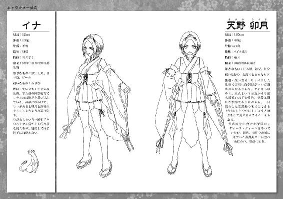

| 桜ノ杜ぶんこ かんづかさ壱 | |
| くしまちみなと | |
| (2012) | |
桜ノ杜ぶんこ
かんづかさ
くしまちみなと
鏑矢の甲高い響きが暗闇を引き裂いた。
二本......三本......と、なにかを追い詰める合図であるかのように、続けて鏑矢の音が夜の空気を引き裂いていく。
「くそっ。卯月のヤツ、景気よく撃ちやがって......こっちの動きも鈍るだろうっての」
木々のすき間から覗き見える月を仰ぎ見るように振り返ったオコジョ（？）は、愚痴りつつも暗い森の中を走り続けていた。彼が走るかなり先には黒い人影のようなものが見えるが、夜の闇のせいなのかそれとも森の暗がりのせいなのか、ソレがなんなのかは定かではなく、その動きから察するに彼はソレを追っていた。
オコジョが仰ぎ見た月の傍らには、周囲の木よりも一際高くそびえる木が一本生えており、その先端近くにある枝の上で器用にバランスを取りながら、立ったまま大きな弓を構える女性──天野卯月の姿があった。
「イナのバカめ......。きちんと考えて追い回せっての。矢は無駄にできないんだからさ」
和服を変形させた不思議な服を着た卯月は毒づきながら、キリキリと音を立てて弓弦を絞っていく。そこにつがえられている矢は、先が二股に分かれた矢尻がついた特殊な形をした鏑矢だった。
卯月の眼前には、暗い夜の森とその先に広がるさらに暗い海の色をたたえた勝浦湾が広がっており、その海と森の境界付近に星々のように瞬く民家の灯火が広がっているのが見えていた。しかしその碧い眼は、森の暗闇の中を疾駆する黒いナニかを追っていた。
夜の闇の中にさらに黒く浮かびあがる漆黒の姿。イナと呼ばれた動物が追っているソレは、さらに速度を増して人外の早さで動き回っていたが、明らかに人の影のように思える姿をしていた。
──このまま進ませると......町に出ちゃう......なっ！
ぴいいぃぃぃぃぃぃぃぃぃぃぃぃぃぃぃぃぃぃっ!!
再び甲高い鏑矢の響きが暗闇を引き裂く。
森を疾駆するナニかの進行方向の闇に矢が放たれ、それに気づいたソレは瞬時に走る方向を変えた。
「よしよし、いい子だ。そのまま向きを変えて山の中に戻っておいで......」
影は卯月が意図した通り、勝浦の市街地に向かう道を逸れて再び山中に方向を変えた。疾駆する影を目で追いつつ、卯月は再び弓に同じ形の鏑矢をつがえた。
「ひ・ふ・み・よ・い・む・な・や・ここの・たり。ふるへゆらゆらとふるへ!!」
ハスキーな声で『祝詞』を唱え、そして大きく息を吸い込んでからキリキリと弓弦を引き絞る。弓本体の大きさから考えたら、女の細腕でそれだけ引き絞れる力がどこに眠っているのかと思うほどに弓は大きく絞られ、再び矢が放たれた。
ぴいいぃぃぃぃぃぃぃぃぃぃぃぃぃぃぃぃぃぃっ!!
狙う先は全てその影の進行方向であり、あたかも行く手を遮るように矢は放たれていく。
間髪を入れずに卯月は再び矢筒から鏑矢を引き抜いて弓につがえ、影の進行方向を狙って弓を構えた。その後、合計で一〇本の鏑矢が闇に放たれた。
それらはほぼ等間隔に円を描くように闇の中に突き立ち、一〇本の矢が綺麗に円を作った瞬間から暗い森の中に淡い浅黄色の光を放ちはじめた。
「茅萱置きし、茅ノ輪造りし、茅萱敷きつめ、茅ノ輪結びし八重垣に、物囲みし八重垣ひとつ......」
呟くような小さな声で再びナニかを唱え、卯月はいきなり木の幹を蹴って森の闇に飛び降りた。
普通なら死ぬか重傷を負う高さから飛び降りたにもかかわらず、卯月はケガひとつなく片膝をつくようにして着地し、その地面に置かれていた薙刀に似た武器──長巻と弓を交換するや、地を蹴って一気に森の闇を走り出した。
人とは思えぬ速度で闇を駆け抜け、鏑矢で作り上げた、直径四百メートルほどの輪の中央にたどり着くまで一分とかからなかった。整地されたグラウンドを走るならともかく、ここは道無き山林の中であり、しかも月明かり程度しかない宵闇の中だ。
先ほど影が見せた人外の走りに負けない超人的な脚力の卯月は輪の中央に立つや、目を閉じて周囲の音に耳を澄ませた。
三月末の山中でありながら、虫や鳥の夜鳴きも羽音も、なにひとつ聞こえて来ない。
まるで生き物たちはなにかに怯えて身を竦ませているかのように、山全体が静まり返っていた。
さらに全神経を集中させるように耳を澄ませた時、彼女の鼓膜は大地を蹴るふたつの足音を捉えた。ひとつはイナの足音。もうひとつは二足歩行の足音。しかし、先ほどイナが追っていた影から想像できる歩行音ではなく、もっと不格好な二足歩行の走り方でありながらも異様な早さで足を動かすモノが放つ足音だった。
「イナの足音が......先？ あのバカ、手間を取らせやがって！」
卯月は身を低く構えて足音を捉えた方角に再び走り出した。
「うぅぅぅづきぃぃぃぃぃっ!!」
──軽々しく名前を叫ぶな！ あのバカギツネ!!
卯月は長巻を横に構え、ベソをかきながら走ってくるオコジョの後ろに迫った人形の影を薙ぎ払った。
青白く発光する長巻の刃の軌跡が宙を走り、その一閃に斬り裂かれたその太い首は宙に撥ね跳び、ドサリと重い音を立ててつんのめるようにその身体が地面に倒れ込んだ。
その直後、そこには魚が腐ったような生臭い臭気が立ちこめていた。
「クサッ！ なに......この魚の生臭いにおいは......。まさか、ここに出没していたのは夜刀浦の住人たち......？」
「そ、それは......ヤバイんじゃねえの？」
イナはいつの間にか卯月の肩に飛び乗り、振り落とされないようにしっかりと服をつかみ、キョロキョロと辺りを見回していた。
「お前が追いかけ回されて、連れてきたんだろうが！」
「オ、オイラのせいじゃねえよ！ あの黒い影を追いかけ回してたら、いきなり出てきやがったんだからさ！ 地面からガバアアアッと出てきた時には、正直、心臓が止まるかと思うくらい驚いたんだからな！」
地面から飛び出して来たということは、最初からここに卯月たちが来ることを前提に待ち伏せしていたということになる。
何よりも卯月の知る夜刀浦人は水陸両用の両生類とはいえども、あくまでも陸生はオマケ程度の能力であり、こんな山中にまで這い上がって来て地面に潜って待ち伏せしていたなんて話は、今まで聞いたことすらなかった。
「バカな......。勝浦が近いとはいえここは山中。海人のあいつらが、山に上がって来るなんてあり得るのか？」
ゲッゲッゲッゲッゲッゲッゲ......。
カエルの鳴き声を野太くしたような声が山中のあちこちから響き始めた。同時に、濃密な湿気が瘴気と共に山野のあちこちから噴出し、濃霧を作り出していく。それは普通の霧ではなく怖気を感じさせる気配を含んでいた。
「伝承の検索不足か......。あるいは、奴らも進化しているのか......」
「勉強不足ってやつか？」
イナの生意気な突っ込みに卯月は無言でその鼻を指先で小突いた。
「黙ってないと吊すよ。しかし、山川の毒気まで操るなんて......。いつの間に夜刀浦人は、こんな力と知恵を得たんだか。立派に進化しているってことか......」
「お、おい......卯月ぃ......」
「あんたもクダギツネならクダギツネらしくシャンとしな！ 霧を泳ぐようになる前に、弓を拾うからね！」
長巻の血汚れを払った卯月は、再び人とは思えない速度で弓を射ていた場所に駆け戻った。いや、戻ろうとした。
その動きを阻止しようとするかのように卯月の目の前にヨタヨタとした足取りながら、信じがたい速度で姿を現わした夜刀浦人は、およそ○○人と名前がつく人間の仲間とは思えない、魚人と呼ぶのが相応しい怪物だった。
身体のほとんどを両生類のごときヌメリ気を帯びた皮に覆われていながら、大きく硬い毒々しい色の鱗で覆われた手足を持ち、カエルを直立させたようなムチャな立ち姿をしていた。しかし、その顔はどう猛な肉食魚を思わせるアゴのエラが張った形をしており、巨大な口にはサメのような鋭い歯と、オオカミウオの牙を思わせる鋭く尖った幾本もの乱杭歯が異形の顔を飾っていた。
ガチガチと牙を鳴らして夜刀浦人は卯月に迫ったが、卯月は身を低く構えるや全力で地面を蹴って跳んだ。
長巻の一閃がその魚顔を首から斬り飛ばし、卯月がその側をすり抜けた後、斬られた首から血飛沫が噴き出した。同時に、吐き気を催させる凄まじい腐敗臭が血飛沫と共に周囲に広がった。
「くっそお！ 汚えモノを斬らせやがって！ ゾンビを斬る方がまだマシっぽそうじゃないのっ！ あとで刃を拭くのが面倒だろうに......」
卯月は鼻をつまんで口元を押さえたかったが、舌打ちしただけでそれを堪え、決して足を止めなかった。
走りながら周囲の気配を読むが、ジワジワと瘴気が結界を包み込むように広がっているのを何となく感じた。
──つまり、あたしは罠にかけられたってことか......？
卯月が鏑矢で結界を張ることを相手方は気づいていたのだろう。この山林に夜刀浦の住人たちを潜ませておき、卯月をここに誘い込むように町から逃げたのだ。その証拠に卯月とイナの追跡を妨げるように突然夜刀浦人が現れた。
この勝浦市の山林で多数の子どもが行方不明になるという事件があり、その手口や現場に残された痕跡から、どうやらそれが人あらざるモノの仕業らしいという結論を出した千葉県警と勝浦市警の要請によって宮内庁が動き、神祇官の天野卯月が派遣されることとなった。
痕跡から敵の正体はまったくつかめず、本来なら卯月一人で派遣されるような仕事ではなかったのだが、折しも新人が入ってくるとかで課長も同僚の大泉護人もそっちの対応をしなければならず、仕方なく卯月は『いないよりもマシだろう』という判断をして、嘱託で神祇官の仕事を手伝っているクダギツネのイナを連れてこの地にやって来たのだった。無論、この判断は誤りであり、今の所は卯月の期待ほどにイナは活躍をしていない。
「くっそ。場合が場合なら課長と二人っきりで外房の小旅行になってたのに、こんなクソギツネと二人で山ン中を駆け回らなきゃならないなんてえええええっ！」
「オイ。オイラはクソギツネじゃなく、クダギツネだ」
「一緒だボケ！」
「卯月マエマエマエッ！」
毒づいていた分、戦闘対応が遅れた。
いきなり土の中から飛び出して来た魚人に対応するには長巻は長すぎた。
「ちぃぃっ！」
一撃を食らうかもしれないと踏みつつも、その次の攻撃に備えた卯月の肩を蹴ってイナが魚人の顔前に飛び出し、空中で前転するやバチッ！ という激しい音を立てて背中から火花を散らした。その火花で卯月に鋭い爪を振り下ろそうとしていた魚人が一瞬躊躇した。その隙を逃さず、卯月は下からすくい上げるように長巻の刃を振り上げ、逆唐竹割りよろしく、股から脳天まで一気に切り裂いた。
「偉いぞ！ 見なおした！」
「ほめるなら現物での報償がいいなぁ。瑠●で手を打とう」
「ばっきゃろー！ あたしン家には埼玉地ビールはないよ！ あるのは常陸野ネ●トビールだけさ！」
「じゃあ、それでいいよ」
「主体性のないヤツめ！」
毒づく間に卯月は弓を置いた場所まで引き返していた。
長巻を背負い、矢筒から矢を引き抜いて弓を構えつつ周囲を窺う。
山の闇は裾野から乳白色の霧に包まれつつあった。高い木の幹に登っても、麓に広がる町明かりが見えないほどの濃霧だった。普通なら霧は高い所から低い所に降りて行くが、この霧は潮が満ちるかのように、ゆっくりと上に上にと上って行く。サワサワと囁き声を交わしながら......。
「瘴気が増してる。相手はエンラエンラだったの？」
冗談を言うだけ、卯月にはまだ余裕はあるのだろう。しかし、イナは気が気じゃなかった。
「そんなバカな話があるかよ。オイラはそんな妖怪が実在してるなんて生まれてこの方聞いたことないぜ？」
そう言う本人がクダギツネという伝説上でしか人間が認めていない存在なのだから、説得力に欠けるというものである。しかし、卯月はそんなことを気にしてもいない様子だった。
「じゃあ、この霧はいったい......なんなの？」
霧が何者かの意思に従っていることは確かだった。そして、さっきから気になる、本来なら海の住人である夜刀浦人が山を徘徊していることもおかしな話だった。
「ここは山の中なのに、なぜ夜刀浦人がここにいる？」
罠を仕組んだ何者かが夜刀浦人と取引した結果、彼らがここにやって来たとしか考えられない。これはほぼ確定したことであり、つまり、卯月が──というか、神祇官がここにやって来ることが事前に漏れていたのか、予測されていたことになる。
「このおかしな情報を持ち帰らないとね」
「お前、死ぬ気でいたのか？ オイラはお前を置いてでも逃げるぞ」
「うっさい！ 持ち帰るって言ってんだから生きる気でいるに決まってんだろ。ボケギツネ!!」
卯月は地を蹴って一気に木の枝に飛び乗り、さらに跳んで上に上にと進み、円形の結界を張った時のように幹に脚を絡めて身体を固定し、弓を構えた。
「矢筒に矢は五本。奴らの数は何人かねっ」
ゲッゲッゲッゲッゲッ......。
四方から呼び合うカエルのような声が響いた。その数はどう見積もっても五匹以上はあの魚人がいるように思えた。
「予想よりも、多そうじゃねぇか？」
「それなら斬り刻むしかないねぇ......。臭いから嫌なんだけどな......」
そう言いつつも舌なめずりした卯月の顔には、残酷さが混じった妖艶な色気が漂い、街中で会ったらヤクザでも尻込みしそうな戦いを好む者の雰囲気が漂っていた。
そしてその眼光が注がれた霧の闇に矢が放たれる。
「ひとつ......」
悲鳴こそ上がらなかったが、卯月の耳は矢が肉を貫き木の幹に突き立つ音を捉えていた。ひとつ......またひとつ。次々と矢をつがえては放ち、卯月は霧に身を潜める魚人を射殺し、百舌の速贄のように立木に突き吊して行った。
「さて、残りは幾つかな......？」
耳を澄ますと、まだペキペキと小枝や草を踏み折る音が微かに聞こえていた。しかし、その数もごくわずかであり、片手で数えるほどしか感じられない。
「心配するほどのことはなかったか？」
イナの言葉に卯月は険しい表情でのみ応えた。
夜刀浦人がその能力を発揮するのは水中であり、こんな山林ではいい的にしかならない。一度に大量の接近を許せば、その怪力で苦戦を強いられるかもしれないが、大量に近づけなければどうということはなく、陸上での一対一の戦いなら卯月は負ける気がしなかった。
あくまでも陸上戦ならばだが......。
しかし、そんな夜刀浦人を使い捨てるかのようなこの戦い方はどこかおかしい。
──戦いのノウハウを知らないアホウか、それとも......こいつら自身が新たな罠のひとつなのか？
恐らく後者であろうことは予測できたが、罠ならなにを考えて仕掛けたのか見当がつかない。卯月の体力を消耗させるためだとしたら、こんな生易しいやり方では不可能だった。
残った夜刀浦人が卯月の立つ樹の根元周辺に集まり始めており、考えている時間はないことは分かっている。しかし次の一手が見えない限り、迂闊に切り込む訳にはいかない。少なくとも、考えられるギリギリまで、卯月はその可能性を探っていたかった。
──目的はなに？
しかし、卯月にその余裕を与えぬつもりか、木を登りはじめた夜刀浦人が間近に迫ったために、卯月はその頭部に長巻を突き入れた。しかし、硬い頭蓋を突く手応えを感じ、舌打ちした卯月は瞬時に切っ先を横に薙ぎ斬る。
切られた夜刀浦人は悲鳴を上げて落下した。それを見ていた周りの夜刀浦人たちは攻めあがるのを躊躇し、樹上の卯月をただ見上げた。
本当なら群れに飛び込んで一気にケリをつけたい所だったが、鼻を突く異様に青臭い瘴気に、卯月はそこの中に飛び込むのを躊躇していた。
古来、瘴気は山川の放つ毒素とされてきた。
今まで瘴気など恐れたことのない卯月だったが、この下に立ち込めて次第に濃く凝縮していくような瘴気の濃霧には、背筋が粟立つ感覚を感じる。
──ナニかいる？
霧のなかで泳ぐようにナニかが蠢く気配を感じた。形が定かなモノではなく、たとえるなら濃密な霧。瘴気の海を泳ぐ獣。
濃霧に飛び込めば、そこは向こうの領分だった。当然、水棲の夜刀浦人もただの陸上よりも霧中の方が幾分マシな行動を取れるだろう。
「霧がさらに濃くなんのを、コイツらは待ち構えてんのか？」
「だけど、霧はどこまでいっても霧だろう？」
湿度九九パーセントでも霧は霧だ。水にはならない。
──だとしたら......霧を水と感じさせる術でもあるのか？
その卯月の疑問に答えるかのように、霧中の夜刀浦人の渇きかけた肌はヌメリと艶を取り戻し、生気すら増したように思えた。
──この霧の濃度と水かさがませば、コイツらは空も泳ぎ出せるのか？
その疑問が真実なら、敵の策略は卯月から飛び道具を奪うことにあり、それはほぼ完璧に成功したことになる。矢筒は空であり、卯月に残された武器は長巻と八握剣しかない。
しかし、このままこの樹上で待ち構えていたとしても、瘴気を含んだ霧は潮が満ちるように増してくるだろう。一人でここに派遣された状況で救助のアテはなく、このまま座して死を待つことになりかねない。だとすると、この窮地を逃れる策は限られてくる。
「イナ......。お前、どのくらい息を止めていられる？」
「五秒かな？」
「じゃあ......死ね」
「ウ、ウソだよ。お前、ホントに気が短いよな......」
「脱出するには、どう考えても木々を飛び移るかそれとも下に斬り込むかのどちらかしかないわけ」
「で、卯月としては、下に斬り込む方を選びたいと？」
卯月はニヤリと笑って見せた。
「よく分かってんじゃん。あたしのことをさ」
「冗談じゃねえ！ オイラにゃ妻も子どももいるんだ。かんべんしてくれよぉぉぉっ！」
「しゃべってると瘴気を吸い込むよ！」
「ンッぷっ！」
卯月は大きく息を吸い込んで呼吸を止めるや、長巻を構えて幹を蹴って飛び降りた。そのまま真下で待ち構えていた夜刀浦人の脳天を唐竹割りにして着地するや、横跳びに跳ねて走る。
濃霧の海の中は視界が一メートルもなかった。
草刈り後の植物が放つような独特の青臭さが立ちこめて充満し、大量に体内に吸い込めば酔って胃の中の物を吐きそうな臭気が充満している。
呼吸を止めたまま聴覚と肌に触れる空気の感触、そして記憶の中の木立の配置を頼りに、卯月は長巻を薙ぎ払い見えない場所に潜む夜刀浦人を斬り裂いた。しかし視界が悪いためにどうしても踏み込みが甘く、手に伝わってくる感触からは斬った相手に致命傷を与えていないことが理解できる。
「ぐっ......」
息が詰まってきたために卯月は一度地面を蹴ってそばにあった木の幹を駆け上がり、濃霧の上なる枝にしがみついて大きく息を吐き出した。
「ぷはぁっ！ くそっ、また水位が上がってないか？」
「このっ！ オイラを殺す気かよ!? お前の肺ほどオイラの肺はでっかくねえんだよ！ 無駄にでけえ胸しやがって！ その分肺がでけえんだろうけどよ！ あ......」
振り落とされないように必死で卯月の肩にしがみついていたイナは、ゼーハーゼーハーしながら毒づいたものの、突き刺すような冷たい卯月の視線に口を塞いだ。
「おい......。独りであの濃霧にダイブするか？」
「え？ ボクチャンおとなしくしてますよ？ 姐さん。やだなぁ、もう」
「ふんっ！ 吟醸四●桜の一本分貸しな」
「高いっすよぉ！」
「次は天●舞でも請求しようか？ さあ、もう一度行くよ！ って......なっ!? なんだよ、これはっ!!」
濃霧が間欠泉のように噴き上がり、そこから飛び出したのは、血走った両眼をギョロリとさせる汚らしい髭面の男の顔をした、体長が三メートルほどはあろうかという全身を剛毛に覆われた巨大な獣だった。
その姿を見るなりイナは叫んだ。
「魑魅だっ!!」
「魑魅魍魎の魑魅なの!?」
「そう。瘴気の中で成長し、人を攫い死体にし、腐らせてから喰らうって御霊だ!!」
「そこまで知ってんなら、瘴気を見た時に可能性として挙げて教えておきなさいよ!! 使えないヤツ！」
吐き捨てながらも卯月は魑魅が身構える前に躍り掛かり、身体をひねり遠心力を加えつつ斬りつけた。しかし、ガキッ！ という激しい音と共に魑魅はかぎ爪で切っ先を打ち払い、身体全体をバネにして巨大な犬歯を叩きつけてきた。だが、その攻撃を予測していた卯月はさらに身体をひねり、魑魅の横面を長巻の石突きで殴りつけて吹き飛ばした。
「さすが、土浦レディース総長！」
「元だろ、元ッ！ それほめ言葉にもなってないよ！」
樹木に脚をかけて体勢を整えた魑魅が反撃の体勢を取った時、卯月も樹木のしなりを利用して勢いづけて長巻を突き入れるべく、もう一度飛びかかった。
空気を切り裂いて突き出されたその切っ先を、魑魅は間一髪の所で避けてそのまま墜ちるように濃霧の中に姿を消した。入れ替わりに飛び出した夜刀浦人が追撃しようとした卯月の行く手を阻み、そのかぎ爪を横薙ぎに払ってきた。
「くっそっ！ 汚えぞ！」
攻撃を長巻で受け流してかぎ爪をかわした卯月はそのまま、体勢を崩した夜刀浦人の顔面を拳で殴り倒し、さらに腹部に蹴りを叩き込んで踏み台にして樹上に跳び戻った。
「いつまでもあたしをなめた真似すんじゃないよ！」
長巻を宙に放り投げるや、卯月は二拝二拍手を打ち、目を閉じた。
「祓い給い清め給え、守り給い幸え給え！」
祝詞を唱えてからさらに一拝し、上から落ちてきた長巻を頭上で手にするや、風車のように手の上で回転させはじめた。
「高天原天つ祝詞の太祝詞を持ち加加呑みてむ、祓え給い清め給う！」
回転する長巻の周辺では空気が渦を巻き、その渦はやがて周辺の枝葉を刻み飛ばし、竜巻となって地上に接し濃霧を散らしはじめた。
「守り給い幸え給え！」
祝詞と共に濃霧の中に長巻を投げ込むや、竜巻もそれを追うように動き濃霧に覆われつつあった森を引き裂いて行く。
「邪魔すんな！」
飛びかかってきた夜刀浦人を引き抜いた八握剣で斬り倒しながら、卯月は祝詞を唱え続けた。
「身健やかに世のため人のため尽くさしめ給えと、恐み恐み申す！ 祓い給い清め給え、守り給い幸え給え！」
祝詞を唱え終えた時、鏑矢で作り上げた結界の中だけ濃霧が消え去っていた。そればかりか、青臭い臭気を放つ瘴気も共に散らされていた。
「はぁ......はぁ......はぁ......この......なめんな......」
卯月は荒い息を肩でし、全身に滝のように汗をかいていたが、その眼は瘴気を失ったことで狼狽える魑魅をとらえて離さなかった。
「てめえのせいで、余計な力を使っちまったじゃねえか！ その罪、万死に値する！ そのまま死ねええええっ！」
長巻を肩口に構え直すや、全身のバネを使って卯月はそれを槍のように投げつけた。
ブンッという音と共に空気を切り裂いて飛んだそれは、避ける間もなく魑魅の眼に突き立った。
「ぎゃあああああああああああああああああああっ！」
「山におとなしく潜んでいればいいものを、ノコノコ人里に出て来て人を惑わせてんじゃねえええええっ！」
人間のような絶叫を上げつつ逃げようともがく魑魅から長巻を引き抜いた卯月は、返す刀でその首を斬り落とした。
地面に落ちた魑魅の額に札を貼り、その顔に向かって卯月は両膝をついて座り、二拝二拍手を打ち、再び祝詞を唱えはじめた。
「高天原に神留座す皇親神漏岐、神漏美の命を以て、天津祝詞の太祝詞事を宣れ、如此宣らば罪と云ふ罪、咎と云ふ咎は在らじ物をと、祓い給い清め給えと申す事の由を、諸の神等、左男鹿の八つの御耳を振立てて聞食せと申す」
長い最要祓の祝詞が唱えられるに従って、乱れていた森の空気が静まり、さらには結界を包んでいた濃霧も消え失せ、勝浦の山は静かな夜を取り戻した。
そして生き残っていた夜刀浦人たちは、祝詞の音から逃れるように夜の闇の中に姿を消していった......。

翌日、千葉県警と勝浦市警、そして消防団による何度目かの一斉山狩りが行われた。
魑魅の力で隠されていたために、今までの山狩りでは見つけることができなかった山中の洞窟から、行方不明になっていた子どもたちの遺体が発見された。
いずれの遺体からも喰い千切った痕跡が残されており、それが直接の死因という結論がつけられそうだった。死後、子どもたちの身体は解体され、臓器を抜き出された痕跡があったが、肝心な臓器がどこにも見あたらないことから、警察は化物が臓器を喰った可能性を考えた。
さらにその洞窟から、男性器を象った小さな御守のようなものが発見された。長さが三センチほどの小さいが純金製のものであり、そこからは少なからず妖気じみたものを卯月は感じ取ることができた。
「金山神の信者か天狗信仰者でもいたの......？」
被害者の平均年齢は一〇歳。最高年齢は一四歳であり、昨今、この手の物を祀る祭りが盛んになっているとはいえども、どう考えてもそんな男性器信仰の信者となる年齢とは考えがたかった。かといって、被害者の中に天狗修行中の者がいたとは考えられない。
房総地方では天狗信仰はそれなりに残っているが、こうした性器信仰をともなうものは記憶になかった。
それ以外にあったものは、成人男性のモノと思われる衣服がひと揃い。こちらもボロボロになっていたことから、卯月と戦った魑魅の被害者のものと判断された。
最も卯月の興味を惹いたモノは、その洞窟の最奥の床に残されていた、円形のナニかが長い間そこに置かれていたらしい跡だった。周囲の土の乾き具合といい、くっきりと残されていたその円形の形といい、少なくとも数十年から数百年はそこに安置されていたと思われる。円形の直径は、およそ五〇センチはあった。
「謎ばかりを残したまま消えたか......」
「消えた？ 消しちまったの間違いだろ？」
卯月の肩に乗って捜査の様子を観察していたイナがそう小声で漏らした。
「うっさい。少なくとも、この御守の持ち主はあの魑魅じゃない。だいたい、洞窟に残っていた痕跡はなんなんだか......」
円形の痕跡は気になるし、成人男性と子どもの死体の扱い方の違いも気になって仕方なかった。
なぜ、成人男性は衣服を残してその身体を微塵も残さずに消えたのか？
なぜ、子どもは多少かじったものの、その内臓のみを取り出して、残った身体は放置しておいたのか？ 魑魅のグルメ的な感覚から、そのまま肉がほどよく腐るのを待っていたという理由も考えられるが、肉を腐らせるなら内臓を取り出さずに残しておいた方が、よほど早く腐乱していく。
そして、夜刀浦人を協力させた理由はなにか？
立ち止まって現場を観ているだけでも、疑問が次々と浮かび上がって来る。
「なんにしても、こんな山狩りで解決するような事件じゃなさそうだな。絶対に次があるぜ。だからまぁ、こんな所はさっさと切り上げて帰ってさ、ビールでも飲んで英気を養おうぜ。オイラも徹夜で疲れたよ」
「次があるってことと、ビールには同意できそうね......」
興味深そうに御守を見ていた捜査本部長に断りを入れてソレを回収し、現場資料を宮内庁式部寮に送ってもらうようお願いしてから、卯月は現場を後にした。
今、ここで卯月にできることはなかったし、なによりも消耗した身体を休めて必ず来るであろう次の戦いに備える必要があった......。
壱
「なんで......。なんであたしが皇居に来てんのよ！」
栃木県にある、某国民的アイドル・グループ内で一、二位を争う女性アイドルを輩出したこと以外、あまり際だった話題のない田舎の県立高校を卒業した五祝神奈（一八歳）は、今、東京は皇居・桜田門の前で呆然と立ち尽くしていた。
「なんで......あたしはココに来たんだ......っけ？」
そもそもの発端は、地方公務員の採用辞令交付式だった。
神奈は無事に地方公務員試験に受かり、四月から栃木市役所で働くことになっていた。
大正浪漫の世界が大好きな神奈は、憧れの大正建築物である栃木市役所別館がある栃木市役所という安定した職場で働くことが夢だった。
安定した夢の公務員生活！
その約束された夢が今叶う。
意気揚々と採用辞令交付式に参加した神奈は、今年の合格者たちと共に式場のパイプイスに座り、自分の辞令書が渡されるのを今か今かと待ち構えていた。
「五祝神奈......さん？」
「はいっ！」
辞令書を持っていた職員の語尾が疑問形だったことに、緊張していた神奈は気づいていない。
おまけに呼び方が呼び捨てではなく、名前の後に〝さん〟づけだったことにも気づいていなかった。
──別館勤務が叶っちゃったらどうしよう......。今年から別館でも新人が働けるようになったんだ。仕事は別館を毎日ピカピカに磨くこと、ただそれだけだ......みたいな！ うひゃあああ、そんなんだったら幸せ過ぎて涙が止まらないよぅ。
心の中は市役所別館のことでいっぱいで、疑問に思う余地もないようだ。
「五祝神奈さん......」
「はいっ？」
「キミの勤務地はここではない。今すぐ準備をして、早急に桜田門に行きたまえ」
「は......？ 桜田......門？ それって、ドコですか？」
交付式会場がザワめいた。
それもそのはず、栃木県の南端に位置する栃木市から桜田門になんの用事があって行かされるのか？ しかも交付式の最中に行けだなんてただ事じゃない。ザワつかない方がおかしかった。
しかし、当の神奈はポカーンとしたままで、どうしていいのか分からなかった。
「今の時間なら東武線の特急に乗って北千住まで行き、そこから千代田線に乗り換えて日比谷まで行ったら有楽町まで歩き、そこで有楽町線に乗り換えれば桜田門に到着する。急ぎたまえ！」
何も見ずに経路を伝えた職員に、神奈は驚くばかりだった。
「凄いですね。なにも見ないでそんな経路とか言えるなんて。あたしには無理ですよぅ」
「ふふん。そんなこと、テツなら当たり前のことだよ」
「テツってなんですか？」
「鉄道マニアのこ......じゃない！ キミッ！ さっさと行きたまえッ！」
ほめられてつい、テツの魂が揺さぶられてしまったものの、本来の職務を思い出した職員は我に返って神奈に指示を出した。
「はっ、はいっ！」
あわてて頭を下げた神奈は、そのまま自分の席に戻って荷物を抱え振り返った。
「えっと......」
「なんだね！ 早く行きたまえッ！」
「半蔵門でしたっけ？」
「桜田門だ！ そこに行ってもなにもないぞ！」
「はいっ！ 行って参ります！ あ......」
再び振り返った神奈に、職員は声を荒げた。
「今度はなんだね!?」
「電車賃払っちゃうと今月の生活が苦しくなるんで、お金貸してください！」
採用辞令交付式でお金を貸してくれなどという者は、前代未聞だった。しかし、神奈の行き先を理解していた職員は、眉間にシワを寄せてため息をつきながらも、ポケットから財布を取り出し、一万円札を抜き出して神奈に渡した。
「やるんじゃない、貸すんだぞ！ なんだったら先方からお金を支払ってもらいなさい。こんな当日に呼び出すなどという無理な要求をしてきたのはあちらなのだから」
「は、はいっ！ 半蔵門じゃなくて......」
「さ・く・ら・だ・も・んッ！ さらに名前に門のつく駅を挙げる気かね？」
「桜だもんっですね。行って参ります！」
深々と頭を下げた神奈は、今度こそ立ち止まることなく駆け足で会場を飛び出した。
会場に残された新公務員たちが、神奈が無事に目的地にたどり着くのだろうかという心配そうな眼差しを向けていたことを、当の神奈は知るよしもなかった......。
しかし、その心配とは裏腹にというか奇跡的に、神奈は指示通りに電車を乗り継いで地下鉄桜田門の駅に着いた。
だが、問題がもうひとつあった。
神奈は行き先が桜田門であることしか聞いていなかったのである。
「桜田門って言っていたのだから、きっと、桜田門って場所に行けってことよね。駅で待ってろっていうのなら、改札口前とか色々言ってくるはずだし......」
そもそも桜田門駅の改札口はふたつ存在する。しかし、ここでも運命に導かれてでもいるのか、それとも悪運強いのか、神奈は正確に皇居の桜田門がある改札口を当てずっぽうで選んでいた。
同時に時間指定こそされてはいないが呼びつけた以上は、常識的に考えて相手がこちらを待っているであろうと想定し、待たせてはいけないと神奈は焦り、自然と歩く足は駆け足に変わっていた。
「え、駅員さん！」
「は、はい？ なんでしょうか？」
息せき切って駆け寄ってきた神奈にビビリつつも、改札口にいた駅員は、神奈の着慣れなそうなスーツに身を包んでいる新社会人っぽさに、初日から遅刻しそうであわてているのだなという好意的な判断をくだしていた。
「さ、桜田門って......ドコですか？」
「はい？ 駅ではなくて、門の桜田門ですね？」
「た、たぶん......そう、です......」
「桜田門なら、そこの３番出口を出れば目の前です。って、桜田門？」
今日が公務員の採用辞令交付式であることを、勤続五年の経験からこの駅員は知っていた。桜田門に関係する公務員たちと、今、彼の目の前でヒーハーヒーハーしている女の子は、どう好意的に見ても関係あるようには見えなかった。関係あるとしたら、参考人として呼び出される程度の関係にしか思えない。
だがしかし、もしかしたら異様に若く見えてしまう女性なのかもしれない。
「あ、ありがとうございます！ ソレ行け、あたしっ！」
「あ、ちょ、ちょっとキミ！ 桜田門のドコに？」
あわてて呼び止めようとした駅員の声は、幸か不幸か神奈の耳には届いていなかった。
履き慣れないパンプスの音が地下道に響き渡り、『これは後で靴擦れになるな......』と苦い顔をしつつ、神奈は階段を一段抜かしで駆け上がり、その先に見える澄んだ青空の下に飛び出した。
その眼前に広がっているのは、美しいお堀端の光景。
石垣の上に置かれた白壁の城。
凱旋濠の先に見える丸の内のビル群。
「はっ？ えっ？ ええええええっ!?」
この光景を目にした神奈は、ようやく自分のおかれた状況に気づいたのだった。
「なんで......。なんであたしが皇居に来てんのよ！」
という最初の台詞にようやく戻る。
超弩級の天然娘として学校でも、そして採用辞令交付式でも天然っぷりを発揮してきた神奈でも、今、目の前に広がっている場所が皇居であり、この国のやんごとなきお方がお住いの場所であることくらいは知っていた。
「なんで......こんな場所に......」
キリキリキリ......と、まるでゼンマイ仕掛けの人形のような仕草で後ろを振り返ると、そこには神奈を見下すような高圧的な印象を与えるビル──警視庁がズズンッと鎮座していた。
「ゲッ......警察？ も、もしかして......なんかあたし......した？」
桜田門が警視庁の別名であることなどまったく考えもせずにここまで来た神奈だったが、どう考えても目の前の皇居よりも自分に用がありそうな機関は、背後で威圧的に見下ろしている警視庁以外にはなさそうに思えた。
「あたし......刑事さんに捕まるようなことはしてないから......。もしかして、なにかの事件の重要参考人？」
確かにそう考えるのが、より現実的な方向だと思えた。
しかし、高校も平凡な生活しか送って来ていない神奈には、警視庁に呼び出されるような重大事件を目撃した覚えも無かった。
せいぜいやったことと言えば、修学旅行に縄ばしごを持参して夜中にホテルから抜け出したくらいである。しかし、そんな冒険もたった三〇分で市内を見回っていた教師に見つかってしまい、何事もなくアッという間に終わっていた。
他になにか神奈が気づいていないことで、警視庁に呼び出されるような事件を目撃していたのかもしれない。そう考えて、考えて......色々と考え始めたのだが......。
「もしかして。アイドルばりのイケメンＳＰが、あたしのことを身を挺して守ってくれちゃったりしちゃったりなんかして......」
妄想が突っ走るタイプだったので、アッという間に現実的な考え方は妄想に墜落した。
「おい」
「え、いや......でも、桜田門に行けって言われたんだから、もしかしたら桜田門を掃除する仕事なのかもしれない......。あたしの趣味は、大正建築だからちょっとっていうか、かなりズレてんのよね......」
「おい。五祝神奈」
「だいたい、何とか門の掃除って、たいてい屋根裏に死体が大量に放り込んであったりすんでしょ。確か、芥川さんもそんな体験した話を書いてなかったっけ？」
天然女にかかれば文豪も芥川さん扱いだし、大して作品も読んでいないのでアヤフヤもいい所の内容しか覚えていない。覚えているというか、いつの間にか体験談になっていた。
「平城京の門の上に置かれている死体を洗う仕事を引き受けた......アタッ！」
そんな文豪の作品に対する冒涜的な内容を考え出した神奈の後頭部を、まるで文豪に成り代わってお仕置きをするかのように誰かがド突いた。
「アタタタ......いっったーい......」
「おい！ 五祝神奈だな？」
「なによ？」
名前を呼ばれていることに気づいて振り返った神奈の前には、スーツに身を包んだかなりなイケメン男が、触りたくないモノを見るような目つきで立っていた。歳は、二〇代半ばくらいというところだろうか？
「誰？」
「誰じゃない。五祝神奈だな？」
「五祝神奈ですけどぅ......」
「ですけどぉ......？ なんだよ？」
「他人に名前を聞く時は、まずは自分から名乗るもんだって習いませんでした？」
「習っていない」
「それは、お母さんの躾がなっていないですね」
確かに、親の躾がなっていないという部分ではうなずけた。
「うるせえ！ お前が五祝神奈かどうか確認する必要がある。採用通知書はあるか？」
「だから、あなた誰ですか？」
「グダグダ抜かすとあそこにブッ込むぞ！」
そう男が指さした先には、先ほど神奈の妄想を突っ走らせた原因である警視庁舎がそびえ立っていた。
すると、この男が派遣されてきたイケメンＳＰ？ と、再び神奈の妄想がトップギアで暴走しはじめた。
「ああ、刑事さんですか。だったらさっさとそう言ってくださいよ」
男は『ちーげーえーよっ！』と叫びたいのを必死で堪えていた。ここで自分が言いたいことを堪えれば、このかみ合わない会話をちょっとだけ進展させることができる。それが感じ取れたからだ。
事実、男のことを勝手に刑事と判定した神奈は、ゴソゴソとバッグの中を漁って採用通知書が入った封筒と一緒に、写真付き住基カードを提示してみせた。
「なんだ、住基カードを持っていたのか」
「はい。高校卒業しちゃうと身分証がなくなっちゃうから。ちょっと前に作りました。本当はその時、この髪もばっさりと切っちゃおうと思ったんですけど、なんか採用通知を持ってきてくださった人が、髪は切っちゃいけないって言っていたので......」
そう言って神奈は今時の子には珍しい綺麗な黒髪を揺らした。
神奈を社会人に見えさせない理由に、長い髪をポニーテールに結っていることが挙げられた。他にも、幼い顔立ちとか色々とあるが......。その黒髪は、ただでさえ幼く見える神奈のことを大人ではなく、高校一年生くらいに見せる原因になっていた。
「じゃあ、行くからついてきて」
男は採用通知書と住基カードをおざなりに確認して神奈に返すと、先に立って桜田門の方に歩き出した。
「刑事さん、名前！ 名前教えてください！」
「ああっ？ ったく......。俺は刑事じゃない」
「え......？ って、騙したの？ 人さらい!?」
一気にＳＰの妄想が消失した瞬間、新たに田舎から出てきた可愛い娘を薬漬けにして外国に売ってしまうという、怪しい都市伝説じみた妄想がスタートし、神奈の警戒心はマックスにふくれあがった。
「なんで人さらいにつながんだよ！ 刑事だって、お前が勝手に間違えたんだろ！」
「だって、否定しなかったじゃない！」
確かに作為的な意図をもって、この男は刑事ではないことを押し隠していたことは事実である。ただ単に、かみ合わない話を進ませたかっただけという理由なのだが......。
男はその辺の説明をしなおすことを面倒臭く感じたのか、素直に頭を下げた。
「分かった。否定しないで悪かった。俺は、これからお前が就く同じ職場の人間で、名前は大泉護人。これでいいだろ？ 分かったらついて来い」
「大泉......先輩ですか？」
「学校じゃないんだから先輩はいらない」
「あ、はい......。じゃあ、大泉さん......。よろしく......お願いします」
そう返事はしたものの、神奈の疑いが消えたワケではなかった。
なんとか情報を聞き出して自分なりに現状を考えようという意図と、これから先、自分がドコに連れて行かれるのかを探り出し、場合によってはお堀に飛び込んででも逃げ延びようというハリウッドのアクション映画的な展開すら考えていた。
「なんか、言いたいことあるのか？」
半歩後ろをついてくる神奈が、なにか不服そうな顔をしているので、護人は気になって仕方がなかった。
ペチャクチャおしゃべりをされ続けても困るが、探るような視線で背中をチクチクと容赦なく突き刺され、ふくれ面をされっぱなしというのは精神的にキツイものがある。
「大泉さんは、栃木市役所の方なんですか？」
「はぁッ!? ここは東京都だぞ？ なんで栃木市役所なんかが出てくんだ？」
「だって、あたしは地方公務員で栃木市役所の事務につくはずだったんですよ」
「そ、そうだな。だからといって......」
振り返った護人は、神奈の困惑した顔を見て言葉を止めた。とにかく、言いたいことを言わせて、ここで誤解を解いておく方が後々面倒臭くないと、その顔を見て理解した。
「つ、続きを......どうぞ」
「は、はぁ......。あたしは栃木市役所東京出張所というのがあって、そこに緊急出張させられたんだと思っていたんですが......違うんですか？」
護人はお堀に飛び込む勢いでつんのめった。
「なんで......。なんで一地方都市の役所の出張所が、東京の皇居の中にあるんだよ!?」
「ええっ！ だ、だって、埼玉県だって、埼玉領事館っていうのを東京都に持っているじゃないですか！」
「いつの知識だ！ そんなものとうの昔に閉館してるわ！ だいたい、アレがあったのだって新宿だろうが！ 皇居の中にそんな地方機関は存在しねえよ！」
「ええええっ!? 閉館しちゃったんですか？」
埼玉領事館は平成八年一〇月に新宿に設置されたが、効果の割りに過分な予算がかかるということから、平成一七年に廃止となっている。なお、正式名称は埼玉県情報センター新宿である。
「じゃあ、その跡地に栃木市が領事館を設置するとか？」
「ないないない！ もう、その領事館から離れろ！ だいたい、県以下の地方都市がそんなものを持つ必要がないだろ！」
「でも、栃木市は昔は県庁所在地だったんですよ？ 知らないんですか？」
遙か昔、明治時代の話である。
「ンなもん知るか！」
「じゃあ、なんであたしがココに呼び出されたんですか？ おかしいですよ！ だいたい、同じ職場って言ったくせに栃木市役所じゃないってどういうことですか？」
それは、もっともな話だった。
さすがに警戒されても仕方ないと感じたのか、護人は頭をポリポリかきながら、懐から警察手帳のようなものを取りだした。
「とりあえず、俺の身分証はコレな」
そこには確かに護人の顔写真が貼ってあり、本物のように思える。
「やっぱり刑事さんだったんだ」
「ちーがーうーっ！ ここに書いてある字をよく見ろ！ 警視庁とも警察官ともドコにも書いてねえ！」
護人が指さした顔写真の下には、『宮内庁式部寮所属神祇官』と警察官とは異なる難しい漢字が書き込まれていた。
「え？ ええ？ 神......あー......官？ 宮内庁？」
「お前、今、読めない漢字を飛ばしただろ！」
神奈はさりげなく目をそらして口を尖らせた。
「ったく......。とりあえず、お前の行き先は、この先にある宮内庁式部寮だ。そこで、ウチの課長が待ってる」
「く、宮内庁が......あたしに？」
なぜ？ という文字しか、神奈の頭には浮かんでこなかった。
宮内庁など、高校を出たての神奈にはまったく縁もゆかりもない場所だった。
自分の高校の大先輩ならともかく、スポーツでも芸能でも取り立ててなにができるわけでもない神奈に、宮内庁という場所はまったく接点が見つからない。
「あ。じゃあ、あたしは太平山神社にでも配属されるんですか？ あ、でも宮内庁って神社は管轄してないですよね？」
「はあ？ ドコだよそれ！ もういい、しゃべるな！ 頼む、混乱するから黙ってついて来てくれ」
そんなことを言われても、神奈にとっては将来に関わる重要な問題である。
市役所に勤めるはずが、どういうことか目の前にいる護人の話が本当なら宮内庁勤務ということになる。
宮内庁という言葉から想像できるのは、御所とか、皇居とかという単語であり、そこに自分が関われそうな仕事は、芝刈りとか庭のお手入れとかゴミ拾いとかくらいしか思いつかなかった。
「あ......日光？」
「今度はなんだよ」
「日光とか那須の御用邸の管理人をするとか？」
「違う！ まったく違う！」
「そんなに怒らなくてもぅ......」
神奈はふくれて口を尖らせた。
他に考えられそうなのは栃木市の観光大使くらいしかないが、無名の元女子高生がやるよりも、よっぽど県出身のアイドルにやらせた方がマシに思える。
そう言ったものよりなによりも気になることを思いついた。
「あの......」
「なんだよ？」
「宮内庁って......国家公務員ですよね？」
「そうなるな」
「あたし......受かったのは地方公務員の初級ですよ？」
「正しくは、市役所初級だな」
「ぐ......」
護人のイヤミな言い方に神奈は言葉を詰まらせた。だが、神奈はそこで詰まったままになるような女じゃない。
「そ、そうですよ！ そんな市役所初級なあたしに、国家公務員しか雇わない宮内庁が、いったいなんの用があるんですか？」
「はぁ......」
かみつくような神奈の言葉に護人はため息をついた。
「頼むからそうせっつくな。もうすぐ分かるんだから、おとなしくしてろ」
「ぷぅー」
納得のいかない答えに、神奈は口を尖らせてそっぽを向いた。
「皇居に入るんだから、そんな顔するな」
「はあっ？」
護人の言う通り二人は宮内庁を正面に見る坂下門にある、皇宮警察本部坂下護衛署のそばに来ていた。
「こ、皇宮......警察......？」
「御所を御守りする警察部隊だ」
そう言いながら坂下門の門番をしている警察官に、すでに顔見知りという印象で敬礼をして通過する護人。その姿を見て、どうやら護人の身分証は本物らしいということを思いつつ、神奈は縮こまりながら門番に軽く頭を下げてそこを通過した。
普通なら呼び止められるのだろうが、すでに護人の側から話が通じているのだろう。門番の警察官は、軽く黙礼しただけでなにも言わずに通してくれた。
その門を潜ると、手入れされた日本庭園である御所の世界が広がっていた。
「ま、待ってください。やっぱり場違いですよ！ あたし、間違われてません？」
どう考えても自分と皇居、そして宮内庁のつながりが分からない神奈は、最終的に行き着いた結論である『人違い』にすがりついて叫んだ。
しかし、面倒臭そうなため息をつきながら振り返った護人は、それを真っ向から否定する気満々の顔をしていた。
「五つの祝いと書いて〝いわい〟なんて読む苗字、この日本にどれくらいあるか知ってるかい？」
「し、知りません。友達にも珍しいとは言われましたけどぅ......」
「俺の苗字は、この国では一二八九番前後のごく普通にある苗字だ」
「そ、そうなんですか？ じゃあ、あたしは......えと、二千番くらいですか？」
おずおずと申し出た神奈の言葉に、護人は吹き出した。
「ブーッ！ 不正解。七千番以下だ」
「はあ？」
「七千どころか......たぶん一万何千という位置にある、希少な苗字なんじゃないか。レッドデータだろうな」
「あたしは絶滅危惧種ですか？」
「近いんじゃないか。そんな珍しい苗字を間違えるか？」
確かに五祝などという苗字は、変わった苗字がある京都府を探しても出てこない。検索すれば分かるが、三重県鈴鹿市に五祝町という土地があるくらいだった。人名で言うと、日本中を探してようやく数家族程度が存在するくらいの極端に少ない名前である。
「そんな......」
じゃあ、自分が宮内庁に呼び出される理由はいったいなんなのか？ まったく分からずに困り果てた神奈の前で、護人は足を止めた。
「ここが宮内庁だ」
改めてそう説明され、足が竦む思いをしながら神奈は宮内庁の建物を見上げた。
──なんで、あたしがココにいんのよぉ......。
それは本人のみがまったく知らぬ、周囲の思惑が働いた結果以外のなにものでもなかった......。
弐
宮内庁の建物自体は警視庁のビルのように威圧感のあるものではなく、皇居の中にあっても違和感がないように設計された堅牢な石造りの建物だった。昭和初期の建造故に建物を見上げる神奈の好みからは外れるものの、近代の箱形ビルにはない和の趣きが感じられる建物だった。
──国会議事堂みたい......。
小学生の頃に社会科見学で国会議事堂を見ただけだが、その感想は正しく、現在の国会議事堂は宮内庁庁舎が建設された翌年に帝国会議事堂として建設されているために、建物から受ける印象などが似通うのも仕方ないことだった。
「ほれ、行くぞ」
「あ、はい」
護人に促されて玄関を潜った後、豪華な廊下をしばらくの間歩き、緊張の面持ちの神奈が通された場所は、三階にある場違いなほどに広い会議室だった。
扉が開けっ放しの部屋を覗くと、たぶん二〇〇人くらいは余裕で入れるほどの会議室のように思える部屋だった。
部屋の中には鋭い顔つきだがどこか疲れた印象のある四〇代くらいの男性と、初老の男性の二人がイスに座って談笑していた。初老の男性を神奈はドコかで見た気がしたが、それを考える前に護人がノックをしてから挨拶をしたので、つられるように慌てて神奈も頭を下げた。
「失礼いたします」
「お、ようやく来たか」
護人の入室の声に振り返った四〇代くらいの男性は立ち上がり、楽しそうな声を出して神奈を出迎えた。
「ようこそ、五祝神奈さん。私は源雅弘。こちらは宮内庁長官だ」
「く、宮内庁......長官？」
その役職を聞いて、さすがの天然娘も大あわてで畏まった。
「いやいや。急に呼びつけて済まなかったね」
「いえ、いやそんな......」
長官の穏和な言葉に、神奈はさらに恐縮してもう一度頭を下げた。ハッキリ言ってテレビの画面の中でしか目にすることの無いような人である。畏まる以外に神奈にできることは無かった。
「早速だが、まだまだ公務があってね。急な話で済まないが、配属辞令の交付を行いたいがよろしいかな？」
「は、はい」
「では、前に来たまえ」
なんで宮内庁がと理由の分からないままで、目がクルクル回った顔をしつつも、荷物を手近な机の上に置いた神奈は、促されるままに長官の前に歩み出た。
「五祝神奈殿。本日より、貴殿を特別職国家公務員、宮内庁式部寮神祇院検非違使課の神祇官として任命する。おめでとう」
「へ？ あ......は？ あ、ありがとうございます」
シドロモドロになりながらも辞令を受け取った神奈に、長官は握手の手を差し出した。その手をさらにドギマギしながら握った神奈を、長官は初々しい孫の仕草でも見るような優しい笑みを浮かべて激励した。
「頑張ってくれたまえ。期待しているよ」
「あ、はい......」
「それでは、私はこれで失礼させてもらうよ。詳しい話は、課長の源君にしてもらいなさい」
「は、はい。どうも......」
そして呆然と受け取った辞令を見ている神奈を後に、長官は部屋を出て行った。
後に残されたのは、神奈の他に二人の男性だけ......。
手元の辞令と二人の男性を、神奈はなんと言ったらいいのか分からないという顔をして交互に見比べた。
「任官おめでとう、五祝。これから仕事を覚えていくのは色々と大変だと思うが頑張って欲しい。先ほど名前だけ言ったが、私は検非違使第一課の課長の源雅弘。同じ神祇官だ、よろしくな」
「は、はあ......」
「そっちが、もう名前は知っているかもしれないが、同じ課員の大泉護人だ。他にももう一人いるが、今は出払っていてこっちには来られない。仕事場は、私を含めて君で四人しかいない小さな課だ」
「あの......」
「なにか質問でも？」
たたみ掛けるように事態が急展開して混乱している神奈には、情報をまとめる時間が欲しかったし、なによりも聞きたいことが山ほどあった。
「コ、コレ......地方公務員の......間違いですよね？ あたし、市役所の事務として配属される予定だと思うんですが......」
なによりもまず聞きたかったことはソコだった。
神奈は地方公務員試験を受けただけで、国家公務員試験なんか受けていない。
少なくとも合格通知を受け取った段階では、神奈は市役所に勤務するはずだった。家に帰って机の引き出しを探せば、その通知が見つかりその証明になる。明らかにコレは人違いの任官だから、正しい人事をして欲しい。
そう言葉を続けようとした神奈を源は手で制した。
「残念ながらそれは間違いじゃない。五祝神奈という女性を、式部寮で採用することは、先ほど君もお会いした長官も認めた決定事項だ」
「で、でも......。あたしは国家公務員の難しい試験なんか受けてません！」
つまり受験していないのだから合格もするはずがなかった。しかし──
「君が受けた試験は確かに地方公務員・初級の試験だったかもしれない。だがその中に、この神祇院の適性試験が混ざっていてね。それによって、君は特別職国家公務員の資格があると判定された訳だ」
国家公務員の上にさらに特別職がついていた。
あわてて辞令を見返すと、確かについていたし、先ほどの宮内庁長官が辞令を読み上げた時も、きちんと特別とつけられていた。
「と、くべつ......しょく......国家......公務員？ ええええっ！ ちょ、ちょっと待ってください！ 高卒なのにそんな資格得られる訳ないじゃないですか！」
「いや、高卒でも特別国家公務員にはなれるぞ。自衛官なんかがいい例だな」
「で、でも......」
神奈はこれ以上ないというくらいにあわてて辞令書に書かれたその文字を見つめ、泣きそうな顔をして源を見上げた。この難しい漢字の羅列の職業は、いったいなにをする仕事なのかサッパリ分からないし、明らかに自分がおかしなことに巻き込まれている予感が大だったためだ。
「君が就くべき仕事は別に高い学歴などを必要とするものではない。我々が試したのは、あくまでも君の能力だ」
「はぁ......。でも、あたしがなりたいのは市役所の受付とか事務なんですけど」
「残念ながら、貴重な適性がある者にそんな雑務をさせるほど、公務員に余裕があるわけじゃない」
「でも、本人の意志を無視するんですか？」
「時と場合によっては......。こと、国の大事に関わることであるならね」
「そんな......」
神奈はまた自分の手元の辞令に目を落とした。
確かに、そこには『特別職国家公務員、宮内庁式部寮神祇院検非違使課の神祇官として任命する』と今日の日付で書き込まれていたし、そこに刻まれている名前も間違いなく自分のものだった。そしてなによりも、自分が求める地方公務員と栃木市役所○○課という言葉はドコにも書かれていない......。
「まぁ、勤務先を見れば気が変わるかもしれませんし、そっちを先に案内してみてはどうすか？」
「そうだな」
いつまでも辞令とにらめっこになりそうな雰囲気を察した護人の提案に源は頷いたが、神奈の顔には疑問符が浮かんだ。
「宮内庁ってココですよね？ ココで働くんじゃないんですか？」
「ここは場が悪い。護られ過ぎているからな。では、行こうか」
──ここは場が悪いって......。護られ過ぎてるっていったいなんなのよ。
肝心なことがまったく説明されていない。
護られ過ぎているという言葉から察するに、さっき見た皇宮警察のことが真っ先に神奈の頭に浮かんだが、それから想像するとかなりキケンと隣り合わせの仕事をさせられるのだろうか？
色々と質問したいことは山ほどあるけど、有無を言わさない二人の雰囲気に気圧され、神奈は源たちに従うしかなかった。
「ここでお話することもダメなんですか？」
「まぁ、外聞憚ることもあるしな」
「がいぶん......はばかる？」
「我々の存在は、あまり公に認められるものではない。宮内庁の中でも鬼子的な存在で、扱いが難しいものなんだ」
聞いているだけで理解できない言葉の羅列で、神奈の目がクルクルと回ってきた。
「要するに......質問は、その......職場でしろってことですね？」
「そうなるな」
「わ、分かりました......」
とりあえず、ついて行けば質問に答えてくれるだろう。そんな楽観的な思いが神奈の中にはあった。
黒塗りの国産高級車に乗せられて都内の街中に乗り出した景色は、これまでロクに都内に遊びにも出て来なかった神奈にとって、観光バスにでも乗ったような気分だった。それだけに車窓を流れる風景は物珍しく、最初はムクレ気味だったものの、いつしか神奈ははとバスに乗った小学生よろしく、窓に張りつくようにして外の景色を見つめていた。
皇居の外苑から内堀通りを通って大手門、気象庁前を通過して日本武道館のある北の丸公園を見る、これ以上はないという東京観光ルートを通る道。やがて、お堀端から道が離れた所で、大きな鳥居が目に留まった。
「ここはドコですか？」
神奈の質問に、運転しながら交差点の標識を確認した護人が答えた。
「え？ ああ、九段下の駅だよ。もうすぐ仕事場につく」
「九段下？」
そう言われても都内の地理にも地名にも疎い神奈にはサッパリ分からない。とりあえず、皇居から離れてしまったことが分かる程度だった。
「あの鳥居......」
まぁ、微笑ましいお上りさん的質問かと護人が苦笑した瞬間、我が耳を疑う質問が神奈の口から飛び出した。
「明治神宮ですか？」
「ばっ......バカじゃねえのか！ 九段の鳥居を知らないなんてお前それでも日本人か？」
「へっ？ え、えっ？ め、明治神宮を参拝するのは日本人じゃダメなんですか？」
また会話の歯車がちぐはぐに空回りし始めた。
護人の言う九段の鳥居とは靖国神社の大鳥居のことなのだが、そうしたものにあまり興味のない地方の人間にとって、都内の大きな神社というと明治神宮くらいしか思いつかないのだが、知っている人間にとってはそれが耐えられないものだった。
「違うっ！ その言葉は、俺には不敬罪に等しいぞ！」
「まぁいい。今どきの若い者はそんなものだろう。いずれ覚えるだろう」
神奈と護人のやりとりを苦笑しながら聞いていた源は、護人の運転が荒くなることを気遣って会話を止めさせた。
「でも......」
「なんだ？」
「いや......。俺も、今どきの若い者なんですけど......」
護人の言葉に源は首を傾げてから笑い出した。
「お前は年齢詐称しているに決まってる」
「ひっでー！ それ、パワハラっすよ！」
源が話を逸らしてくれたことで、どうやら護人の怒りも解けたらしい。そう思った神奈は一番聞きたかった質問をしてみた。
「ところで......ケイビシってなんですか？」
「ケイビシ？」
謎なカタカナ語に頭をひねった護人は、自分の中にあるボキャブラリーとすり合せて該当しそうな言葉を探すのにしばらくの時間を必要とした。
「バカ野郎！ 検非違使だケ・ビ・イ・シ！」
「ああ、ケイイシですか」
「違う！ くっ......お前は、日本史の授業を受けたことはないのか？」
「えっ......受けましたけど......。本当は世界史をやりたかったんですけど、ウチの学校で世界史を選択できるのは進学組だけだったんですよぅ」
「そんなことは聞いてない！ 日本史を選択したなら検非違使くらい習うだろう？ 普通はさ！」
怒りが再び増してきた護人の突っ込みに神奈の小さな脳みそはフル回転で回ったが、正直、興味のないことだったし、試験対策に苦労して詰め込んだものだけに、卒業した今となってはサッパリ分からない状態になっていた。
「そ、そうなんですか？ で、でも、でも......」
源はクスリと笑い、困り果てている神奈に救いの手を差し伸べた。
「検非違使とは、平安時代に生まれた非法・違法を検察する天皇の使者のことだ。要は、平安時代の警察官だな」
「ふえー......え？ 平安時代の警察官ですか......。でも、なんで今の時代にそんな古い組織があるんですか？」
もっともな質問だった。
「当然のことながら、もう警察官としての仕事はない。しかし、その役職が担うべき仕事が我々の仕事と似ていることから、神祇官をまとめる部署の名称として使用されることになっている」
「じゃあ......その......け、け、け......」
なんと言ったらいいのか名前が分からなくなった神奈は、思わず護人に目で助けを求めた。仕方ない様子で護人が助け船を出す。
「検非違使」
「そう、そのケビイシには、あたしは直接関係することはないんですよね？」
「そうだな。我々にとっての検非違使という言葉は、国民を護るという意味以外は関係がない。むしろ、神祇官という名前の職務の方が重要だな」
「かんづかさ......ですか......」
正直、その〝かんづかさ〟というもの自体がまったく分からないものだった。それこそ、まったく聞いたこともない職業である。
さらに、同じ字が使ってあるにもかかわらず、辞令書に書かれている神祇官の上につく職場名称の神祇院の場合は〝じんぎいん〟と読んでいるのも謎過ぎる部分だった。
──音読み訓読み以外に、なんだか特別な読み方でもあるの......？
そもそも、漢字も苦手な神奈にとってはもの凄ーく分かりづらいものだったし、そこから想像できる仕事がまったく見えなかった。神様の神という字が使われていることから、神職に関わる仕事っぽいのはなんとなく理解できるのだが、太平山神社の神職と聞いた時は否定された気がした。
──いったいなんなのよ。
もうハッキリ言って神奈の頭の中はグチャグチャの状態であり、できればすぐにでも正しい解答を教えてもらって整理したい心境だった。
「かんづかさって......なんなんですか？」
「それは、着いてからきちんと話そう」
──また、それか......。
肝心な質問をするといつもそこでストップが掛かってしまう。
ここではこれ以上話せない。そういう言外の言葉があるように感じて、神奈もそれ以上の質問を止めることにした。
とにかく目的地に着けば、すべて分かるのだから......。
参
「こっ、ここが職場ですか？」
神奈が驚くのも無理ないことだった。
クルマを降りて、職場だと紹介された建物が大きな神社だったからだ。
「そうだが、なにか問題でもあるかな？」
「もっ、問題もなにも......。と、特別職国家公務員の肩書きで、神社でなにをしろっていうんですか!? それに神祇官ってなんなんですか!?」
目的地に着けばある程度の解答は目で見て得られるだろう。そう思い込んでいただけに、神奈の目の前の光景は余計に神奈を混乱させるものだった。
「ここで話すことじゃない。とにかく中に入ろう」
「中にって......」
神社を指さした神奈に頷き、源は先に立って歩き出した。
仕方なくついて歩くことにした神奈だが、賑わいをみせる境内の中を見回すと、神奈の知る神社とはどこか様子が違うことに気づいた。受験シーズンは終わったというのに、若い参拝客──特に女性の参拝客が多いのだ。
「二荒山とは、お客さんが違う......」
「二荒山？ ああ、宇都宮の神社か......。まあ、御祭神が違うからな」
神奈の呟きを聞いた護人が源に代わって説明した。
「この宮ノ森神明宮は、恋愛成就の御利益があるせいでカップルや女性の人気が昔から高いんだ。加えて最近の婚活ブームで余計に繁盛してる」
「こっ、婚活？」
そう言われて参拝客を改めて見回すと、確かに独りで来ている女性は二十代後半から三十代の人が多く、誰もが必死に拝んでいた。設置されているおみくじも、普通のおみくじの他に〝恋みくじ〟という名前のものが見えた。
──国家公務員が恋愛神社経営してるなんて、日本は国を挙げて婚活支援してるワケ？
もしかしたら少子化対策の政策活動の一環としてここに関わらせられるのか？ そんな思いすら神奈の頭に浮かんできた。
「立ち止まってどうかしたか？ こっちだ」
「あっ、はい！」
立ち止まって参拝客を見ていた神奈は、源に促されあわてて社務所に駆け込んだ。
外観も中身も純和風の社務所だったが、中に入りほんの少し歩いて神奈が案内された場所は、無機質なリノリウム張りの病院の通路を思わせる細長い部屋だった。突き当たりの壁に扉がある以外、これといった家具もない。天井の四隅にはドーム型の監視カメラが設置され、この部屋を厳重に警備していることだけは分かった。
「なんですか？ この変な部屋は？」
「変な部屋か。まあ、警備をきちんと行うための部屋だ」
「警備？」
恋愛成就祈願を受け付ける御神体は、そんな警備を厳重にしなければならないほど、重要なものなのか？ あるいは恋人欲しさに必死になった参拝客が奪いに来るような御利益が本当にあるものなのか？
神奈がそんなトンチンカンなことを考えているとはつゆ知らず、源は先に立ってさらに部屋の奥に進んだ。
突き当たりの狭い壁面にあった両開きと思われた扉は、実は木製扉の大型エレベーターであり、それに乗って神奈はさらに地下に案内された。
行先階のボタンこそ少ないものの乗っている時間は異様に長い。神奈が不安そうな顔を見せると、仕方無さそうな顔をしてまた護人が答えた。
「この辺は地下鉄だのが入り組んで走ってるから、地下室を作るとかなり深くまでいかないとならないんだ」
「はぁ......」
エレベーターに乗っていた時間はだいたい三〇秒くらいだろうか？
地下六階のランプが消えて開いた扉の先には、薄暗い明かりと共に地上にあった神殿とそっくり同じ造りをしていると思われる建物が鎮座していた。天井は異様に高く、少なく見積もっても、このフロアだけで四階建てのビルが入りそうな高さだった。事実、巨大な神殿が収まってもなお、その屋根の上には空間の余裕があるように見えた。正しくは、室内が暗すぎて天井が見えない。
「地下に建物が......。それに、空には星が......」
天井があると思われる暗がりには数多の星らしき光が瞬いており、参道には随所にかがり火が設けられていた。それらの明かりで神殿が闇の中に浮かび上がっており、神域と呼ぶに相応しい世界を作り出していた。
「参道の真ん中は歩くなよな」
「それくらい知ってます！ 神様の通り道だからですよね」
エレベーターのそばには手水舎がきちんとあり、源と護人がお清めをはじめたので神奈もそれに倣ってお清めをした。
とても冷たい水。東京の水道の水とは思えない冷たさであり、上水道特有のカルキ臭さは微塵も感じられない。田舎の水に慣れた人間でも普通に飲めそうな水だった。
──とにかく、お清めしないと......。
まず左手を洗い、次いで右手を洗い、柄杓を右に持ち替えて左手に水を溜め、口をすすぐ。
「ほう。手水舎の基本的な礼儀は知っているようだな」
「そりゃ、初詣とか行きますから知ってます。二荒山で就職試験の合格もお祈りしましたし」
「結構なことだ。では、ついてきたまえ」
「それよりも、なんで地下に神社があるんですか？」
「かつて、第二次大戦の頃に空襲で焼かれないための措置として、地下に神社が造られていた。今は、それを我々が利用しているだけだ」
ホントに？ という感じで護人を見たが、護人は何も言わずにただ肩を竦めてみせただけだった。
源は拝殿を前にして、二拝二拍一拝する。護人もそれに続いたために、神奈も倣って同じように二拝し、柏手を二回打ち、最後に一拝して顔を上げた。目が地下の薄明かりに慣れてきたということもあるだろうが、その時になって神奈はようやく拝殿の奥に直径一メートルはありそうな大きな鏡があることに気づいた。
「あれが、御神体ですか？」
「そうだな。さて、こっちにきたまえ」
拝殿脇の社務所と同じ位置にある建物に入ると、そこは外面だけが純和風の趣ある建物であり、中は近代建築の味気ない部屋になっていた。事務用の机が並び、ノートＰＣが置かれている。机の上にはいくつかの私物が置かれていたが、それらも今まで通ってきた神社の趣には似つかわしくないものだった。
「あの......ここが仕事場ですか？」
「そうなるな。さて、どこから話したらいいかな」
部屋の奥にある応接セットのソファに腰かけた源は、その向かいのソファを神奈に勧めたが、もう話ができると分かったためにすぐさま質問を開始した。
「あたしは、もう市役所の職員にはなれないんですか？」
とにかく神奈にとっては、この訳の分からない仕事よりも市役所の仕事に戻る方法が優先だった。
「市役所に戻りたいのかね？ すくなくとも、ここの仕事は市役所の事務方よりも刺激に満ちているとは思うが......」
「し、仕事に刺激なんかいりません。あたしは、安定した職場で、市民のみなさんのお役に立ちたいんです」
「ふむ......。とりあえず、そこに座りたまえ」
神奈は言われるままに、もう一度勧められた応接セットのソファに腰かけた。
「君はなぜ、市民のみなさんのお役に立ちたいのかな？」
「あたしは母子家庭です。だけど近所のおじさんおばさんたちが、あたしを自分の娘のように扱ってくれて、育ててくれました。だから、その人たちの役に立つ仕事に就きたいんです！」
とりあえず神奈は履歴書に書いた通りのことを口にした。実際、ウソではなかったし、進学せずに公務員就職を考えた理由のひとつでもあった。もちろん、安定した公務員という仕事に就きたいという思いが強いが、それをわざわざ口にする必要はない。
「ならば、ここに勤めても問題はないだろう？ 市民という対象が、国民という対象に変わるだけだ」
「それじゃ、おじさんおばさんから遠のいちゃうじゃないですか！」
意気込んだ神奈の前に、まるで落ち着けというかのように護人が煎れてきた茶を差し出した。
「......え？ あ、す、すみません......」
「気にするな」
そう言った後で護人はそばにあった自分の席らしいイスに腰かけてこっちを見ていた。
その間、源はソファ脇に置いた鞄から、クリア・ファイルに収められていた神奈の資料その他を取りだしてテーブルの上に載せた。
「五祝神奈。偏差値四三の県立高校人文コースを卒業。要するに普通科だな。成績は中の上くらい。部活動としてはラクロスを行っていたが、あくまで同好会レベルで大会参加成績はナシ」
神奈が通っていた高校は、県内のランクでいうと下から数えた方が早かった。在学中に気にしたことはあまりなかったが、いざ偏差値を口に出されるとメチャクチャ低いなぁ......と、他人事のように感じてしまっていた。
「生活態度は真面目で補導歴もナシ。家庭環境からバイトもしていたが、こちらも学校に届出が出されており、バイト先（レンタルビデオ店兼書店）での態度も良好。学歴以外の一般生活面での評価は非常に高い」
「ずいぶんと詳しいんですね......」
後半のバイト先の情報は内申書に書かれるようなものではないので、明らかに源か誰かが調べたことなのだろう。
「ほら、成績はあんまりよくないけど、ごく普通の真面目な高校生だったでしょ？ こんな、特別職国家公務員なんかになれるような能力ないじゃないですか。やっぱり間違いだったんですよぅ」
神奈の言葉に源は首を振った。
「君には事務方に置いておくにはもったいない能力がある。そして、その能力を使うことで、多くの日本国民を助けることができる」
「あたしの......能力？ 今まで......み、源さんが仰ったあたしの経歴の中に、そんなものが出てきましたか？」
「まあ、さっき取り上げた経歴は、正直、一般の公務員には重要かもしれないが、神祇官にはまったく重要ではない情報だな」
「はぁ？」
「今回の公務員試験で、君は二回テストを受けていると思う」
「はぁ......」
源に指摘された通り、神奈は地方公務員試験を受けた直後にもう一度呼び出されて、追加のテストを受けさせられていた。
「最初のテストに数問ほど、神祇官の可能性を見るテストが混ぜられており、それに答えられた者に対してどれだけの能力があるのかを推し量るテストが行われる」
そう言われてみると、後から受けた追加のテストはＩＱテストのようなものばかりで、今までの公務員試験対策の問題集などにはひとつも出てこない設問ばかりだったのを思い出した。
「そのテストの成績は甲の上。今でいうならＡプラスだな。二度目の試験の通過レベルは乙評価──つまりＢ評価からだが、その評価すら取れる者がほとんどいない中で、久々に君はＡプラスという高評価を得た。ちなみにこの高評価は戦後初だ」
そう言われてもピンと来るものなどなにもなかった。
今まで目立つところなどない、ごく普通の女子高生をしていたのである。それが日本国民を助けることができる能力があると言われて『ハイ、ソウデスカ、ガンバリマス！』などと即答できるほど神奈は中二病患者ではなかったし、自分の前世は天使だとかと思い込んでいるようなメンヘラーでもなかった。
疑るような神奈の顔を見て笑いながら、源は言葉を続けた。
「君は〝神籬〟という特殊な体質をしている」
「ひ、ひものぎ？」
「ヒモロギだ。干物じゃない。ヒモロギ」
「そ、それってどんな体質なんですか？」
聞いた事もない言葉の体質を持ち出されて神奈はやや引き気味だった。
ヒモロギと訂正されたものの最初に抱いた印象は拭いがたく、神奈の頭には睨んだ魚を干物にする能力とか、ドラゴンのように口から吐き出したブレスで干物を造ってしまう能力とか、妙なビジョンがグルグルと回りはじめていた。
「神籬体質とは、神の声を聴き、その力である神威を借り受けて操り、この世に跳梁跋扈する御霊どもを駆逐することができる力を持つ体質のことだ」
「はあぁぁぁあぁあぁぁっ？」
妙な干物製作体質のビジョンばかりを想像していた神奈は、一発で現実に引き戻された。
そればかりか、『神の声を聴き』と聞いた瞬間から、なに神がかったことを言っているんだこのオッサンは？ という思いが神奈の顔には露骨に表れた。
まだ、干物を作る特殊能力を持っていると言われた方がマシな気がする。
「えと、ここって本当に国家公務員が勤める場所ですか？」
「もちろん、偽りなくね」
面白そうに笑う源の顔が妙にシャクに障る。
こっそりと神奈は辞令を見なおして見たが、確かに宮内庁と書かれていて偽造されたものと考えるにはあまりにも大がかり過ぎた。
なにより神奈を騙しても、源たちにとって利益になりそうなものがなにもないことは自分が一番分かっている。神奈の家はお金持ちでもないし、たかが地方公務員の一枠を空けるためにやるにしてはお金がかかり過ぎる。だいたい、わざわざこんなことをするくらいなら最初から神奈を合格させなければいいだけの話だった。
しかし、それにしたって怪しすぎる職場だ。
マンガじゃあるまいし、地下に神社を造ってそこを職場にしている公務員なんて、現実に聞いたことがない。その上、神の声を聴きその力を借りて......などと言われたら、本当は新々興宗教団体が自分を信者にすべく、強制的に拉致ったのじゃないかと思ってもおかしくない状況だった。宮内庁庁舎に先に連れて行ってもらっていなければ、どうにかして逃げ出しているところだった。
とにかく、こんな所はさっさと辞退して市役所勤務に戻るに限る。そう結論づけた神奈は、小さく深呼吸してから源に向き直った。
「さ、さっきもお話しした通り、あたしは母子家庭でして......。老いた母を一人残して上京なんて......」
「じゃあ......」
仕方なさそうな源の顔に、思わず神奈の声は一段トーンが跳ね上がった。
こうも簡単に源が引き下がるとは思わなかったのである。
「し、市役所に戻してもらえますかっ!?」
「家に電話してみろ。お母様のご承諾を得られればいいわけだろう？」
一瞬、勝手にぬか喜びをさせられた分、神奈は意気消沈してしまった。
「は、はぁ......。ま、まぁそうなんですが......」
机の上にあった電話を差し出され、渋々受話器を取った神奈はとりあえず自宅に電話してみることにした。
コール音が受話器から鳴り響く......。
一回......二回......三回......。
『はい、五祝です』
この時間なら、母親は仕事先に行っているはずだし......という神奈の期待を大きく裏切り、母親が電話に出た。
「お母さん！ なんで家にいんのよ？」
『なんでって電話しときながらずいぶんな言いぐさね！ そんなら電話切るわ！』
「ちょ、ちょい待ち！ 大事な話があるんだけど......」
『なによ。さっさと言いなさい。私だって忙しいんだからさ』
「えと......。実は、公務員試験なんだけど、手違いかなにかで......」
『落ちてたっての!? 今さらそりゃないべ！ そんなら今から市長の所に怒鳴り込んでぶっ飛ばしてやんべか！』
神奈の母親は感情が昂ぶると方言が出てくるタチらしい。
「お母さん、落ち着いて！ 違うの！ そうじゃないの！」
本気で電話を切ってそのまま市長の家に怒鳴り込みに行きかねない勢いを母親の語調から感じ、神奈は必死でそれを止めた。
「あたし、なんか特別職国家公務員になっちゃったらしいんだけど......」
電話の向こうの母親の思考が一瞬停止していることが、神奈にはすぐに理解できた。
「特別職国家公務員なんだって。頂いた辞令にも、そう書いてあるんだけど......」
『は？ あんた受けたの......確か、公務員初級でしょ？ 市役所事務の』
「そ、そうなんだけど。なんだか受けたテストに特別な問題だかが混ざっていて、そうなっちゃったらしいの」
『就職先の身元は......まぁ、国家公務員なんだから確かなんでしょうね？』
「宮内庁って......書いてあるけど......。本物ですよね？」
ストレートな神奈の質問に護人は飲みかけていたお茶を吹き、源は声を殺して笑いながらその質問に頷いた。
「宮内庁がバックの事務所だそうです」
職場と仕事内容を具体的になんと説明したらいいのか分からず、神奈はそうぼかした説明をした。が──
『それは......めっけもんだべ！』
間髪をいれずに受話器から飛んできた、母親ならきっとそう言うだろうという期待を裏切らないままの言葉に、神奈の気持ちは奈落の暗闇、お先真っ暗の中で真っ逆さまに吊されているような感じだった。
「そんなに簡単に答えないでよ！」
『なにが問題なわけ？ 給料だって役所よりもなんぼかいいっしょ？』
「あ......えっと......」
その辺のことを神奈はまったく聞いてなかった。しかし、大声で話す母親の声が受話器から聞こえていたのだろう。源は腹を抱えて苦しそうに笑いを堪えながら何度か頷いた。
「地方公務員よりもかなり上だな」
「う......。かなり上だって......」
『ほら見なさい！ つまんない役所仕事よりもずっといいでしょ！』
「ほら、お母さんもああ仰っているがどうするかね？」
「そんなっ......は、母は楽天的なだけで......。それに、あたしの人生ですから、最終決定はあたしがするべきですし......」
「まあ、そうだな......」
「それに、老いた母を残して......」
そう口にした瞬間、神奈がシマッタと思うのと、受話器から母親の罵声が飛び出したのはほぼ同時だった。
『誰が老いた母だって!? お前は自分の親の年齢もおぼえてないんか!!』
「お母さん落ち着いて！ こ、言葉のアヤってやつなんだから!!」
『あたしゃ三八だ!! 娘に老いた母なんて言われるにゃ三〇年早いわ!!』
神奈が口を滑らせた言葉は、微妙なお年頃（!?）の女性にとってはキケンなモノだった。
『こんのでれすけが！ 誰が育ててやったと思ってんだ！』
「少なくともお母さんだけに育ててもらった覚えはないわ！」
『しゃらくせえっつうの！ お前、帰ってきたらどうなるか分かってんだべな!?』
「だったら帰らなきゃいいんでしょ！ このまま家出してやるさね！」
『おぅ、出て行けるもんならやってみろ！ お前みたいなガキンチョは、半日くらいでベソかいて帰ってくるのが関の山さね』
女同士の──特に母と娘のケンカはエスカレートすると止まらなくなってしまうもので、さすがにマズイと思ったのか、源は無言でひったくるように受話器を神奈から取り、電話を替わった。
「もしもし。五祝神奈さんのお母様でいらっしゃいますか？ 私、神奈さんの上司となります源と申します」
『え？ あ、こ、これは......バカ娘がお世話になっております。神奈の母でございます』
虚を衝かれた神奈の母親は慌てて語調を正した。
「実は、神奈さんにしかできない特別にお願いしたい仕事がございまして、役所に勤めて頂くのはもったいないと判断し、特別職国家公務員として仕事に就いて欲しいと考えているのです。ただ、神奈さんはお母様のご許可を頂く必要があると言われまして」
『そーんなことだったら問題ありません。私は賛成しますので』
あっけないくらいの了承の返事に神奈はガックリとした。
「そうですか。ありがとうございます。それではお忙しい中、お時間を取って頂きましてすみませんでした。こちらで、神奈さんと色々とお話を進めさせて頂きます」
『はい。よろしくお願い致します』
受話器の向こう側で、母親が一生懸命に頭を下げながら電話を切ろうとしている姿が、神奈の脳裏には浮かび上がっていた。
よもや身内に裏切られるとは......。というか、母親なら必ずそういうだろうという予想がついていただけに、彼女が電話に出た瞬間から神奈の負けは見えていた。
次なる手は、ドコに？
「さて、お母様のご承諾は得たが、まだ市役所に戻りたいかね？」
「あ、当たり前です。そ、そもそもあたしの住居がありません！ こ、こんな......えと、い......い......」
「飯田橋？」
「そ、そう、飯田橋。飯田橋まで栃木から毎日通うのでは、あたしの身体が参っちゃいます。だからと言って、今の時期じゃいい物件なんかないじゃないですか？ なので、む、無理です！ 絶対に無理ですっ！」
最後の抵抗とばかりに、神奈は住居問題を振りかざした。
もっと遠くから毎日新幹線通勤をしているサラリーマンのお父さんたちが聞いたら、なに甘ったれたことを言ってんじゃーと怒鳴られそうだが、最後に神奈が振りかざせるものはこれしか見あたらなかった。現実問題として、明日から就業しなければならないというこの状況で、住居をすぐに探せというのは無理な相談だった。ここを突いていけば勝てるかもしれない。そんな淡い思いにすがりつき、神奈は必死に抵抗しようとした。
「ウチの課は人員が少ないので専用の寮というものはない。オマケに仕事が仕事なので、他の省庁寮を間借りして、そこの人間と合同で住まわせるわけにはいかない」
「じゃ、じゃあ無理ですよ......ね？」
神奈の顔に初めて勝利の笑みが浮かび上がった瞬間、源は言葉を続けた。
「それなので、民間のマンションを借り受けて、すでに準備してある」
「は？」
「飯田橋の駅から男の足で徒歩五分圏内だな。のんびり歩いても一〇分かからない、神楽坂方面に向かってちょっと歩いた辺りだ。どんなにダラダラ歩いても、ここから一五分以内だ」
「..................」
母親の承諾を取られ、家まで用意されている。
ここまで追いつめられた神奈に逃れる道はあるのか？
「か......家具は......。やっぱり、生活する家具がないと......」
「必要最低限のものは、すでに用意済だ。冷蔵庫、ネット回線、ベッドもついてる」
もはや、断るすべはすべて絶たれた......。
「あ、あたし、枕が変わると眠れないんです！」
「お前は幼稚園児か？ そんなもの、家から送ってもらえ。一日、二日、寝ないでも生きてはいける」
神奈の完全な敗北だった......。
べそべそ泣きそうになるのを懸命に堪える神奈を見て、源はさらに苦笑しながら言葉を続けた。
「さて、俸給についてだが......」
源が電卓に提示した金額は、三流高校卒業の公務員としては、正直なところ考えられない金額だった。
「そんな金額......なんでですか？」
「この仕事は能力給だからな。能力があるものにはそれ相応の金額を支払う。ついでに出動があれば、一回毎に危険手当が付く」
源はさらに電卓を叩いて一回あたりの危険手当を提示した。
「そ、それは......」
提示された金額。さらに危険手当の額。確かに高卒で、資格も持っていなくて仕事に活かせる特技がなんにもない身で得られる給料の金額ではない。しかし、今まであの手この手を使って就職することを嫌がっていた身では、中々いい返事をしづらいというものがあった。
「なによりもこの仕事はやりがいがある。これは確実におまえにしかできない仕事であり、日本国の国民を救う崇高な仕事だ。どうだ、それでも市役所勤務がいいか？」
「う......」
国民を救う仕事であり、さらに神奈にしかできない仕事。それらは、仕事を求める者にとっては殺し文句だったし、今まで渋っていた神奈の気持ちを汲んだ言い方でもあった。
こう言われた上で就職に踏み切るのであれば、給料の金額を聞いて飛びついたという負い目が軽減できるというものだった。
「じゃあ......やってみます」
「これで決まりだな。よろしく頼む」
神奈はそっと差し出された源の手を取って固い握手をした。
「で、あたしは具体的になにをすればいいんでしょう？」
仕事をすると言いつつも、神奈は神祇官という職業が具体的になにをする職業なのかまったく理解していなかった。
「それはだな......」
源が仕事について話しかけた時、部屋のドアが開いて一人の女性が入り込んできた。
「つかれたー......護人お茶。あっ......か、課長！ いらしたんですか!?」
「............」
源を見て慌ててかしこまったその女性。彼女を見た瞬間、神奈の表情が強ばった。
「ちょうどいいところに戻って来た。紹介しよう。こちらが今日から任官した新人の五祝神奈だ。こちらは君の先輩で、君がやる仕事と同じことをしている天野卯月」
「ちーっす。......って、あんたボケーッとあたしを見てるけどどうかしたの？ あたしになんかついてる？」
神奈の目は点になっており、その視線は卯月の服装に注がれて釘付けになっていた。
「ああ、この服装？ なかなか可愛いでしょ？ 昔の衣装と比べると普通の格好になってさ、意外にいいんだ」
そう語る卯月の服装は一見巫女を思わせる服装ではあったが、どこか洋装チックな不可思議極まりないもので、実際の巫女ではなくどう見ても最近のゲームの中にいる巫女にしか見えない。
「実際の緋袴とかで戦うとなるとすっごく動きづらいからこういう格好になるのよ。まぁ、すぐに五祝さん用の服も作ってもらえると思うからがんばりましょうね」
呆然としていた神奈だったが、卯月の『すぐに五祝さん用の服も作ってもらえる』という言葉で我に返り、思わず叫んでいた。
「そ、そんなコスプレすることが、あたしの仕事なんですかあああああああっ!?」
「もう、やってみるという言葉を言ったな。護人、お前も聞いただろう？」
「そうッスね。聞きましたね」
「女に二言はない。そうだな？ 卯月」
「そうです。もちろん課長の言う通りです」
護人はどうでもいいよという感じで、そして卯月はにこやかな顔をして頷いた。
「そ、そんなぁ......」
「ということだ。これからよろしくな」
完全にハメられた。仕事の内容もロクに聞かず調べず、給料に釣られて就職しますと即答してしまった愚かな自分に対する報いが、コスプレ巫女をするという仕事なのか？
嗚呼、無情......。
「うそぉ......。ウソだと言ってよぅ......」
神奈の嘆きにウソだと言ってあげる優しい人物は、誰一人ここにはいなかった......。
壱
「君は神籬体質という特殊な体質を持って生まれた存在であり、神威と呼ばれる力を使って御霊を駆逐することができる能力の持ち主なんだ」
「そ、そんなことありません！」
「お前にしかできない仕事なんだ！」
「あたし、そんな不思議ちゃんじゃありません！」
神奈がそう叫んだ瞬間、目の前が真っ白になった。
「......夢............いや、現実かぁ......」
今まで見ていたものは夢だった。そう誰かに答えて欲しかったが、夢ではなくすべて現実であり、いきなり変更された就職先は特別職国家公務員だった。
「ンんーっ......眩しい！」
目覚めた神奈の前には眩しい光があふれており、真っ白な世界にしか見えなかった。
しばらくの間は、目を開けていられない。
だけど明るさに徐々に慣れてしょぼつく目をきちんと開けると、そこは新居となったマンションの一室だった。サッシの大きな窓から差し込んでくる朝の日差しのせいで、部屋中が信じられないほど明るくて目がずっとショボショボする。
「カーテン買わないとなぁ......。どうせ家具を入れていてくれるのなら、安物でいいからカーテンも入れておいてくれたらよかったのに......」
窓からは、東京の街並みが広がって見えた。
居室とダイニングスペースを合わせると一二畳くらいはありそうな一ＤＫの物件が、家賃三万円。しかも、飯田橋駅まで神奈の足で徒歩七分（信号待ち除く）、仕事場まで一五分強という好立地。秋葉原まで七分、新宿まで一一分という山手線の円内とは思えない破格の家賃である。当然のことながら、それは補助金があっての話である。
物件は築浅の分譲マンションタイプであり、一四階建の一三階という見晴らしもかなりよく、夜には東京の夜景が見られる部屋だった。
少なくとも、新生活を始める者にとっては憧れる要素がメチャメチャいっぱいつまった部屋だ。
冷蔵庫やエアコン、備え付けの家具は官給品故に、オシャレという言葉からはやや離れた実用一辺倒の野暮ったさを感じるデザインのものだが、元々、神奈が実家で使っていたものだってそう大してオシャレというものではなかったために、その辺のことはあんまり気にならなかった。ただ、ベッドの硬さが今まで寝ていたものと異なるために、きちんと寝たはずなのに身体中が痛い。
悪夢としか思えない現実体験をさらに夢の中でも再体験したために、余計に体中が痛かった。昨日は精神的にもダメージを多大に受けた一日だった。
そんな状態だから、新生活を満喫できて楽しみがいっぱいありそうな場所に住めるはずなのに、神奈の顔はすでに疲れ切っており、全身からトホホなオーラがにじみ出ていた。
「はぁ......。なんか......身体が痛いわぁ......」
ベッドでなんとか上半身を起こすのが限界。起きるのが本当につらい。
だけど起きなくちゃいけない。しかし、もうすでに気持ち七五％くらいは、出社したくない気分だった。
半ば騙された気がしてならない辞令を受け取ってから、まだ一日しかたっていないのに、もう登校拒否児のような気分に沈み込んでいる。
「入社一日で会社を辞めるようなユトリとは、あたしはちがーう......ちがうのぉ......」
こんな状態ではいけないと思ってそんなことをブツブツこぼしながら、神奈はズルズルとベッドからズリ落ちるように起き出し、部屋を出て洗面所まで這いずって行った。
洗面台にすがりつくようにして起き上がり、昨日、帰りがけにドラッグ・ストアでかき集めるようにして買った生活雑貨が入った袋から歯ブラシを取り出して歯を磨く。うがいに使うコップも、間に合わせで買った紙コップだった。
──お給料に釣られて......就職失敗したかなぁ......。
神奈は歯を磨きながら部屋を覗き込み、開きっぱなしのクローゼットにぶら下げられた服を見つめた。
そこにあるのは昨日支給された白衣に緋袴。本来は巫女さんが着る服装だった。別に居酒屋で『お客様は神様です』とか言って注文をもらったりとか、それを着てメイド喫茶の巫女メイドとかといった仕事をこれからするわけじゃない。
なぜか、本当に巫女もやることになっただけである。就業時間中の余り時間があれば......であるが、神奈の勤務内容には、時間が許せば〝事務所の上〟にある宮ノ森神明宮での巫女のお仕事が入っていた。
要するに、神奈が案内されるなり思った、国を挙げて婚活支援のための神頼みをしているという印象はハズレてはいなかったのである。
──これを着ることも巫女さんをすることも問題ないんだけど......。
着物を着ることに憧れはあったので、白衣や緋袴を身につけることに抵抗はなかった。学生時代の夏休みに着た浴衣の延長程度の感覚だったし、学生時代、巫女さんの仕事には少なからず憧れがあった。
神奈にショックを与えて出社の抵抗感すらをも持たせているものは、卯月が着ていたあの緋袴チックな超ミニスカートと和服と洋服を混ぜたような、ゲームやアニメに登場するキャラクターたちが身につけているような服装だった。しかも、それが神奈にとってはこの緋袴以上に着用しなければいけない本業の制服であり、さらに人前でそれを着なければならないと教えられた。
この追い打ちをかけるような情報に、精神的大ダメージを食らったのである。
──あれを......あたしも着るの？
神奈の脳内に浮かぶイメージは学園祭の仮装大会とかでしかなく、その想像した姿に思わず吹き出しかけた神奈はあわてて洗面所に駆け込んだ。
「ぷはっ！ はぁ......」
歯磨きの泡を洗面器に吐いた後、鏡を見るとため息しか出てこない。ため息をつくたびに顔に疲れが出てくる。
──やると決めた以上は、負けらんない！ とにかく、怪しいゴリョウとかいうものを倒せばいいんでしょ！ 簡単なもんじゃん！
こんなんじゃいけないと感じた神奈は軽くほっぺたを叩いて気合いを入れてから、冷たい水で洗顔をはじめた。
『君は神籬体質という特殊な体質を持って生まれた存在であり、神威と呼ばれる力を使って御霊を駆逐することができる能力の持ち主なんだ』
昨日言われた上に夢の中でも響いた源の言葉が、また神奈の脳裏をよぎった。
神奈は神籬体質という特異体質であり、それは太古の時代の本当の巫女たちが、その身に神を宿して神託を与えていたものと同じ体質なのだという。要するに、巫女の血統というものなのだろう。神奈がまったく顔も知らないような縄文時代とか弥生時代とかに生きていた凄まじく遠いご先祖に、そんな神を降ろして占いとか神託を与えていた巫女さんがいたのかもしれない。
とにかくその神籬体質の人間は、神様の力を借りて怨霊や妖魔とも戦う能力も備えており、その能力を活かし、公的機関で物ノ怪退治の活動をしてきたのが神祇官という職業なのだという。
──いったい、どんな仕事よ......。
昨日はその仕事内容について長々と説明されたはずなのだけど、それについて神奈は自分の頭の中で、きちんとまとめなおさないとダメそうな気がしていた。
神祇官という仕事の成り立ちを簡単にまとめると、奈良・平安時代頃から御霊と呼ばれる妖魔や怨霊の類の跳梁跋扈が激しくなり、夜が完全に人の物ではなくなってしまった危険な時代に、都と人を護るために創設された対策機関に所属する神職のことだった。
御霊と称される者たちは、この世にただ災厄を生み出す天地創世の頃から存在しているらしい神の如き者たちと、人の魂を喰らう者たちとに大きく二分されるが、いつ頃からかは不明だがこのふたつの御霊は協力するようになり、人の歴史にも大きく関与するようになってきたのだという。
たとえば平家にその権力の座を奪われた源氏の頭領である源頼朝は、この御霊と取引をして平家を倒して天下を掌握するに至った。しかし、御霊の思惑と頼朝の思惑のズレから、わずか三代で源氏の天下は崩れて実権を北条氏に奪われ、鎌倉時代はあまり安定しない争いが終始絶えない時代となった。
その後の室町時代に至っても、頼朝の天下統一に御霊が関わっているという噂が大名や貴族たちの間で囁かれるようになり、自分が新たな天下の覇者たらんとする者たちが御霊との取引を繰り返し、世は乱れ続けることとなった。その結果、応仁の乱が起こり、戦国時代へと突入していく。
こうした野心家たちとの取引相手となった御霊たちの暗躍が、日本の歴史に暗い影を落とす妖怪や魔物、怨霊といった物ノ怪伝説として語り継がれるようになった。
そんな物ノ怪たちと、千年以上に渡って神祇官たちは戦ってきたのだという。
そう説明を受けたものの、神奈としては現実離れをしすぎていて、今ひとつピンと来なかった。
──なんともファンタジーな話よねぇ......。
鏡に映る自分の顔には、なんともいえない不安感が浮かんでいる。
本当に怨霊とか妖怪退治なんかするのだろうか？
それ以前に、そんなファンタジックな存在が現実にいるのか？
神奈は真夏の心霊写真特集とかが大好きで、夏休みとかによく行われる心霊特番なんかもテレビにかぶりつきで観ていた。しかし、霊なんていたらおもしろいとか怖いかもとは思いつつもどこか信じられないというのが一般論であり、神奈も同じように考えていた。
そんな考えの人間が『じゃあ、明日から怨霊退治をよろしく頼む』と言われたって、ピンと来るはずがない。
仕事内容についてはもの凄く細かく説明を受けたはずだし、色々と公式書類──公的機関であることを証明できるような書類とか──を見せられたはずなのだけど、神奈はまだ半信半疑だった。具体的な被害例が見えてこないために、祟りとか災厄とか言われても、それがどんな被害を現実にもたらしてくるのか神奈には分からなかった。
「よしっ、今日はその辺のことを聞こう。実際、平時にやる仕事がどんなものなのかとか、聞くことはいっぱいあるんだし！」
神奈は鏡の中の自分に向かってもう一度だけ気合いを入れ、部屋の空気を入れ換えるためにテラスにつながる窓を勢いよく開いた。東京とはいえども、早朝の風は田舎の風と同じように肌に心地よい。
「さて、今日も一日がんばりましょー！」
大きくノビをしてそう自分を元気づけた時、神奈は自分が今、百均で買った適当なＴシャツにショーツだけの姿であることと、それが外から丸見えの状態であることに気づき、あわてて窓を閉めて、外から見えない場所に引っ込んだ。
パジャマも何も持ってきていないから、昨日は仕方なくその格好で寝たのである。
「ま、まずはお母さんにお願いして、適当な衣服を送ってもらわないと......。あと、カーテンも......」
坂を下ったり上がったりという大きな上り下りがある早稲田通りを歩き、飯田橋の駅前を通過して宮ノ森神明宮に向かう。
マンションの隣室には卯月が入居しているために朝の通勤は一緒に向かうことになったが、神奈はどうしても昨日の彼女の服装を思い出してチラチラ見てしまう。
天野卯月、年齢二四歳。神奈と一緒に巫女の仕事もこなすという話をしていたが、彼女の髪色は明るい茶色で、瞳の色は碧かった。自己紹介をされた時に神奈が得た情報は、日本人多めのクォーターで、日本酒と刺身が大好物というどうでも良さそうなネタが満載だった。
さらに護人から得た情報の中には、黙っている限りは美人だが、イラついて来たり慣れてくると元レディース・クイーンのクセが出てくるので、言動には極力注意するようにという恐ろしいネタが含まれていた。
──たぶん......きっと、いい先輩なんだ......。一緒に、通勤しようって誘ってもくれたし......。
そんなことを考えていると神奈はさらに余計に意識してしまい、ツイツイ卯月を見てしまう。今はご機嫌な状態なのか、卯月は鼻歌を歌いながらハンドバッグを振り回して先導するように歩いていた。
会話がないのは変なのでなにか話しかけようと神奈は考えるが、元レディース・クイーンという想像がチラついて邪魔をし、上手い話題が出てこない。特攻服はドコで売ってるんですか？ とか、レディースの時はどんな化粧をしていたんですか？ とか、刺青してますか？ とか、そんな聞いたら激怒されそうなどうでもいいネタばかりが次から次へと頭に浮かび、口から出るのを抑えるので必死だった。
「どうかした？」
「はへ？ い、いえ......な、なんでもありません」
「そういえば、神奈ちゃんの出身は栃木なんでしょ。じゃあ、仲良くしようね」
「卯月さんも栃木出身なんですか？」
茨城でレディースをやっていたという話だったのに？ と脳裏に浮かんだ疑問を、卯月は笑って首を振り打ち消してくれた。
「今の実家は茨城よ。生まれは栃木の真岡だけど、その後、親の都合で茨城の土浦に引っ越したの」
なんとものどかで北関東ローカルな会話だった。
それにしても卯月の声は優しく響くものであり、護人が嫌がらせをするためにウソを教えたのではないかと思うほどだ。
「えと、オバケ退治って......本当にやるんでしょうか？」
「もちろん。昨日散々聞いたでしょ？ あの通り事実よ、ホントに」
そう軽く言われると、神奈としては本当なのかどうか余計に不安になってくる。
「えと......あたしに、できますか？」
「んー......。たぶん、できるんじゃないかな？」
「たぶん......ですか？」
「うん。死ななければ」
「はああっ!?」
神奈でなくても聞き返したくなるような返事だった。
死ななければ退治できるというのは解答としてどうなのだろう？
裏を読むと、死ぬくらい危険な仕事だということなのか？
考えてみれば出動のたびに危険手当がつくという話でもあったし、出動中に死亡した場合の家族手当などの書類も書かされた覚えがあった。もう、昨日は説明と書類書きがいっぱいあり過ぎて、正直、どんな書類にサインをしたのかすらもロクに覚えていない。
「神奈ちゃんは運動部に入ってた？」
「は、はい......。ラクロスを......少々」
「ラクロス？ なるほど......それなりにつながりはあるわけだ」
つながりってなんなのか？
ラクロスと妖怪退治のドコにつながりがあるのか、神奈にはサッパリ分からない。
もう、分からないことはすぐに質問するに限る。
「すみません。あたしバカなんで......分かるように説明して頂けませんか？」
「ラクロスって、元々は北米のインディアンたちが神との繋がりを深めるための儀式の一環として行っていたものなのは......知ってる？」
そんなことは全然知らなかった神奈は、素直に首を横に振った。
ラクロスはその後、部族間の平和的解決に用いられたりなどしたが、フランス系移民がスポーツとして取り入れて今にいたっていると伝えられている。
「自然と、あんたは神様との繋がりを求めていたのかもね」
「そ、そうなんでしょうか？」
そう言われてみると、特別な目的とかがあってラクロスに取り組んでいたのではないので、そうなのかもしれないと神奈は思ってしまう。
実際のところ、ラクロスをやってみた動機は、ポロシャツにチェックのスカートという格好が可愛くてやってみたかったという程度の安易なものだった。だから、そう言われると動機の根本には、神籬体質という神との繋がりがある体質が働いているのかもしれないとも考えられなくはないように感じてしまう。
かなり無理矢理チックでこじつけっぽい気もするのだが......。
「神籬体質って......本当なんでしょうか？」
「たぶん......」
「それも......たぶん？」
「あたしも学者じゃないからさ、こういうもんだってハッキリとは言えないんだ。ただ、課長がそう言ってあたしの背中を押してくれたし。あとは、その神籬体質じゃなければ、巫撃装衣を着ても、なにもできないんだってさ」
「ふげきそうい......？」
「昨日、あたしが着てた服よ。あんたがビックリしてた服」
ああ......と神奈の頭の中で、あのインパクトが強かったコスプレ用としか思えない衣装が鮮明に浮かび上がった。
「あの服を着ると......なにか特別なことが？」
「そうね......。少なくとも跳躍力は常人を超えるかな」
「常人......ですか？」
「足場がちゃんとしていれば、垂直に七、八メートルは跳べるよ」
「は......？」
耳を疑い目が点になる言葉だ。
「垂直跳びで......ですか？」
ちなみに、成人男性の垂直跳びの平均値が七〇センチ前後。女性に至っては六〇センチ前後だった。
「一昨日も千葉でそれくらい跳び回ってたし」
「跳び回った......んですか？」
「そう、立木だったけどね」
神奈の想像の限界を超える言葉だった。
あの服を着ていれば、七、八メートル跳べて、さらに森の木々の間を跳び回れるのだろうか？
貧弱な神奈の想像力では、あの服を着て猿のように森を跳び回っている卯月の姿しか想像できない。
「大丈夫。巫撃装衣を着れば、あんたもそれくらい跳べるから」
「あ、あたしも......？」
神奈は口をパクパクさせ、想像力のリミッターが働いたのか、ただハァ......とため息をひとつついて力なく俯いた。
「要するに和調魔女っ子ね。魔女っ子って歳じゃないんだけどさ。あははははは」
「和調......魔女っ子......」
もう、なんと答えていいのか分からず、神奈はズルズルと重い足を引きずりながらなんとか飯田橋駅前の牛込橋を渡り切った。
国家公務員になって魔女っ子である。気分はもうドン底だった。
魔女っ子のどの辺に、国民を救うという仕事があるのだろうか？ いや、一部のオタクはその存在に救われるかもしれないが、源が語った御霊から国民を護るという仕事の重みがドンドン消えていく気がした。
「今日のあんたの仕事は......まずは、身体測定からかなぁ」
明るく言う卯月の言葉に、神奈はもう頷く元気すらなくなっていた。
弐
卯月の予想通り、出社した神奈を待っていたのは、装具部という装備を制作する部署に出向いての身体のサイズを測るのみの身体測定だった。
例の衣装を作るために必要なものらしいのだが、なぜか測定する衣師はしきりに首を捻りながら測った数値をタブレットＰＣに記入していた。
「あのー......。どこかおかしなトコでもあるんでしょうか？」
プロポーションに自信こそないが、人並み程度だとは思っていた神奈にしてみれば、サイズを測るたびに首を傾げられては、その理由が気にならないはずがない。
「え？ ああ、いや、大したことじゃないのよ。あなたと瓜二つの体型の方が昔の神祇官にいらしたの」
「瓜二つ......ですか？」
「そう。今から七十年近く前の方ですけどね」
七十年近く前と言えば第二次世界大戦中くらいだった。その頃の人と現代っ子の自分が瓜二つの体型というのは、喜んでいいのか悲しんでいいのか分からない。現代っ子の方が発育がよくなければおかしいのだから、どちらかというと悲しんでいい方に思える。
「でも、よかったわね。これなら、巫撃装衣を作る必要はないわ」
「はっ、はいぃぃっ!?」
作る必要はないという言葉に、アレを着なくて済むのかと神奈は一瞬喜びかけたが、会話の前後を考えるとそんなはずはなかった。
むしろ、嫌な予感がプンプンする言葉だ。
「あなたと瓜二つの体型のその方は、現在、巫撃装衣を制作する時に基本とする体型になっているのよ」
どう聞いても言っている意味が分からない。
「えっとぉ......。も、もう一度、日本語でお願いします」
「ひどいわ。私、日本語で言ってるわよ。いい？ あなたにはオーダーメイドされたような巫撃装衣がすでに存在しているのよ」
目の前が真っ暗になるような宣告だった。
この巫撃装衣という衣装は全てオーダーメイドで作られるものであり、細かいサイズを測って身体にぴったりするものを作るはずだった。つまり、衣装の作成に時間がかかるために、目算では見習い期間はあの衣装を着ないで済むはずだった。あくまでも神奈が立てた目算だが、一ヶ月前後は......。
しかし神奈の場合、巫撃装衣を試作する際に使用するトルソー・ボディ用に、過去にその基本サイズとして採用された女性のデータとまったく同じサイズであることから、すでにあの衣装が用意されていたのと同じ状況だった。さらに特典として、神奈の身体のサイズが大きく変わらない限り、今後作られる──あるいは過去に作られた試作品も全て神奈の専用服として使用できるという寸法になる。
「それって......」
「いつでも出動可能ということね。服ももうあるから」
ということは、いつでもあの服を人前で着る可能性が、もう目の前に迫っているということだった。神奈は頭を抱えて座り込んだ。
勤めた以上はいつかはアレを着ることになるとは覚悟していたが、よもやこんなにも早く着せられることになろうとは......。
「すぐに詰所に持って行くから、天野さんから着方を教わっておきなさい」
「は......い......」
あまりにも残念すぎる状況に、出勤時よりもさらに身体が重く感じた。
ズルズルと身体を引きずるようにして詰所に戻ると、すでに衣師から連絡が入っていたのか、卯月が満面に笑みを浮かべて仁王立ちで待ち構えていた。
「神奈ちゃんの巫撃装衣、もうあるんですってね」
「はっ、はいぃぃっ？ な、なぜご存じなのでしゅか？」
「じゃあ、着方を教えて、あ・げ・る。ウヒヒヒ」
──この人、絶対にドＳだあああああっ!!
ニタニタ笑う卯月にズルズルと神奈が連行されて更衣室に行くと、そこにはすでに衣装が運び込まれて、神奈の名前が書かれたロッカーの前に、綺麗に畳んで置かれていた。
調べてみると、下着から上着までの一切がそこにあった。
「下着から、変えるんですか？」
「そうだね。出動がかかると現場で着替えることもあるけど、基本、下着とストッキングだけはこっちで着けていくかな。とりあえず、そこの着替えのボックスを使って下着を替えてくれるかな」
「はあ......」
指示された個室に入り、全ての抵抗を諦めた神奈は服を脱いで着替えを始めた。
微妙に光沢感のある白地の素材で作られた下着。ブラはブラトップのタンクトップを胸下で切ったスポーツブラのような形をしており、上下共にデザインは動きやすさを重視した飾り気がまったくない質素な印象があった。
「手触りいいのに、あんまりかわいくないですね」
「官給品にデザインやかわいさなんか期待してもダメダメ。ちなみに素材はシルクね」
「はあっ!? なんでそんな高価なものが？」
そんな素材を使うならもっとセクシーに作るとかできるだろうに......。改めてショーツを触ってみると、そのなめらかな肌触りは確かにシルクそのものだった。一八の身空では、シルクの下着なんか着たことないが、着物やハンカチなどで触れた感触と全く同じ、いやその時以上の上質な感触だった。
神奈の心の声が聞こえたか、はたまた自分も同じことを考えていたから想像できたものなのか、卯月は笑いながら話を続けた。
「正しくは玉繭という二匹のカイコが作った大きな繭ですべて作られてんの。メッチャ高いかもしれないけど、あたしらの仕事にはソレが必要なのよ」
千二百年近い御霊との戦いの中で研究されてきた様々な道具。その中でも神祇官を守り、特殊能力をさらに伸ばさせるために作られてきた巫撃装衣の研究は、素材選びから大変なものだった。
数万人、あるいは数十万人に一人しか存在しない体質の巫女をなんとか守るため、様々な素材が試され、見つけ出された素材が玉繭だった。元々、神秘的な存在として貴重視されていたものだったが、その神秘さ故に採用された所、唯一、御霊の攻撃に対して防御力を発揮する素材であることが判明した。さらに、その素材は着用者の能力をも増幅させる力を持っており、対御霊戦において強力な武器となった。
「着替えました」
「じゃあ、出て来て」
もうまな板の上の鯉だ。
そう覚悟した神奈は、着替えた下着姿のまま個室を出た。
神奈の下着の着け具合を確認した後、卯月は重ねた服の山からガーター・ベルトとストッキングを取って神奈に手渡した。どちらも白色でセクシーさの欠片もない。
「ストッキングはガーター・ベルトに留めるから。普通とは逆にサスペンダーがストッキング側についてるから、それを留めるガーター・ベルトを先に腰に着けて、それからストッキングのサスペンダーを引っ張り上げて挟むの」
卯月に言われるまま腰にガーター・ベルトを着けてストッキングを履き、サスペンダーをそのままガーター・ベルトに留めようとした。
「ストップ！ ショーツの上にサスペンダーを通してどうする気？」
「え？ で、でも......」
言われた通りにしたつもりだった神奈は戸惑った。
「それだと、トイレのたびにストッキングのボストンを外すことになるよ。それに座った時にサスペンダーが浮くから、みっともない格好になるの。ガーターベルトのサスペンダーはショーツの下を通すこと。これは常識ね」
「ああっ、なるほど」
神奈は慌ててサスペンダーをショーツの下に通した。
「なんか......着づらいですね」
「順番が逆だからね。裸のまま着け方を教える訳にいかないでしょ。今後は、ガーターベルトとストッキング、それからショーツの順番で着てね」
「あ、はい」
神奈のストッキングの具合を確認してから、卯月は袖のない和装のような上着を差し出した。
「先に上着を着て、その後でスカートを穿き、最後にコルセットね」
「帯とは違うんですね」
「まあね。和装をイメージさせているけど、最優先は装着時間と暴れても着崩れしないことだからね。前留めのコルセットの方が着崩れないし、着やすいでしょ」
スカートを穿いた後で、最初だから卯月にコルセットを留めてもらったが、着付け方さえ分かれば一人での着用もできそうだった。かなり幅のあるベルトと思えばいい。それに見た目と違って動きも制限されず、激しい動きをしても着崩れの心配はなさそうだった。
「最後に袖を通して、靴を履いて」
「靴って......その、高足のポックリですか？」
靴と呼ばれた物は、どう見ても安定感が悪くて走ることもできなさそうな、舞妓さんが履いているのを見かける漆塗りのポックリに見えた。踵の部分が真横にくりぬかれており、そこを覗き込むと中には金色の鈴が見える。振り袖で普通に履いたらとても可愛い履物に思えるが、戦う人が履く物にはとても思えない代物だった。
「そう。履いて足裏を押し付けるようにすれば、ストッキングに吸着して脱げなくなるわ。脱ぎたい時はストッキングのサスペンダーを外せば自動的にはがれるようになっているから問題ないよ」
言われた通りにすると確かに靴がぴったりと足裏にくっついた。ブンブン振り回しても接着剤で貼りついているかのように離れない。
履く前の想像と違って非常に安定感があり、スポーツ用のスニーカーを履いているような感覚だった。これなら走り回ることもできそうだし、卯月が前に話してくれたように、木の枝を跳び回ることもできそうな気がした。
「さて、着てみた感想は？」
「思ったよりも、スカート......短く感じないですね」
確かに前から見るとかなりのミニスカートなのだが、後ろが長い変則デザインのため、屈んだり座ったり、高い所に行っても後ろからスカートの中を覗かれるとかいう心配はなさそうだった。そう考えるとスカートが脚に掛からない分、かなり動きやすい機能的なデザインと言えた。
コルセットの背中側についているリボンと一緒にスカートもヒラヒラと動いて、いざ着てみると意外と可愛い服に思えた。
なによりも化繊とも木綿とも違うこの絹の肌触りにはうっとりしそうだ。
「でも、これで蹴り飛ばすとかしたら......見えちゃいますよね？」
「官給品のショーツを見られるくらい気にしない気にしない。それに、基本的に人が相手じゃないからさ。見られても平気」
「はぁ......」
そういうもんだろうか？ と首をひねりつつ、神奈はポックリの中の鈴を鳴らそうと脚を振ってみた。しかし、鈴はチリンとも鳴らない。壊れてるか引っかかっているのかと思ってさらに振ってみるがどうしても鳴らない。
「靴に仕込まれてる鈴は、神威を発揮しない限り鳴んないから」
「鈴が......ですか？」
「神社になぜ鈴がついているか知ってる？ 鈴には元々魔を祓う力があんの。この仕事をするなら、神道については自分でも勉強することを忘れずに」
「はい、そうします......」
「さて、冠飾りもつけて......。鏡を見てみなよ」
勧められるまま、神奈は更衣室の壁につけられた大きな姿見に映る自分の姿を見てみた。
鏡の中で巫撃装衣を着ている自分は、それがかなり似合っている気がして、初めて卯月が着ている姿を見た時のような恥ずかしさはあまり感じなかった。それは、そばにいるのが同性の卯月だけだからだろうか？
「えと、着てるあたしはおかしくないですか？」
「んー......似合ってる気がするけど。サイズもぴったりだしね」
「ほ、ほんとですか？」
「ウソ言ってどうすんのさ」
「そうですよね......」
似合っていると言われると、確かに似合っている気がした。
別に胸を激しく強調する服でもないわけだし。露出が激しい服なわけでもない。着慣れてしまえば、別にどうこういうようなデザインでもない気がした。
「さて、神楽殿に行こうか」
「神楽殿？ こ、この格好で......神楽でも踊るんですか？」
「え？ ああ、神楽は舞わないわ。それは、上で仕事をしている本業の巫女さんの仕事ね。あたしらの仕事を覚えるのには、実際に使ってみるのが一番でしょ。ウヒヒヒ......」
「は...い......」
不気味な卯月の含み笑いにゾワゾワした感覚を覚えつつ、従わざるを得ない神奈はトボトボと後に続いた。
「遅いぞ。着替えにいつまでかかってんだ」
かがり火しかない神楽殿の薄暗がりの中で待っていた護人の第一声がコレだった。
いつも怒ってるように聞こえるので正直なところ、すでに神奈は護人に苦手意識を持っていた。
「女の着替えは時間が掛かるものって昔から言うじゃん。ったく、ちっせー男だな」
「護人がチッセーのは昔からだろ気にするな」
「え......」
今まで聞いたことのない鼻に掛かったような甲高い男の声が神楽殿に響いたが、その姿はドコにも見えなかった。気になって神奈はキョロキョロと辺りを見回してみたが、やっぱりそれらしき男性の姿はない。
「なーにキョロキョロしてんだ、娘ッ子」
「なにって......この声は......。分かった、護人さんが腹話術でお話ししてるんですね」
「ちょっと待て。なんで俺がこんな下品な話し方の腹話術をしなきゃなんないんだ？」
「え......。だって......」
「あははははははは。護人は下品だからちょうどいいんじゃない」
「いい加減なことを言わないでくださいよ！」
身に覚えのない指摘をされてまた怒り出す護人。それを見て腹を抱えて笑う卯月。二人とも声の主が分かっているからそういう態度を取るのだろうが、分かっていない神奈はただオロオロするしかない。
「おい、娘ッ子。こっち見ろこっち！」
「こっちって......どっちですか？ 護人さん、いい加減にしてくださいよ」
「だから、俺じゃねえって！ おい、イナ。からかうのはいい加減にしてやれ！」
「しゃーねえなぁ」
護人の声に応じて、その足元から仕方なさそうな顔をしてヒョイと姿を現したのはフェレットのような生き物だった。
「フェレット？ 護人さん、からかわないでくださいよ！」
「だから俺じゃないって......」
「あぁん？ あんな洋物と一緒にすんなや。オイラはクダギツネという日本古来の由緒ある生き物だ！」
フェレットと同一視されたイナは怒りだし、ベラベラと早口でまくし立てた。
「へ？」
「生き物じゃなく、妖しだろ？」
「妖しだって生き物だ。護人みたいな自己中な人間が、勝手に生き物の分類から妖しを外しているだけじゃねえか」
神奈からはどこからどう見てもイタチの親戚にしか見えないのだが、どこか顔つきに人間臭いものがあり、しっかりと人間の言葉を喋っている。
「喋る......オコジョ？」
「オコジョじゃねえよ！ クダギツネって言ってんだろ！ おめえ頭悪い人間だな！」
「まぁ、こいつの口の悪さは気にするな」
「おめえに言われたくねえよ」
「うるさい。話の腰を折るな！」
護人との口げんかを見ていると、きちんとその台詞に合わせて口をパクパクしているし、明らかに──その自称クダギツネが喋っているとしか神奈には思えなかった。
「ギャーギャーやりあってるあいつらは放っておいていいから。とりあえず、アレはクダギツネのイナってヤツ。害はないから安心していい」
「は、はぁ......。本物ですか？」
「本物？ ああ、本物の妖しかってこと？ そうね......。御霊とあたしたちが呼んでいる類っぽい物ノ怪なんだけど、悪さはしないのよね」
「えと、そもそも御霊って......なんなんですか？ 怨霊とか物ノ怪とかゴチャゴチャしてるんですけど......」
今さらながらの質問に、卯月と護人は顔を見合わせてどうしたものかと天井を見上げた。
「ちょっと説明は長くなるな......」
そう前置きしてから護人は説明をはじめた。
神話の時代から日本には〝まつろわぬ者〟と呼ばれる存在があった。それは、天津神に従わない国津神や精霊たちである。彼らは天津神に従わないばかりではなく、それを信奉する人間にも害を成し、災厄をふりまくようになっていった。
「設立当初の神祇官の仕事は、このまつろわぬ神たちへの対処だったらしい」
そして大和朝廷の成立とほぼ同時期から、恨みを持って非業の死を遂げた者たちがなんらかの力を得て怨霊となって現世に舞い戻り、その恨みを晴らそうと人や都市を祟る怪事が相次いだ。
こうした人に祟りや害を成し祟るモノたちを、人々は妖しや妖怪、物ノ怪と呼ぶようになったのである。
「まずは祟る怨霊たちに対して、仕方ないから神としてお祀りしてあげるから、それで許してちょーだいって感じに御霊という名前を与えて祀ってあげたワケよ。まあ、祀ったのは神祇官ではなく、もっぱら陰陽師たちだったという噂らしいけどね」
「はぁ......」
「奴ららしくない？ 方忌みとかっぽいでしょ」
「はぁ......？ 堅い実？」
卯月の説明にまたもやワケの分からない単語が飛び出し、パニクった神奈の目がクルクル回り始めた。
それを察した護人は、小さくため息をついてから説明を始めた。
「たぶん、お前が今言った言葉とは意味が違う。卯月の言ったのは〝方忌み〟だ。方違えとか方位除けとも言うな。行きたい場所の方角が悪い時、目的地とは別の方向に移動してから、方角を変えて移動するという方法だ」
「方角を変えることと、名前を変えることが似てるんですか？」
「怨霊よりも御霊の方が、同じ発音でも怖くないように感じるだろ？」
「そうですね......。なんか、御霊はありがたい霊に感じます」
「そういうちょっとした小手先の騙しみたいなものが、陰陽道には多いんだ。この場合は名前を変えてイメージを一新し、ありがたいモノとして祀ってやるから祟るなよっていう方法だな」
「屁理屈を言う護人みたいだろ」
「うるさいな。せっかく補足説明してやってんだからありがたがれよな」
朝廷としては、こうした害を成す存在を許しておくわけにはいかず、跳梁跋扈する怨霊、妖し、物ノ怪を御霊と呼んで祀ることで、人々に害を与えさせないようにした。これが後に御霊信仰と呼ばれるものとなる。
「つまり、御霊って......怨霊とか妖怪の総称なんですか？」
「今の神祇官の考え方ではそうなるな」
しかし、御霊と祀られて祟ることをやめたモノは極わずかで、どれほど祀っても祟ることをやめず、また人に害を成すことをやめない、どこまでもまつろわぬ御霊たちの跳梁が続いた。そのために神祇官にそれらを討伐するように勅命が下され、以後、神祇官たちは敵対するモノ全てを御霊と称するようになる。
「御霊として戦う相手で有名な怨霊っていますか？ なんかピンと来ないんですが......」
「有名なやつか？」
考える間もなく護人は簡単にもっとも有名な御霊の名前を出した。
「天神様として祀られている菅原道真公だな。百鬼夜行を率いて祟りで天皇まで殺し、落雷で御所の清涼殿を燃やした強者だな」
「て、天神様も怨霊ですか？」
「太宰府に左遷されてその地で没した菅原道真が、死後数年を経て怨霊となって都に舞い戻り、讒言をして左遷理由を作った藤原時平を病死させ、皇子や皇太孫、さらには朝廷の要人を次々と呪い殺した。
その後、道真公は百年に渡って大災害を引き起こした後で休眠期に入り、この怨霊の記憶が風化したために、生前の頭の良さが伝わって学問の神様に収まった」
「ちょっと待ってください......。休眠期って......」
「その名の通り、寝てるんだ」
「寝て......る......」
あまりにも簡単な卯月の言葉に、神奈はその事態の深刻さを理解できなかった。
余計な突っ込みを入れて......と思いつつ、護人は肩を竦めて説明を続けた。
「あまりにも強大過ぎる力だったために、神祇官たちが束になってかかっても道真公を鎮めることも封じることもできず、疲れるまで待つしかなかったらしい」
「え......？ え......？ じゃあ、なんですか？ 目覚めて、また暴れ出す可能性も？」
「あるだろうな。没後千年たった一九〇三年に警戒されたが何も起こらなかったし、一一〇〇年たった二〇〇三年にもなにも起こらなかったから、いつ目覚めてもおかしくはない状況だな」
「二〇一四年で没後一一一一年になってキリがいいから、その時に目覚めてくるのかもって言われてて、今現在も、大規模警戒中なんだってさ」
あと数年後に菅原道真の怨霊が目覚めたらどうなるのか？ 天神様は学問の神様的なイメージしかない神奈にとっては、その惨劇の想像が今ひとつつかなかった。それを察した卯月は、別の御霊の名前を告げた。
「神奈にとって分かり易いのは、九尾の狐じゃないの。知ってるでしょ？ 那須で死んだとされている九尾の狐」
「はい。殺生石の九尾の狐ですよね。死んでも石になって毒ガスを周りにまき散らしてるアレですよね」
「アレはウソよ」
「はあ？」
「九尾の狐も休眠期に入っただけね。安倍泰成とか千葉常胤が八万の軍勢を率いて討伐をしたことになってるけど、てーんでかなわなくて、尻尾を巻いて逃げようとした時、力を無くして石になって休眠に入ったのが本当の話とされてるわ」
「そうだな。殺生石は休眠繭の外殻とされてるな」
「つまり......あれも目覚める？」
「一応、死んだのが一一五六年とされているから、もう休眠に入ってから八五〇年くらいは過ぎてんのよね。目覚めてもおかしくない状態かな」
小学校の遠足で那須にある殺生石を見ているために、神奈にとってそのイメージは菅原道真よりも簡単に想像できた。殺生石は今でも毒ガスで鳥獣の命を奪いまくり、時には噴き出す毒ガスが多くて人すら寄せ付けない石である。そんなのが暴れ回ったらと想像し、ゾッとする怖気を感じて思わず両肩を引き寄せるように自分の腕をかき抱いた。
「あたしらが相手にしていて、神奈もこれから相手にする御霊がどれほど危険な存在か分かってもらえた？」
「はい......」
少なくとも、古代人の怨霊が祟るということより、殺生石を持ち出されたことで具体的な状況のイメージが浮かび、神奈もそのただならぬ被害を理解することができた。
「かんづかさ......。俺たちの祈りに応えて守護してくれる神の力を借り受け、その力の司となって人間に害成す御霊を打ち破る存在だな」
「陰陽師とかは、もういないんですか？ 映画とかじゃ、あっちが妖怪退治とかしてましたけど......」
「本来の陰陽師は暦を読む存在だ。御霊討伐を司った者は本当にごくわずかだな。フィクションと一緒にするな」
陰陽道は古代の律令国家において現在中国がある地域から渡来してきた当時の最新科学であり、日本古来の神々とは縁遠い存在だった。
「能書きの説明はもういいでしょ？ さっさと武具の使い方を教えないと......」
「武具......ですか？」
そもそも、なぜこの神楽殿に呼び出されたのかまったく分からなかった神奈は、キョトンとしてしまった。
「この部署でいう神楽殿は武道場なの。神前にて、神の力を借りて戦う巫女たちがその武技を競い合う場所なわけ。分かる？」
「ああ、なるほど......って、あたしが卯月さんと試合かなにかするんですか？」
「そうよ。それ以外になにかあるわけ？」
今さらなにを言ってるの？ とばかりに突っ込んできた卯月に、神奈は困って護人を見たが、ここでは助け船を出してはくれないらしい。
「戦いなんてさ、身体で覚えないと分かんないのよ。その辺は、少年マンガ読んでいれば分かるでしょ」
さすがに大して読んでいないから分かりませんとは言えなかった。
確かに少年マンガの法則に当てはめるのなら、次々と戦うことで主人公たちは強くなっている気がする。
「それにしても......」
練習試合を前に嬉々としている卯月を見ると、圧倒的に卯月が強くてメタメタにやられてしまいそうな気がして仕方がなかった。それでも、やらなければならないらしい......。
「えっと、どういうルールで戦うんでしょうか？」
練習のルールについて尋ねたその時、壁につけられた非常警報がクワックワッと耳障りな電子音を響かせた。
『台東区より通報。御霊に憑かれたと思われる男性が目撃された。職質をした警官を振り切って浅草通りを南下して逃走。現在、地下鉄銀座線田原町駅より地下鉄構内に侵入し、上野方面に逃走中』
「マジか......。練習も訓練の間もなく出動ってヤツね」
「え？ ええええっ？ る、留守番って選択肢はないんですか？」
「留守番してても仕事は覚えないわ。実戦で覚えなさい」
「えええええええええええっ！ ちょ、ちょっと待ってください。し、死んじゃうことはないんですか？」
神奈の質問に、イナも含めた全員が顔を見合わせて微妙な間を作った。
「な、なんですかその微妙な空気は!?」
「うーん......。マレに......あるかな？」
護人の言葉は、神奈の期待の斜め上を行く予想通りの返答だった。
「はあッ？ ちょ、ちょっと待ってくださいよぅ。冗談ヌキにしてくださいね！」
神奈は必死で否定してくれるように食い下がったが、誰もが真剣な顔をしてその思いに否定的な反応を返してきた。
「そうねぇ......。死んだ人がいたって話を聞いたことがあったかなぁ」
「昭和の時代には、初出動で棺桶直行便というヤツがいたって話をオイラは聞いたことがあるな」
イナまでもが、神奈が期待するいい返事をしなかった。
「か、帰らせてもらいます！」
「ダメダメ、さっさと行くよ！ もう着替えているんだし、さっさとそこにある装具が入った鞄を持って行く行く！」
「あ、あたしは貴重な戦力じゃないんですか!?」
命が懸かっているから必死の抵抗だってする。なにかの手順を誤って初陣で死んじゃうなんてオチは、神奈じゃなくてもゴメン蒙りたいオチだろう。
「大丈夫！」
卯月はニンマリと笑っていた。
「な、なにが大丈夫なんですか？」
もしかしたら、後方で戦闘を観察しているだけで済ませられるのだろうか？ と、淡い期待を思い描いた神奈だったが、卯月の表情はそれを確実に裏切っていた。
「大丈夫。初出動で死ぬような子は戦力にならなかったと諦めもつくし、訓練もしないで出動しているんだから、あたしらがあんたにかけた労力も少ない訳で、余計に諦めがつけやすいってことね。さあ、行くよ！」
「そんなあああああああああああああああああああああっ！」
あまりな言葉に呆然とする神奈の手を引っ張って、卯月は車両格納庫に向かって走り出した。
そんな神奈を可哀想な物を見るような目で見て哀れんだのは、他ならぬ護人だけだった......。
参
「いい加減、機嫌直しなさいよ」
「無理です！」
浅草方面に向かうクルマの中で神奈はむくれ、膝を抱えて縮こまっていた。
「死ぬ死ぬ言われて怒らない方がどうかしてますよ！」
「でもまぁ......」
「な、なんですか？」
「気休め言われるよりかはいいでしょ」
シレッと言われた言葉に、神奈はがっくりした。
「き、気休めの方がマシです！」
「そう？ じゃあ、少しでも生き残れるように話を聞きなさい」
卯月の声のトーンが変わったことに気づき、神奈は黙って頷いた。ここから先は冗談では済まない領域だと理解できた。
「今回の現場は地下鉄構内よ。あたしたちは、銀座線の稲荷町駅に向かってるわ」
「田原町じゃないんですか？」
確か逃げ込んだという報告は田原町駅だったはずだが......と神奈は首を捻ったが、地図を広げながら卯月は首を振った。
「その隣の駅ね。ちなみに、後ろを押さえるために田原町には護人が向かっているわ」
「だから同じクルマに乗らなかったんですね」
卯月は頷きながら、地下を走る銀座線の線路を地図上で指さした。銀座線の駅は浅草から順に、田原町、稲荷町、上野へとつながっており、浅草方面から目標が地下鉄構内に入った場合、稲荷町に目標が向かう最前線になる。つまり、田原町の駅は目標である御霊の背後に回ることになり、そこはもしも御霊が向きを変えて戻った時のための押さえということになった。
「でも......護人さん、男なのに最前線に来ないんですか!?」
普通なら軍隊でも警察でも、男性が最前線に立って危険な仕事をするのが一般的だったが、この配置だと明らかに護人は後方担当だった。
「神籬体質は女の方が顕著に出るの。そして、女の方が強いのよ」
「そうなん......ですか？」
「神威は女の方が使えるのよ。よく考えて、巫女さんって基本は女がやるでしょ。卑弥呼だってそうだったじゃない」
「そう言われれば、そう......ですね」
今でこそ神主などという職種には男性が就くのが基本だが、実際の歴史を見ると古代から神の言葉を聞くのは女性が多かった。これは、卯月の言葉通り、神の力をその身に宿らせ借りる神籬体質というものが、女性の方が表れやすく、その威力をより発揮しやすいという裏付けにもなっていた。
「わかった？ とにかくあたしらが前線に立つの。あんたには護衛兼指導者としてイナをつけるわ」
「ヨロシクナー」
「よ、よろしく」
イナのちっちゃな手と神奈が指で握手している間に卯月は神楽鈴を取り出し、神奈にそれを手渡した。
「これは神楽鈴。その鈴の音をヤツらは嫌うから、弱いヤツならそれで抑え込むこともできるわ。柄頭同士を合わせると両方に神楽鈴がつく楽具になるの。回してバトンのように使うんだけど、神楽鈴単体で使うよりも威力は増すから常にふたつの神楽鈴を持つこと。いい？」
「はい」
次に卯月が手渡したものは八握剣だった。
「これは八握剣。基本的に刃物はあんたの神威に応じて威力が変わるの。どこまで使えるかはあんたの力次第ね」
「刀なんか使ったことないですよ！」
「ラクロスをやってたのなら、感覚は似たようなもんよ。どっちかっていうとあっちは長モノかもしれないけどね。ただし、こっちはぶち当てて薙ぎ払うことが基本ルールね」
「は、はい......」
『稲荷町駅まであと五分です』
車内放送が響き、車内に緊張が走った。
「了解。最終チェックに入ります」
卯月は神奈の手を握り、その目をしっかり見て頷いてみせた。
「大丈夫。あんたはあたしより前に出ないようにして、イナの指示に従いな。基本的に戦うのはあたしで、あんたはバックアップだ。いいね」
「は、はい！」
「イナ。きちんと指示してやんな！」
「分かってるって。オイラに任せとき」
「説明不足の部分はイナに聞いて。その他の装備も基本装備は全部持たせるから。扱い方は、全部イナが知ってる」
「分かりました！ 先輩、お気をつけて！」
「おうっ！」
神奈に笑いかけて敬礼してから卯月は自分の腰に八握剣を下げ、長巻を手にした。
神奈もそれに倣うが、卯月が手にしている長巻の代わりにイナから渡されたものは、一メートル二、三〇センチくらいで両端が金色の金属で補強されただけの朱塗りの棒だった。
金属部分には象眼装飾が多少は施されているものの、木製の本体部分に飾り気はなく、西遊記の孫悟空が持っている如意棒がイメージとしては近い物だった。
「これは？」
「両端に神楽鈴を差し込んで使う」
確かに棒の両端は空洞になっており、鈴を長いバトンにすることができそうな仕組みになっていた。とりあえず、バトンにして装備していればいいだろうと思い、神奈はその両端に神楽鈴を差し込んで固定した。
「戦いに臨めば神籬はその力の発揮の仕方が自然と分かる。後は、おまえの戦いのセンス次第だな」
「分かった」
神奈の返事を待っていたかのようにクルマが停止し、到着を示す青ランプがドアの上に灯った。
「最終確認。問題はナシ？」
「はいっ！ で、でも......」
「なに？」
不安そうな神奈の視線を追ってその方向を見た卯月は、『ああ......』とその不安を察して頷いた。
すでに稲荷町駅周辺を警察車両が取り囲み、何事かと集まった人たちで人だかりができていた。野次馬ばかりではなく、止められた列車から降りた乗客たちもいた。
時刻は午後一時前後。昼食時に会社から出て来たビジネスマンたちが出歩く日中では一番混雑する時間帯だった。その雑踏は相当なものにふくれあがっていた。
「ほ、本当にこの格好で行くんですか？」
周囲の雑踏に気圧されて、神奈は卯月の袖をつかんだ。
「なに当たり前のこと言ってんの？」
「こんなに人がいて、恥ずかしくないんですか？」
「これは仕事着、胸を張って堂々としてな！ それにね、慣れよ慣れ！ あたしはもう慣れたよ」
「それはそうですが......」
神奈にとってこれは神祇官としてのデビュー戦であり、しかも全く訓練を受けておらず、なにをしたらいいのかも分からない状況だった。
ただひとつ分かっていることは、とにかく御霊を倒すこと。
わきまえていることは、卯月の足を引っ張らないことだった。
「行くよ！」
「はいっ！」
卯月がドアを開いてクルマを降り、イナを肩に乗せた神奈もそれに続いた。
二人が車両から出ると、周辺にいた警官たちが無言で敬礼して迎え、二人を通すための道を作って行く。警官たちの顔は真剣そのものであり、神祇官というものがどういう仕事なのか知っていた。そのために、神奈の格好を見ても笑う者は誰一人おらず、稲荷町駅に降りる階段に着く頃には、神奈の中から恥ずかしいという気持ちは無くなっていた。
「なんか......感動......」
「はぁ？ なんでだよ？」
神奈の呟きを耳にしたイナは、その肩の上で小首を傾げて聞き返した。
「だって、あたし全然偉い人でもないのにお巡りさんに敬礼されて見送られてんだよ？ これはもう、感動だよ」
「ええー？ そんなことで感動すんのか？」
「えーっ？ イナはしないの？ その感性おかしくない？」
警察が非常線を張っている所の中に向かう場合は、基本こうした形で見送られるのだが、それが初めての体験で感動している神奈に水をさすのもなんなので、イナは無礼なことを言われた訳だがとりあえず流しておくことにした。
「警官で感動するのなら、この先は感動しないのか？」
「なにが？」
「すでに駅からの退避は済んでるはずだから、この地下鉄構内には人っ子一人いないはずだぞ。つまり、誰もいない地下鉄の──しかも、線路上を歩くことができるのも感動じゃないのか？」
「ホントにそうだね！ イナ、アッタマイイー！ ワクワクだね！」
正直ここまでほめられるとは思ってもいなかったので、イナはなんとなくお尻の辺りがカユイ気がして仕方なく、モジモジと身体を動かした。
「バカなことで盛り上がってないで、さっさと行くよ！」
「はいっ！」
イナの言葉通り銀座線稲荷町駅構内はすでに全員の退避が完了しており、駅員すらいない状況になっていた。
神奈と卯月、二人の足音が駅の構内に向かう通路に妙に響いて薄気味悪さを演出する。なによりも御霊を狩る仕事を簡単に〝悪霊退治〟と考えていた神奈は、その空気に呑まれて少し怖くなって来ていた。
「意外に......足音って響くんですね」
「この靴はタダでさえ硬いからね。余計に音が響くのかもね」
すでに慣れてしまっているのか、恐怖という感覚が全くないのか、それとも神経が鈍いのか？ 卯月は涼しい顔をして自動改札を乗り越え、駅の構内に侵入した。同じように神奈も真似をして両開きの扉を乗り越えて中に入る。
「おい、これも初めてのじゃないのか？」
「なにが？」
「自動改札を乗り越えても誰にも怒られないんだぞ？」
「そうだけど、なんか違うかな？ 実際にやったら犯罪だから、あんまり嬉しくないし感動もないかも」
イナにしてみれば神奈の感動の基準を突き詰めてやりたかったが、ウルサイと言うように卯月がイナを睨みつけてきたために口をつぐんでいることにした。
上野に布陣した警官隊と田原町にいる護人からは、目標がどちらにも現れたという報告は今の所来ていない。だとすると、未だに目標は田原町と稲荷町の間に身を潜ませているのだろうか？
「とにかく、田原町方面に行くよ」
「でも、真っ暗ですよ」
すでに線路上に降りていた卯月はニヤリと笑った。
「大丈夫。闇はあたしらを遮らないから」
神奈にとっては意味不明な言葉だったが、卯月がそういうのなら確かなのだろう。そんな軽い気持ちで神奈は卯月の後を追って線路内に飛び込んだ。それを確認した卯月は田原町方面に向かって線路を駆け出した。それに神奈も続く。とにかく置いて行かれたらたまらないという思いが強くて、追いかける神奈は必死になっていた。
ホームから地下鉄のトンネル坑内に入れば当然のことながら暗くなる。途中に蛍光灯がついているものの、基本は暗いはずだった。しかし、暗闇のはずの坑内は先ほどのホームにいた時よりも若干暗くなったものの視覚を失うという感覚はなく、十分に周囲を見回せた。
「暗く......ないですね」
なんと表現したらいいのか、その感覚を表現する言葉が神奈には分からなかった。
暗闇に入ったことは感覚として理解できる。ここは暗い場所なんだと......。しかし、神奈の目にはそこに広がる色が普通に見えた。振り返った卯月の冠の金色も緋色のスカートも全ての色がハッキリと分かる。そればかりか、周囲のトンネル坑内の外壁となっているコンクリートの細部まで全てが昼間の陽光の明るさとはいかないまでも、銀色の満月に照らし出されている世界のように見えた。
「あたしたちの装備がハッキリとした色で分かるのは、神籬の影響を直接触れて受けているから。どんな暗がりでも、神籬に影響されるものは本来の色で見えるの。要するに敵味方識別信号みたいなもんね。それ以外の基本の視覚は、どんな暗がりでも満月光の下にいる程度には見えるわ」
「便利ですね」
「まぁね。だから、あたしたちの目で見通せない闇は異様な闇と言えるの」
「異様な......闇ですか？」
「そう、あの先の闇のように、ねっ！」
卯月の言葉通り、五〇メートルほど先に神奈の視覚に闇として映る煙に覆われたような場所が見えた。
確認を取る間もなく卯月が走り出したために、神奈はその行動を見て次に取るべき自分の動きを決めなければならない。
耳を澄ますまでもなく、暗闇の中からは金属と金属がぶつかりあうような鍔迫り合いに似た音が聞こえてきた。もうすでに卯月が戦い始めたという証拠だ。
「あたしの武器は、この鈴バトンでいいの!?」
「両長柄神楽鈴と言えよ！ とにかくその鈴の根元にある出っ張りを押して、両端の鈴を取れ!!」
「分かった!!」
イナの指示に従い神楽鈴の根元にある出っ張りを押すと、渦状に作られた鈴の先端が取れて、その渦の中心にあった芯棒の部分に隠されていた刃渡り一五センチほどの矛が出てきた。もう片方の先端も同じように矛を出す。矛の根本部分には、神楽鈴の最下段にあった輪とそこに付けられていた四個の鈴が残っていた。
「それでいい。それで武器は祓長柄矛──通称、鈴槍になる。槍として使えよ！」
「了解ッ!!」
槍なんて使ったことはないが、少なくとも刀よりもラクロスのスティックに近い使い方ができる武器があるなら卯月を支援できるはず。
そう踏んだ神奈は遅れつつも卯月の後に続いた。
そして霧状の闇の中に飛び込もうとした矢先、出会い頭にナニかが飛び出してきた。
とっさに急ブレーキをかけようと神奈は足を突っ張って仰け反ったが、反動止まらずにそのまま滑り込み、飛び出してきたナニかに足からスライディングをかます格好となり、結果的には足払いをかけた形になった。思わぬ所から繰り出された攻撃を避けきれなかったソレは足払いされてつんのめり、激しい勢いで顔からコンクリートの床に突っ込んだ。
「あれ......？」
「よくやった！ そのまま仕掛けろ！」
かけられた卯月の言葉に慌てて立ち上がった神奈は、その時初めて、自分が足払いした相手が人間の男だったことに気づいた。
──なんで......人が？ あたしが戦う相手って......御霊じゃなかったのっ!?
自分の相手は妖怪とか亡霊とかという類ではなかったのか？
そんな疑問が持ち上がり神奈の動きを妨げて思考を停止させた。なによりも今、自分が手にしている武器は刃がついている物であり、そんな物を人に向ければどうなるかくらい容易に想像できた。
その瞬間、神奈は自分がやろうとしていた行為に恐れが生まれて手が震え、身動きもなにもかもが取れなくなっていた。
「危ない！ 避けろ！」
顔面を血で滲ませて擦り傷だらけになった男は立ち上がり、呆然として身動きができないでいる神奈に飛びかかってきた。キケンを察知したイナの声に我に返った神奈だが動くには遅すぎ、さらに足が竦んで避けるに避けられない。
──ダメッ！ やられるっ！
咄嗟に目を閉じた神奈の頭上を風を切る音と共に卯月が飛び越え、神奈に迫った男の顔面にその蹴りを炸裂させた。その瞬間、リンッ！ と靴に仕込まれた鈴の音が鳴り響いた。
「ウチの後輩になにすんだボケエエエエッ！」
「ごあああああああああああああっ！」
鼻血を噴きだしながら叫び、仰け反る男。その苦しみの様子は蹴られた痛みというよりも鈴の音によるもののように思えた。
「おとなしく投降すれば痛い思いはしないで済むよ！ 人間の理性が残っているのなら、あたしの言葉に従いなさい！」
男は一瞬怯んだような素振りを見せたが、頭を二、三回振るとすぐさま敵意むき出しの血走った眼差しを向けてきた。
「断っておくけど、あたしに斬られたら死ぬよ？」
卯月の宣言に神奈の身体は余計に竦んだ。
──やっぱり、これは凶器なんだ......。
身を竦ませている神奈をよそに、フラフラと立ち上がった男は口の両端を吊り上げるような笑みをもらした。
「投降する意思はないってか？」
「ふんああああああああああああっ！」
卯月の質問に答える代わりに、奇妙な意気込みの叫びを上げた男の手から黒く細い影が噴き上がるように立ち上り、見る間にソレは凝縮し、黒い槍に変化した。それと共に男の身体のアチコチから黒い霧状のモノが噴き出し、ジワジワと浸食するように男の身体を包んでいった。
「それが、貴様の本性か？ 人の姿は仮初のモノかっ!?」
卯月の問いかけに答えぬまま、それはまるで影の人間にでもなってしまったかのような人の輪郭しか持たない黒いナニかに変化し、ただ血走った眼だけが異様に光っている姿になっていた。身体の表面近くは黒いガス状の物質のようにもみえる。
「完全に憑かれているのね。神奈、怯えなくていい。コイツは人間じゃない！ 人の姿に見せかけているだけの御霊よ!!」
「これが......御霊......」
目の前で変異する御霊の姿を目の当たりにした神奈は、武器を手放してその場に座り込み、ゴクリと唾を飲み込んだ。
目の前で起こっていることがあまりにも恐ろしく、そしてあまりにも現実離れをしすぎていた。
今し方まで人間の姿をしていたソレは、今や人間からはかけ離れた人の形に近いナニかになっていた。影に包まれているというよりも、黒く燃え上がる炎に包まれているような......そんな異様な恐怖感を湧かせる姿をしていた。
丸い眼球のみが闇に浮かび上がる存在になった目は、黒い炎の闇の中で紅く血走り脈打つ血管をはっきりと現わし、さらに眼球全体から気色悪い緑黄色がかった光を放ち爛々と輝いていた。
まさに、異形という言葉がぴったりとする姿だ。
そして神奈は生まれて初めて、歯の根が合わずにカチカチと歯を鳴らすほどの恐怖を体験していた。
異形の御霊の放つ威圧感に呑まれ、神奈は震えおののいていた。
「恐怖に呑まれるな！ 怖くなんかない！ 鈴の音にビビるこいつら程度の御霊なら素人同然のお前でも勝てるんだ！」
そう言われても神奈の身体はいうことを聞かず、全身の震えも止まらない。
「くそっ。あたしがやるっきゃないか！ なっ!? てめえっ！」
ブンッと風を切って突き出された影槍の穂先。それは明らかに神奈を狙って突き出されたものだった。
慌てて卯月は長巻でそれを弾き、切っ先を逸らす。
その行動を見て、御霊の黒い顔は笑う形に歪んだ。
口も見えず表情も見えないのに、明らかに嘲笑の笑みを浮かべていることが分かる。
目の前の卯月よりも後方にいる神奈を狙うべきと御霊は判断したのだろう。御霊は伸縮自在の影槍で執拗に神奈を貫こうと繰り出し続けた。
「くっ！ 頭を使って来やがったか！」
繰り出される穂先を長巻で弾き受け流して払わなければ、アッという間に神奈がその漆黒の槍で串刺しにされてしまう。神奈がケガをしたり、あるいはここで命を落とす分には問題はない。冷たいようだが、それは命をかけて戦う前線の神祇官としては当然の考え方だった。
しかし問題はこの異様な槍で貫かれたら、神奈が新たな御霊と化してしまうかもしれない。過去の神祇官の中には、戦闘中に御霊に取り憑かれてしまったものもいたという。その可能性を考えると卯月は自分の間合いに攻め入ることができず、神奈を庇って防戦一方となった。
「神奈！ 立て！ お前はそんな所でへたり込んでるようなヘタレ女か!?」
払い受け流す防戦をすると同時に、卯月は御霊に気圧されて立ち上がれないでいる神奈を励まし続け、立ち上がらせようとした。
「御霊を放っておけば次々と人に取り憑きその魂を奪い、ついにはモノに取り憑いて厄神となってどんな損害を出すか分かんない！ お前が市民のために役立ちたいから公務員になりたいといった言葉は、受験方便で使うウソの建前か!? コイツらを倒すことは本気で市民に役立つことだぞ！」
その言葉が、おののき縮こまっていた神奈の心をとらえた。
自分の言葉はウソじゃない。確かに受験方便として使ったかもしれないが、それでも自分の身の回りにいて何かと世話を焼いてくれた人たちの役に立ちたいと思っていたことは事実だった。
ウソじゃない！ そう反発する言葉が、恐怖に打ちひしがれて震える神奈がすがりつくものとして必要だった。
──ウソじゃない......。ウソじゃない......。ウソじゃない......。ウソなもんか！
神奈は心のなかでそう繰り返し呟いて叫んだ。
そうすることで、縮こまり強ばっていた全身の力が抜けて、動かせるようになっていく気がした。
「このままだとお前は女の腐ったのにしかなれないぞ！ 本気で腐りきってダメ人間ってヤツに成り下がるだけだかんな!? それでもいいのか！ くっ......」
御霊の攻撃は変幻自在であり、突く薙ぐ払うというあらゆる動きで卯月の裏をかき、時には卯月本人を狙って突き出された。
その攻撃の全てを卯月は弾き払い、時には避けていく。
卯月の励ましに硬くきつく握りしめられていた神奈の指は少しずつ動き出した。
神奈が動けるようになれば卯月も防戦から攻撃に転じられるし、なによりも神奈を戦力として計算できる。そして、ここで神奈が御霊を狩れれば、それは神奈の自信となって今後の戦いを楽に展開できるようになる。
神奈の変化に気づいた卯月は、さらに声を大きくして励まし続けた。
「立て！ お前も大和撫子なら、凛とした女の強さを見せてやれ！」
大和撫子。その言葉が神奈になにか変化をもたらした。
なにか......温かく柔らかいなにかに包まれたような、そんな不思議な感覚に全身が包まれたような気がした。ゆったりと安らげる空気というべきだろうか？ それに包まれた時から、硬くなった神奈の身体から緊張が解けていた。そして、震えも止まっていた。
祓長柄矛に触ると、その使い方が頭の中に流れ込んでくる。
まるでこの戦場を上から見ているかのように、自分から御霊までの距離も、卯月の立ち位置もしっかりと理解できた。
『戦いなさい......』
誰かが自分の頭にそう語りかけてきた。
神奈は頷いて祓長柄矛の柄をしっかりと握りしめ、そして卯月が払った影槍の穂先にその矛先を叩きつけた。
シャン！
矛の鍔部分についた鈴たちが澄んだ音を立てて、神奈の心に澱のように沈み込み重しとなりつつあった恐怖心を打ち消した。その音が心の中に響いた瞬間から、もう神奈の中に怖いという思いはなくなっていた。
同時にその音は御霊をひるませ、槍衾のようだったその攻撃を止めてしまった。まるで、今まで神奈の行動を縛ってきた恐怖と萎縮が、今度は御霊に移ったかのように......。
「やります！」
神奈が決意の言葉を口にした瞬間、祓長柄矛の切っ先が青白いアルコールランプの炎のような色の光を放ち輝きはじめた。それらは短い鋼の刃の周りにさらに光の刃を作り出し、より大きな矛に形を変えた。
「神奈......あんた......」
突然の神奈の変化に戸惑った卯月は一瞬ポカーンとしたが、慌てて神奈に向かって二拝二拍手を打ち、早口で祝詞を唱えた。
「ひ・ふ・み・よ・い・む・な・や・ここの・たり！ ふるへゆらゆらとふるへ！」
祝詞を唱え終えて卯月が一拝するなり、神奈の刃はさらに輝きを増した。同時に、神奈の身体の中に力がみなぎってきた。
「神奈、ためらうなよ。オイラがついてる。お前は強いぞ！」
「うんっ！」
御霊は神奈を恐怖心で打ち据えようと、再び緑黄色に輝く目で睨みつけた。
だが神奈はその眼光を物ともせず、矛を構えてゆっくりと近づく。
恐怖で捕らえることが無駄だと悟った御霊はそのまま神奈を睨み続け、蛍光グリーンの光線をその両眼から放った。
『身を低く構えて走れ！』
脳内に、先ほど神奈に戦えと命じた声がそう告げた。
神奈は頷くと同時に身を低くして走り出してその光線を避け、さらに卯月の脇を駆け抜けて祓長柄矛の間合いに飛び込んだ。御霊は影槍を横薙ぎに振るって力ずくで打ち据えようとした。しかし、神奈は一歩キックバックして戻り、本当に間一髪の距離でその切っ先をかわし、突き上げるようにして御霊の胸元に手にした矛を突き入れた。
軽い抵抗力こそ感じたものの、その手にかかる感触はまるで豆腐に刃物を刺すような程度でしかない。
──外したっ!?
絶妙のタイミングで突き入れたために、確実に当たっているはず。
一瞬、神奈は外したかと我が目を疑ったが、矛先は完璧に御霊の黒い影の胸板を貫いていた。
矛の威力のせいなのか、御霊は小刻みに震えその場に膝をつき、酸欠者のように喉をかきむしり悶えながら矛を引き抜こうと何度も何度もその柄を握りしめた。しかし、矛先はしっかりと突き刺さったまま抜けることはなく、その手が柄に触れるたびに矛を飾る鈴が御霊を苦しめる鈴音を鳴らした。
「神奈よくやった！ 後はこうやって始末するだけさ」
かろうじて人型を保っている御霊の額に御符を貼り、卯月は二拝二拍手して最要祓の祝詞を唱えた。
「高天原に神留座す皇親神漏岐、神漏美の命を以て、天津祝詞の太祝詞事を宣れ、如此宣らば罪と云ふ罪、咎と云ふ咎は在らじ物をと、祓い給い清め給えと申す事の由を、諸の神等、左男鹿の八つの御耳を振立てて聞食せと申す」
祝詞を唱え終えた卯月が一拝した瞬間、御霊の黒い影が御符に吸い込まれ、支えをなくした御符がヒラヒラと空中からコンクリートの床に舞い落ちた。
「お、終わったんですか......？」
「ああ、大したもんだ。お前のひと突きで動きを止められたんだ。オイラはちゃんと見てたぞ！」
「そうね」
卯月は落ちた御符を拾い上げてもう一度礼をしてから、その御符を懐に差し込んだ。そして力尽きたようにへたり込んでいる神奈に笑顔を向けた。
「よくやった。あたしのデビュー戦よりもかなりマシだったと思うよ」
「そうだな。卯月のデビュー戦はただ槍を振り回していただけだったからなぁ」
「うるさい黙んなさい！」
モゴモゴとしながら自分の口を押さえたイナを見て笑った卯月は、神奈の肩を軽く叩いた。
「なんにしても、お疲れさん。あんたはよくやったよ。立派な神祇官さ」
前半戦でかなり足手まといになった自信のある神奈は、迷惑をかけた卯月から立派な神祇官などという言葉をもらうとは思いもしなかった。というか、逆に怒られる自信があっただけに、そんなホメ言葉は存外の物であり、嬉しさから思わず大きく頭を下げた。
「あ、ありがとうございます！」
「ただし、図に乗らずにこれからもしっかりと修行してよね。いずれは、あんた一人でも駆り出される可能性があるんだからさ」
「はい。頑張ります！」
神奈の返事にもう一度その頭をクシャクシャと撫でた卯月は、手に付けていたゴツイ男物のクロノグラフで時間を確認した。時刻は一三時四四分。突入開始は一三時を少し回ったくらいだったから、この戦闘に実は四〇分近く掛かっていたことになる。
「よしっ。とりあえず、帰ろうか。ヒトサンヨンヨン、撤収開始！」
「はいっ！」
四
退社して自宅に戻っても、神奈の気持ちの高揚感は昂ったままで治まらなかった。
初めて見るモノと戦ったのだから、それも仕方ないことかもしれない。
最初に目を合わせた時はあんなに恐ろしく感じた御霊なのに、今思い出してみても、もうあの時に感じた怖さはどこからも込み上げてこなかった。
御霊を倒すべき存在と認識したからなのかもしれないし、自分を恐怖から引き上げてくれたあの鈴の音が耳に残っているせいかもしれない。
帰社後に課長からも、いつも怒っているような護人からもほめられたし、なによりも震え上がった自分を励ましてくれた時の卯月の言葉が頭から抜けなかった。
『御霊を放っておけば次々と人に取り憑きその魂を奪い、ついにはモノに取り憑いて厄神となってどんな損害を出すか分かんない！ お前が市民のために役立ちたいから公務員になりたいといった言葉は、受験方便で使うウソの建前か!? コイツらを倒すことは本気で市民に役立つことだぞ！』
市民の役に立つ。
確かにそれは神奈の望みだった。
神祇官という仕事は事務職のように腰を落ち着けてできる仕事ではないし、大変そうな仕事だったが、源の言う通りやりがいを感じる仕事であることは確かそうだった。
それは、帰社後に御霊の被害を聞いた後、余計にそう思えた。
御霊は人の魂を吸い取り、喰って己の力としてしまう。それどころか、その人の姿をも奪い取り、その家族にも害を成すこともあるという。今回、神奈が相対した御霊はそんな人の姿を写し取る能力を持ったものだった。時には魂を吸い取った後の身体に取り憑くこともあるので、厳密には人を殺す訳ではないものの、人間の肉体と戦うこともあるという......。
だが、御霊による被害の実情を聞いてしまい、さらに御霊を目の当たりにして戦った経験を得た今の神奈なら、もう御霊に取り憑かれた人間でも相手にすることはできるだろう。少なくとも、神奈本人にはその自信があった。
神奈が耳にした御霊による被害は甚大であり、毎日出る死者の数の一割近い数がその被害である可能性が高いという報告がされていた。魂を吸い取られた（喰われた）人の存在は全てのものから消失する。人の記憶はおろか、写真も、書籍に刻まれた名前も、電子データも、取り憑かれた個人に対する記憶と記録の全てが消え失せる。
個人の執着や感情という抵抗力があるために記憶は一番最後に失われるが、電子データである戸籍などは真っ先に消失する。
荒ぶる神と対抗する神に仕える神祇官のみがその御霊による影響を受けずに、最終的にその死者の数を記憶していられる。そこに、そんな人がいたという記憶と被害者として数える数字を......。
そして、人の魂を喰らい力を持った御霊たちはまつろわぬ神々であり荒ぶる神々でもあるために、その巨大化した力は時として災害という形で人々の上に降り注ぐ。
それを可能な限り防ぐのが神祇官の仕事だった。
しかし、その素質は数十万人に一人と言われ、なり手は中々いない。つまり、御霊に対する対抗措置を取ることができずに失われていく命が、神奈の想像を絶する数だけ存在しているということだった。
そう聞かされて、今さら市役所の事務職に戻りたいですとは神奈は言えなかった。
もちろん、役所の窓口などの仕事も人の役に立っている。しかし、それは神奈以外の人間にもできることであり、この神祇官は神奈のように特殊な神籬体質を持った人間にしかできない仕事だった。
「やりがい出ないって方が、おかしいよね......」
部屋の明かりもつけず、ほの暗い部屋でペットボトルの麦茶を飲みながら、神奈は窓の外に見える東京の夜景を眺めていた。
まだ、カーテンを買っていないために窓から見える夜景が素通しで見え、そこに暮らす人たちの生活の数だけ光が瞬いている。
──あの光の中で暮らす人たちを護ることが、あたしの仕事なんだ......。
そう考えるとやる気も湧いてくるし、御霊に対する恐怖心も心の隅っこにすら入る余地がなくなってくる気がした。
のんびりと仕事をして、数年したら上司からお見合いの紹介とか受けて、のんびりとした普通の生活を送ることが、神奈の夢だったのに......。
「そう言えば、あの声は......誰だったんだろう？」
神奈が恐怖に震えていた時に戦うように導いてくれた声。そして、槍の穂先から回避する場所を指示してくれた声。ふたつとも、同じ声の主だった。
あの声が神奈の脳内に響かなければ、あんなに巧く戦うことなど素人の神奈にできるはずがなかった。
「神様のお導きってやつかな......」
神奈にはそうとしか考えられない。
明らかに声の主は卯月とは異なっていた。もっと柔らかく優しい、大人の女性の声。それでいて芯のある抗いがたい声の主。
「いったい誰なのか、明日、衣師の人に聞いてみようかな。どうにかして、調べてみないとなぁ......。あ、そだ！」
調べるという言葉で思い出し、神奈は自分のスマートフォンに飛びつき、ニュース・サイトなどを使って〝神祇官〟や〝稲荷町〟で検索してみた。しかし、出てくるのは表向きの『神祇官』について語られるウィキや、稲荷町のタウン情報くらいで、今日の事件に関しては一切報道された様子がみられない。
「やっぱり、卯月さんの言ってること、本当だったんだ......」
撤収するクルマの中で、今日の事件については一切が報道されないから安心するようにという話を聞いて神奈は驚いた。報道管制がしかれているのかと思ったが、そういうわけではなく、これは御霊の力の副作用ということだった。もちろん、ある程度の報道管制はしかれているのだが、それは警察や自衛隊などの関係者が神祇官に関する情報を漏洩しないようにという、身内に対する管制だった。
御霊は関わった者の記憶を広範囲で奪い取る習性がある。
人の存在を奪い取る能力の副作用らしいのだが、それ故に関わった人たちから記憶を奪ってしまうのだった。警察官たちも神祇官という組織があることを知っているために記憶していられるが、御霊の存在自体を知らない一般人の記憶など、あっという間に消されてしまうのだろう。
仮に微かに記憶として残っていたとしても、それらは都市伝説で語られる程度でしかない。
それを最初から教えられていれば、神奈もあんなに人前に出るのに恥ずかしさを感じることはなかったのだろうが、おもしろがった卯月が事件が終わるまで黙っていたのだった。
「あれだけのことをしても、人からは認められないんだ......。なんか恥ずかしかったんだけど、そういう仕組みだと知ると、ちょっと残念だなぁ......」
ピンポーン！
一人ぼやいた時、来客を告げるインターフォンの音が、あまり荷物のない部屋に大きく鳴り響いた。
誰か訪ねてくる予定もなかった神奈は、首を傾げつつも壁につけられたモニターを覗き込むと、そこには私服を着た卯月がいた。
「おっはよー！」
モニター越しに応対する面倒くささから、そのまますぐに玄関のドアを開けた神奈は卯月の声に首を傾げた。
「まだ、夜ですよ？」
「業界の挨拶は、いつもオハヨーゴザイマスでしょ！ バイトしたことないの!?」
「いや、したことありますけど......。よ、酔ってます？ 酔ってますよね？」
「酔ってないよぉー！」
酔っぱらいほど酔っている時に酔っていないというもので、正に今の卯月はその典型のようだった。吐く息はすでに酒臭く、ビールの臭いがプンプンしているので、相当飲んでいることが推測できる。
「酔っぱらいはご遠慮いただきたいのですが......」
「酔ってないって言ってんでしょ！」
卯月の目が据わっており、これは酔っていること確定と認識した神奈は、こういう状況だと逆らわないに越したことはないと決めて部屋に招き入れようとしたが、卯月はブンブンと首を横に振った。
「えと、御用はなんでしょう？」
「とりあえずあんたの歓迎会をするから、来なさい」
「はぁ？ ええっ？ ど、どこでですか？」
「あたしの部屋。護人もイナも呼んであるから、さっさと来る！」
「えええっ!? あ、あたし部屋着のままですよ！ せ、せめて着替えくらいさせてくださいよぅ！」
「気にしない！ 若い子の部屋着は可愛いから問題ナシ！ 男も歓ぶ！」
「うそだー！ それは絶対にウソです。男の人は綺麗に着飾った女の人の方が好きなはずですよぅ！」
「うっさい！ つべこべ抜かすと殴るよ！ だいたい、先輩のあたしも部屋着のまんまなんだから気にしないの！」
なんとか着替えようと抵抗したもののそれは許されず、部屋の鍵をかけるのすらもどかしい勢いでギリギリ許されて、神奈は卯月の部屋に連れ込まれた。
なぜか畳敷きに変えられている部屋の真ん中には円いテーブルが置かれており、その上にはビールだの日本酒だのが用意されていた。
「よう。来たな、犠牲者」
「ぎ、犠牲者ですか？」
「拉致られて来たんだろ？ とりあえず、今日の飲み会の主賓はお前だ。座れ」
護人から物騒なことを言われて戸惑う神奈だったが、有無を言わさぬ勢いで卯月に肩を押し込まれて座らされた。そして、目の前に置かれた中ジョッキに子どもビールがそそがれた。
「え？ い、一応、高校を出た訳だから、別にビールとか......」
「あんた未成年でしょ!! 高卒はまだまだ一八歳！ お酒はハタチを越えてからってのが鉄則よ！ 国家公務員が率先して法律を破ってどうすんのよ！ 公務員はアホな政治家じゃないのよ!!」
かなり酔って出来上がっているくせに、卯月はビミョーに守るべきところはきちんと守っていた。会社や大学なんかでは平然と飲ませたりするが、そこは国家公務員。酔っていてもきちんと法律の厳守をわきまえている様子だった。
「卯月さんってどのくらい飲んでいるんですか？」
「さてな。俺が呼ばれた時には、もうこんな調子だった。多分、五百のビールを四、五缶は空けてんじゃないかな」
「五百を......四、五缶っ!?」
卯月には呆れたが、ウワバミとか言われる酒飲みにとっては、一日でビールの六本セットを空けてしまうくらいは当たり前のペースだったりする。ちなみにこの時の卯月は、神奈の歓迎会を思い立つまでに五百の缶ビールを六本に安いワインを二本ほど空けていた。
「あんたら、ナニこそこそ話をしてんのよ!?」
「いえ、別になんでもないです。卯月さんが急にあたしの歓迎会を開いてくれるだなんて、いったいどうしてかなぁって思ったので......はい」
神奈の言葉がすぐに理解できなかったのか、卯月はしばらくの間空中に目を漂わせ、そしてケラケラと笑い出した。
「思いついたからに決まってんでしょ。久しく新人なんて来なかったからね。やること自体を忘れてたわ。じゃあ、新人の神奈ちゃんの入庁にカンパーイ!! ウッハッハッハッハッハッハッ！」
「久しく入庁って......」
「前に説明しなかったか？ コイツの後に俺が入ってから、一人も神籬体質が見つからずに新人が入っていないんだ」
「ああ......そうでしたっけ......」
「そうなのよぅ。だから、新人歓迎会なんて言葉をすっかり忘れてたわけ！ コイツん時は、なんで入庁したのよボケッ！ って感じだったけどねぇ」
コイツというのは言わずもがなの護人のことである。
「護人さんと卯月さんって、仲悪いんですか？」
「酔っぱらいの言うことを真に受けるな」
「まあーたぁ......なにコソコソしてんだっつーのぉ！ 納豆でビール飲むかぁ？」
「い、いえ......。遠慮しておきます......はい」
適当に合わせておけよと口パクで神奈に伝えた護人だったが、その三〇分後には、ここに呼び出されてノコノコと来てしまった自分を哀れみ、また後悔していた。
場に酔うというか雰囲気に酔ったというべきか、アルコールを一滴も飲んでいないにもかかわらず、神奈は卯月に負けず劣らず酔っぱらい状態だった。あるいは、空気中に溶け込んだ微量のアルコールに酔ってしまったのかもしれない。
「あのぅー......質問してもいいですかぁ？」
「おう、なんでも聞いてみろ！ 護人のパンツの色からなんでも教えてやるぞ！」
「そういう個人情報を勝手に漏らすな！ 神奈も真に受けるなよ！」
「あはははははっ。そんなん聞いてもつまんないですよぅ！」
もう、会話は酔っぱらい同士の暴露話のようになってきていたが、神奈は酔っているように見えるだけで実際にアルコールで酩酊しているわけじゃない。記憶に残されるような暴露話をされるのは護人としてはゴメンだったのでできる限りその手の話は抑える方向で話を進ませようとしたが、その暇もなく神奈はとんでもない質問をぶちかました。
「卯月さんって......茨城出身って聞きましたけど、茨城ってホントに特攻服をジャ●コで売ってんですか？」
「..................」
このトンチンカンな質問に、場の空気が一瞬で氷点下まで冷え込んだ。
やっちまった......と護人が思う間もなく、卯月の罵声が飛んだ。
「あんだとっ!? これだから栃木県人は空気が読めねぇってんだよっ!!」
「え？ でも『下●物語』で堂々と言ってましたよ？ ジャァァ●コゥって！」
「あんなの創作に決まってんじゃねえか！ バッカじゃねえのか？ お前、本っっっっ当にバカだろっ!!」
「そんなに怒ることないじゃないですか!! これだから茨城県民はケンカっぱやいって言うんですよぅ!!」
「あんだと、こらっ！ ケンカっぱやいんじゃなくて、怒りっぽいんだよ！」
「どっちでも一緒ですよぅ！ そういう理屈っぽいところも茨城県民性です！」
脇でこのやり取りを聞かされる護人にとっては、非常にどうでもいいことだった。
しかし、つかみ合いのケンカになるかヒヤヒヤさせられる状況であり、そうなった場合は、どのタイミングでどっちを押さえ込むべきかを考えなければならない。明らかに押さえ込みやすいのは神奈だが、つかみ合いになった場合に押さえ込むべき存在は卯月のはずだった。しかし、護人には卯月を押さえ込める自信はまったくない。
──あんな、茨城レディース・クィーンをどうやって押さえ込めっていうんだよ......。
護人が聞きかじった限りだと、卯月の過去は一部のレディースたちの間では伝説とされるほどにとんでもないもので、関東中にその名を知られる存在だった......らしい。
同席する他のモノと言えばイナしかおらず、イナはもう我関せずという顔をして、一人美味そうに缶ビールを抱え込んで飲んでいた。
──頼りにならないヤツめ......。
唯一、卯月をコントロールできるのは護人の知る限り源のみだった。しかし彼は仕事優先で部下の家でやるような飲み会には参加して来ない。というか、年齢差を気遣って居酒屋でやるような課で行う飲み会以外は、酒代などのカンパはしてくれるが、基本的に出席はして来ない。しかし、この時ばかりはこの源の気遣いを護人は呪った。
──酒代のカンパをしてもらっても、コレじゃワリに合わねえ......。
「栃木なんか地域ブランド全国最下位の県じゃないか！」
「残念でした！ 栃木はもうそこから脱却して、現在は茨城よりもずっとずっと上なんですよぅだ！ 宇都宮餃子とトップ・アイドルの出身県ですからね！」
「う、うるせえ！ こっちにはお年寄りのアイドルの水戸の御老公様がいんだぞ！」
「それを言ったら栃木には日光東照宮に徳川家康の墓もあるし、天皇陛下の御用邸だってあるんですよぅ！ オマケにジャズとカクテルの街だったりするんですぅ！」
北関東ローカルな茨城・栃木大決戦に、護人はさらに頭を抱えた。
どっちもどっち、どうせ四〇番台の足の引っ張り合いだろうに......と。
まだ殴り合いにこそなってはいないが、卯月は顔を真っ赤にし、神奈は半ベソかきながらも徐々に睨み合う距離を狭めていた。つまり、つかみ合いのケンカまで秒読みもいいところという感じに状況は迫っている。
放っておけばいいと考える反面、元来の苦労性の気質が禍して止めなければという考えに護人は支配されつつあった。少なくとも明日は出勤だし、さらに出動がかからないとも限らないのである。数少ない前衛神祇官の二人がケンカして出動できず、本来ならバックアップを務める護人が最前線に立つなどという緊急事態だけは避けたかった。
護人がカバーできる事態の出動ならいいが、そうじゃない場合は困ってしまう。
つまり、護人がこの争いを止めるしかないのである！
「そろそろ不毛な地域の足の引っ張り合いは止めません？ 二人とも隣県同士なんだしさ。五祝の歓迎会なんだし、お互い仲良くしましょうよ」
酔っぱらいが相手故に、そう下手に出て様子伺いをしようとしたその時、護人のアゴに卯月の拳が炸裂し、護人はきれいな弧を描いて宙を舞い、激しい音を立てて頭から床に突っ込んだ。
「うっせぇ！ 常に上位一桁台を右往左往してる神奈川出身は黙ってろ！」
「護人さん、神奈川出身なんですか!? ズルイ！ 海持ってる!!」
ちなみに茨城県にも海はあるが、その部分は神奈にとってあまり気にならないらしい。神奈にとっての海は湘南であり、あるいは千葉の九十九里という辺りなのだろう。
「そう、こいつはそうやって自分がおしゃれな場所出身だからって、あたしのことを見下してんだぜ......」
「護人さん、海なし県民のあたしには生きる価値がないっていうんですか？ ねぇねぇ、答えてくださいよぅ！」
護人はそんなことをナニひとつ言っていないが、酔っぱらいのひがみによる空回りはどんどん加速していく。
「こいつ、死んだフリしてやがんだぜ！ ったく、だらしないヤツだよなぁ」
全然話がかみ合っていないにもかかわらず、護人を攻撃するとなった途端に神奈も卯月もタッグを組んで責め立ててきた。それらまったく身に覚えのない濡れ衣的台詞が、意識が遠のいていく脳裏の片隅に響いてきて何とか反論したかったが、それを口にするすべを護人は持ち合わせていなかった......。
壱
「それではお互いに向き合って、礼！」
神楽殿に立ち、神奈は卯月に向かって礼をしていた。
卯月はまだ昨夜の酒が抜けないような顔をしており、護人はいつにも増してムスッとした顔をしていたが、模擬槍を構える神奈の顔は真剣そのものだった。
スポーツチャンバラに使う柔らかいウレタン素材が穂先代わりについた祓長柄矛サイズの模擬槍。対する卯月もそれと同じ物を構えていた。
神奈の実力を測るつもりなのだろう。神楽殿の片隅には、源が正座して座っていた。
本来の神楽殿は典雅な神楽が舞われる場所なのだが、この地下に広がる神祇官舎においては、巫撃装衣をまとった神祇官たちの武術修練の場となっている。それは昨日の出動前に卯月が説明したように、神前にて神の力を借りて戦う神祇官たちが、その神に仕えるに相応しいかを競い合う場だった。
ウレタンの長柄矛であっても、昨夜、御霊と相対した時と同じような研ぎ澄まされた感覚に神奈は包まれていた。
戦場を把握し、自分の感覚を理解する能力というべきだろうか？ まるで目が自分の周囲にあって周囲の情報を常に収集しているような、そんな不思議な感触が神奈を包み込んでいた。
どうやらあの時以来、その感覚が神奈の中に備わっており、両長柄矛を持ったためにこうした能力が開眼したとかという訳ではなさそうだった。
「はじめっ！」
護人の声が響くや酒が抜けないような顔をしていたはずの卯月の表情は一変し、一瞬で間合いが詰められた。その飛ぶような移動と共に下段の矛突きが放たれ、それを受けた瞬間にはもう上段から攻めが放たれる。まるで舞っているかのような全身を使った変幻自在の卯月の攻撃を全て受け流した神奈は、バックステップして離れ、自分の間合いを作ろうとした。しかし、卯月はそれを許さず、神奈が下がれば卯月は同じステップで間合いを詰めて打ち込んでくる。
バスバスバスッ！
本来なら剣撃の金音が鳴り響く所だが、そこはウレタン素材。鈍く柔らかいくぐもった音が室内に響き渡る。
逃げ切れずに同じ間合いのままで戦わされ続けると、どうしても神奈は場数を踏んでいない分、防戦一方になる。
ラクロスのスティックの使い方は、根本的にこの長柄矛とは異なるからそれを参考にすることはできない。
──だけど、動きなら......。
神奈はより大きなバックステップを取ると見せかけて身体を大きく沈めた。それを追うために卯月も同じタイミングで身体を沈める。
次の瞬間、神奈は真横に跳んだ。
完璧なフェイントになり、卯月はその動きについて行けずに真っ直ぐに飛び込む姿勢になる。
チャンスと思い神奈は矛を振り下ろした。しかし、卯月は空中で身体を捻りながら横薙ぎに矛を振るってその攻撃を受け流し、床に肩から飛び込んで受け身を取るや、ごろりと転がって防御姿勢を取って距離を広げた。
神奈にはつけ込む隙がない。かといってこのまま一太刀しか返していないのでは意味がない。このまま踏み込んで強引に打ち込むべきか？
そう考えた刹那、
「そこまで！」
という源の声で試合は終了した。
「ふぅ......。あんた、本当に武術やっていなかったわけ？」
「やってないですよ」
「それにしちゃ、身体の切れが普通じゃないんだわ......」
汗を拭きつつそう感想を漏らした卯月と同じ感想を、神奈自身も考えていた。
武器の基本動作を身体が知っているような感覚があった。それは、この巫撃装衣を着てから感じたことであり、一日たった今では、それを脱いでも同じ感覚が身体に染みついているように感じられた。
「この服が戦い方を知っているとかって......ないんですか？」
「えー？ ないない。あたしが着た時なんか、避けるので精一杯だったんだからさ」
「そう......ですか......」
どうにも腑に落ちない答えだったが、卯月も本気で言っている様子なのでそれ以上の追求ははばかられた。
源に呼ばれたこともあり、それ以上質問することもできなかった。
「どうやら、五祝が昨夜の御霊を倒したというのは本当らしいな」
「課長、信用してなかったんですか？ 神奈かわいそー」
苦笑混じりの源の言葉にすかさず卯月が突っ込んだが、さらに源は苦笑をもって応えた。
「信用していなかったわけじゃない。確信した......というべきかな」
「なんか、難しいことを言ってません？」
「いや、そんなことはない。それで、五祝。どこか身体におかしなことを感じたりしていないか？」
「身体が巧く動き過ぎるということ以外は、コレと言ってありません」
巫撃装衣は神籬体質の人間が着用することで、着用者の神威と呼ばれる力に応じて物理的な力を発揮する。筋肉の瞬発力も神経の伝達力も同じように跳ね上がる。そのため、今まで以上に身体も動くようになるので、神奈が言うように身体が巧く動くという感覚があるというのは源たちにも理解できた。
もっとも神奈の言う『身体が巧く動く』は、ナニかに取り憑かれたのかもしれないとは言うに言えないことから出た言葉なのだが......。
「えっと、この服の微調整とかってどうしたらいいんでしょう？」
「ん？ ああ、お前のは完全なサイズオーダーじゃないんだったな。装具部の衣師の所に行くといい。すぐにやってくれるだろう」
「分かりました」
「じゃあ、五祝は装具部に行くとして、護人と天野で片付けをしてくれ」
「了解しました」
「じゃあ、解散」
源の敬礼に敬礼を返して武具の片付けを開始する。さすがに源がああ言ってくれたからと言って、新人の身分でハイそうですかと片付けを手伝わずに装具部に向かうことなど神奈にはできず、卯月の手伝いをしてから神奈は装具部に向かった。
装具部では専門の鍛冶師が、昨日使った祓長柄矛の先端だった祓神楽矛──一般には矛先鈴などと呼ばれる物──を点検しているところだった。
狩衣を着て袖をたすき掛けした七〇歳くらいの鍛冶師。神奈たち神祇官の装備全般を見てくれているという話だったが、神奈が直接会ったのは今日が初めてだった。
「し、失礼します」
神奈が礼をして挨拶すると、鍛冶師は厳しい顔をしたままでジロリと神奈を見ただけで返事ひとつしなかった。
──まさに、職人気質の頑固親父って感じね......。
「新人神祇官の五祝神奈です。入室せて頂きます」
そう断り口上を述べた瞬間、鍛冶師はプッと吹きだし、笑い出した。
「そんな堅っ苦しい言い方はかんべんしてくれや、嬢ちゃん。俺ぁ、自分が戦中に戻っちまったんじゃねえかと思ったぞい？」
ガハハと笑う鍛冶師は神奈の第一印象とは異なり、なんだか気さくな感じのする好々爺という印象に変わっていた。
「なんだ？ なにかぶっ壊したか？」
「い、いえ......。衣師の......えと......」
ここまで来て、神奈は衣師の名前すら知らないことにようやく気づいた。
──あたし、なんにも知らないじゃん！
「衣師？ ああ、東郷か？ たぶん、すぐに戻ってくるぞ。その辺で待っとればいいだろう」
「あ、ありがとうございます！ よ、よろしければお名前をお伺いしてもよろしいでしょうか？」
「俺か？ 俺ぁは真木ってもんだ。よろしくな、嬢ちゃん」
──衣師の方が東郷さんで、鍛冶師の方が真木さんか......。忘れないようにしないと。
神奈の記憶の中では、白衣を着て電子たばこをくわえている眼鏡女医さん程度の認識しか無かったので、そこに新たなデータが書き込まれたことになる。
「あの......なにか矛に問題でもありましたでしょうか？」
「ん？ ああ、これは嬢ちゃんが使ったのか。いや、別段問題も何もない。血曇りすらないからな」
「血曇りって......」
考えてみれば人間に取り憑いたばかりの御霊を相手にすることもあるだろう。当然、直接人間を攻撃する可能性があることに神奈は気づいた。
「そっか......お巡りさんみたいなもんだものね......」
「ほほぅ。嬢ちゃんは気づいたか......。まぁ、そこに気づけているのなら、間違いも犯さないだろうて」
「間違い？」
「人を刺し、悪い方向に傾いていってしまうことだな」
鍛冶師は矛の曲がりなどを確認してから、その先に鈴生りを差し込み、神楽鈴の状態に戻してからそれを箱にしまい込んだ。
「神祇官とは難しい仕事だ。御霊やらまつろわぬ者どもを祓い続ける。その過程で、自分が犯した罪に囚われ、ついには御霊に囚われてしまうこともある。気をつけることだな......」
「それって、あたしも取り憑かれちゃう可能性があるってことですか？」
「まぁ、可能性のひとつだ。あまり心配することはなかろう......」
鍛冶師はごまかそうとしたが、この老人こそ神奈が知りたい情報を知っている可能性がある人だった。少なくとも、過去に御霊に取り憑かれた神祇官がいた可能性をこの老人は知っているのだから......。
「あのっ......。あたしの装備に、昔の神祇官の人の幽霊が取り憑いてる可能性って......ありませんか？」
箱にしまった神楽鈴を装具庫に運ぼうと立ち上がった鍛冶師に、神奈はずっと考えていた疑問をぶつけてみた。年齢的にかなり高齢なわけで、この仕事に就いて長そうだから知っているんじゃないか？ そんな思いからの質問だったが、神奈の期待をはずして鍛冶師は首を傾げた。
「はて......聞いたことはないな......」
「なにが取り憑いてるって？」
そこに丁度いいタイミングで衣師が戻ってきた。
「おお？ お前、そこで出てくるタイミングでも見計らっていたか？」
「そーんなわけないでしょう。忙しいんだからさ。で、なにが取り憑いてるって？」
「えと......」
とりあえず、神奈は昨日の出撃時に身体に感じたもの。そして脳に響いた二言を説明してみた。しかし、説明を聞いた二人は要領を得ない様子で顔を見合わせ、首を傾げるばかりだった。
「五祝さんにその巫撃装衣を勧めたけど、それは中古品というわけじゃなく試作パターンって言うべきものかな。量産する前に形を見るために作ってみたものなの」
「はぁ......」
「確かに、ベースのトルソーを取った神祇官の方はいらっしゃるけど......その方の霊が六九式巫撃装衣に憑いていたとは考えがたいわね」
「あたしの着てた服は六九式っていうんですか？」
「そう。制式採用が六九年だから、六九式なの。通称は六九式【木花】ね」
採用年数が六九年。その言葉に神奈は驚いた。少なくとも、神奈の知る年号で六九年という数字がつくのは西暦しかない。昭和も六四年までである。
「はぁ......んんっ？ ちょ、ちょっと待ってください。それって四〇年以上も前ってことじゃないですか!?」
神奈は大あわてになった。四〇年近くも放置されていた物なら、もしかしたらナニかに取り憑かれててもおかしくはないだろうと。しかし、その様子を見て衣師は口を押さえてクスクスと笑いながら言葉を訂正した。
「そうね。言葉が足りなかったわね。皇紀二六六九年に採用されたから六九式なの」
「コー......キ？ 二六六九年って、未来じゃないですか!?」
新たに登場した謎の言葉に、神奈は余計に分からなくなって目がグルグルと回り始めた。未来から来た装備だから、あんなにおかしな能力増強が可能になるのだろうか？ と──
「なんじゃい。今の若いもんは皇紀も知らんのか？」
「学校ではもう教えないものね。皇紀というのは、我が国固有の年式なの。神武帝が即位された年を元年とする年式ね」
皇紀が使用されていた例としては、近代だと旧日本海軍の戦闘機である零戦（ゼロ戦）などが挙げられる。零戦は、皇紀二六〇〇年に制式採用されたために、後ろの二桁を取って零式艦上戦闘機としていた。海軍だけではなく、当時の日本軍が制式採用した武装の年式はこの皇紀で統一されている。
「平成とか昭和とかじゃダメなんですか？」
「元号は、明治以降は天皇陛下が御在世されている限り変わらないけど、昔は頻繁に変わっていたからね。皇紀なら昔から変化なかったわけだし、都合が良かったのよ」
「はぁ......」
分かったような分からないような。とにかく西暦と昭和・平成以外に年式があることを神奈は初めて知った。
「じゃあ、二六六九年って......平成何年なんですか？ それとも昭和ですか？」
「皇紀でいうと、今は二六七一年なの。だから、三年前ね」
たった三年前......。それでは七〇年前に自分と同じサイズだった人が、この衣装に取り憑いている可能性はなさそうだった。
「じゃあ、あたしと同じサイズだった人が取り憑いている可能性は......」
「ゼロとは言わないけど、あり得ないとは思うなぁ......」
じゃあ、いったい脳裏に響いた声は誰のものだったのか？
考えれば考えるほどに分からなくなってくる。
「その声が聞こえたきっかけとかは......なにかないかね？」
「きっかけ......ですか？」
腕組みして考え込んでみたものの、あの時は御霊を見た恐怖に駆られていて神奈の頭の中はグチャグチャとした大混乱状態だった。神奈を心配した卯月が、一生懸命に声をかけてくれていたことくらいしか神奈は憶えていない。
「このトルソーのモデルとなった神祇官の名前は久志繭子という人だが、それに近い名前を聞いたとかはないかな？」
「それって......どんな人ですか？」
「ワシも直接面識はないのだがね。太平洋戦争中の神祇官だった方で、大和撫子を絵に描いたような方だったという話だ。久志さん故に、クシナダヒメの再来とまで言われていたらしい」
「クシナダヒメ？」
「なんじゃ、そんなことも知らんのか？ クシナダヒメはスサノオの妻神様だな。大和撫子の語源とも言われておる」
クシナダヒメは、日本神話に登場する八岐大蛇に捧げられようとしていた女神で、高天原を追放されたスサノオに助けられたことからその妻となった。古事記では櫛名田比売、日本書紀では奇稲田姫と記されているが、出雲神話においては久志伊奈太美等与麻奴良比売命という名前で登場する。
「なんで......そんな女神様の再来なんて言われたんですか？」
「クシナダヒメは、乱暴者のスサノオの妻になり、巧くスサノオを動かして出雲の国を作り上げた女傑という側面がある。大和撫子は、今でこそ楚々とした夫を立てる古き良き日本女性的な姿と考えられておるが、本来は巧みに夫を立て、動かし、時には戦う巴御前のような方だったのではないかとも言われていてな。そんな凛々しい方だったという話だよ」
「ヤマト......ナデシコ......」
その言葉を神奈は聞いた覚えがあった。
「......そうか、ナデシコ・ジャパンですね」
「まぁ、そうだな。とにかく、戦いに長けた正義感あふれる方だったそうだ。戦時中故に苦労されたらしいがな......」
「戦時中......の方なんですね」
「そうだな。終戦直前に米軍の戦闘機を利用した御霊と戦って、亡くなられたそうだ」
鍛冶師も衣師も目を伏せて黙祷を始めたために、神奈もそれに倣った。
それに呼応するかのように装具庫にしまわれた武具の鈴が、リン......と一筋だけ音を鳴らした。
「おやおや......。本当に憑かれているのかの......」
「ま、マジですか？ ちょ、ちょっと止めてくださいよ！」
「とりあえず調べてみるけど、あまり期待しないでいてね。あなたも変わったことを感じたら教えてちょうだい。そろそろ、部署に戻っておかないとまずいでしょ」
「は、はい。分かりました。お時間を取って頂きましてすみませんでした！」
慌てて敬礼して装具部の部屋を出て行った神奈を見送った後、再び鍛冶師と衣師は顔を見合わせて笑い合った。
「あの子はここを軍隊かなにかと勘違いしておるのかね」
「かもしれませんね。それにしても......五祝神奈。名前もそうですが、神様に愛されている子ですね」
「やはり、そうですか......」
神奈が出て行くのを待っていたのか、タイミングよく今度は源が装具部の戸口に現れた。
「おやおや、ボスが現れたようだの」
「やめてください。あの子の能力はどうですか？」
源にイスを勧めてから、衣師は机の上に資料を広げた。
「人の霊魂というものが長期間存在するなら......という仮定ですが、五祝さんは久志さんの霊に指導されて戦えるようになったと考えてよいと思います」
先ほど神奈に伝えたこととは真逆の、神奈が即時に戦えるようになったことをまるで知っているような口ぶりで衣師は話し出した。
「天野さんの証言によると、今まで脅えていた娘とはまるで別人のようになって戦い、拳銃弾よりも速い速度で放たれた光線をかいくぐり目標に一打を与えたということです。訓練もしていない新人の神祇官には不可能でしょう」
「それに......先ほど久志神祇官の霊に黙祷を捧げた時、彼女が使っておった武具の鈴が一度だけ鳴ってな......」
鍛冶師が振り返った装具庫の中には、神奈が使っていた武具の一式がしまわれていた。
神奈と久志神祇官は、身長も体格も同じということから戦闘服である巫撃装衣をお仕着せのまま着させられたわけだが、同様に過去に久志神祇官が使用していた長柄を使ってもいた。本来は身長に合わせて武具も新たに作り出されるものなのだが、それまでも流用していたのである。
「これは、源課長の狙い通りだったということですか？」
「私の狙い通りという訳ではなく、願い通りだったということですね。久志神祇官が五祝を護ってくれれば......という願いですね」
源は机の上の資料に目を落としながら話を続けた。
そこには神奈の志望書類や身体情報、戦闘時の情報などを記録したものが並んでいた。
「五祝は近年見つけた神籬としてあり得ないほどに優れた神籬体質を備えた人間です。まだ、開花こそしていませんがね。久志神祇官が霊となってこの社を見守っているという噂は、私が若い頃からたびたび聞かされてきました。そこで、まったく同じ体格ということを聞いて、もしや......と思い、同じ装備を着用させることに同意した次第です。武器に関しても一式全てを使わせればあるいは......と思いましたが、成功でしたね」
「本当に神祇官の霊がいるのなら、それを利用できないかと考えたわけだの。死んだ者まで利用するとはな」
鍛冶師の笑い混じりの言葉に源は苦笑で応えた。
「しかし今回の五祝さんの件で、死んでも御霊とならずにその場に留まり続ける霊が存在し、しかもそれを我々の側として使えることが判明したわけです。大きな一歩ですよ」
「そうですね......。しかし、五祝のように上手くいくかは謎ですね......」
たぶん成功しないだろうという思いが、源の言葉の言外に臭わせられていた。
「偶然ですが、五祝の名字は五穀の祝い五行の祝いと様々な祝いに通じ、そしてその名は神に捧げるものである神奈備に通じる。霊すらも利用する能力は、それらに由来するものかもしれませんからね」
公務員試験志望者の中に神奈の名前を見つけた源は、試験が実施される前から神奈の身辺調査を行いその採用の準備を推し進めてきた。父親は神奈が四歳の時に死別し、その後は母親と二人暮らしだった。神主の血筋とかそういう特殊な家系情報も見あたらず、五祝という名字にも神奈という名前にもこれといった特殊な意味合いは見あたらなかった。
つまり、久志神祇官の霊が神奈の指導霊的存在となったという推測を成り立たせる理由は、神奈の個人的な資質が影響したという以外にはありそうになかった。
「ただ、ここから先、神祇官として大成するかは本人の努力次第ですのでなんとも言えませんがね」
「ふむ、まぁ、この先どうなるかは後の楽しみというところだろうな」
「でも、五祝神祇官に久志神祇官のことを伝えておかなくてもよろしいのですか？」
「それは伝えないでおいてやってください。あいつの自信のためにも......」
弐
自分のことが装具庫で話題にされているとも知らず、当の神奈は護人の厳しい指導の元で祝詞を覚えることに精を出していた。
「な、なんで祝詞ってば、こんなに分かりづらいんですか？」
「大昔の日本語の発音だからだろう。英語を覚えるよりも楽だろう。さあ、最要祓の祝詞をもう一度!!」
「うりゅりゅりゅりゅ......。護人さんって......」
「なんだよ。うりゅりゅなんて祝詞にはねえぞ」
涙目で向かいの席に座る護人を見つめた神奈は、ボソリと聞こえるように呟いた。
「絶対ドＳですよね」
「ほう......そう思うか？」
「だって......あたしのことをいぢめて喜んでるみたいですよぅ」
その瞬間、護人の目がキラーンと光った。
「俺をドＳというのなら、最要祓の祝詞の書き取りまでやってもらおうかな」
「か、書き取り......」
「もちろん筆と墨で、美麗にきっちりと書いてもらうぞ」
「筆と......墨で!? む、無理です！ ムリムリムリ!!」
そんなモノを聞いただけでも神奈はグルグルと目を回して倒れそうになった。高校の選択授業も神奈は書道ではなく美術を選んでいた。それくらい漢字から離れた生活をしていたのである。さらに書道は奧深く、漢字と仮名が混じった書はより難しいものとなる。
お習字と呼ばれるものを小学校の頃にやっただけで書道から卒業した神奈にとって、そんな修行は苦行以外の何物でもなさそうだった。
「いいか、俺がドＳならあの女はなんて表現するんだ？」
「あの女って......卯月さん？」
声を潜めつつ護人が目配せした先には、少し離れた応接セットのソファに腰掛けて爪の手入れをしている卯月の姿があった。
退屈そうにしながらも爪にヤスリをかける目つきに余念はない。
「アレは、なんて表現するんだよ！」
「んー......卯月さんなら......小悪魔？」
「プッ！ アレが小悪魔ってガラか？ どっちかっていうと魔女だろ、魔女。大魔女」
クスクス笑いながら護人がそう囁いた時、背筋を凍らせる声が響いた。
「護人ぉ。あたし、アイス食べたいなぁ」
「な、なんで俺が買って来なきゃなんないんですか!?」
あわてて言い返した護人に、卯月は氷の微笑で迎え撃った。
「誰が魔女で大魔女ですって？ その辺をよーく聞かせてもらおうかな？ それとも黙ってアイス買いに行くかい？」
護人に反論の余地はなく、ガックリと肩を落とした。
「ああっ、分かりました」
「なにがだよ」
「護人さんってドＭだったんですね！」
「はあっ!? 今の会話からドコをどうやったらソコにつながんだよ！」
「だって、普通に会話してたのにいきなり声を潜めたら、誰だって内緒話の対象に自分がなってるって分かるじゃないですか。それを敢えてやってしまうという地雷を踏みに行く勇者ということで、ドＭだと判定しましたが......いかがですか？」
「あっはっはっはっはっはっはっはっ！ ドＭに決定だな、護人ぉ！」
「お、俺はドＭなんかじゃねえ！」
「苦労性ってところでドＭなんだよぉ。じゃあ、悪口言った罰として、課長と神奈の分も入れてアイス買っといで。あたしはシロ●マね！」
護人はナニも言わずに深いため息をひとつだけついて、トボトボと部屋を出て行った。
「護人さん、苦労性なんですか？」
「実家じゃ妹たちにいいように遊ばれているらしいよ。それに現場に行ったってバックアップなんて苦労性じゃなきゃできない仕事さ。あたしにゃ無理だしね。さて、オヤツが来るまでの間、祝詞を覚える仕事をしちゃいなさいな。その後は、爪の手入れをしっかりしときなよね」
「は、はい......。え？ 爪の手入れ......ですか？」
「そう。伸ばすのは論外ね。オシャレしたかったら私生活でつけ爪しな」
爪の手入れをする卯月の所に行ってその手元を覗き込むと、確かに爪は綺麗に短く磨かれていた。
「爪、伸びてちゃダメですか？」
「あたしたちは仕事で弓も使うし、刀も矛も使う。爪なんか伸ばしてたら、アッという間にはがれて血まみれになっちゃうからね」
「なるほど......そういうことか」
確かに弓の弦を引くには長い爪は論外だろうし、刀や矛をしっかりと握って戦う場合は長い爪は邪魔だろう。さらに短く切った爪に無色のマニキュアを塗るのも、爪を保護するという実用目的以外のなにものでもなかった。
「お洒落できないんですね」
「んー......。まぁ、メイクくらいは普通にしていて問題ないけどね。マニキュアははがれる可能性があるから無色系を勧めるかなぁ。あとはピアスとかなら問題ないっしょ。冠が金だから、金系のモノとフックじゃないモノがお勧めかな」
そういう卯月の耳にはルビーのピアスが光っていた。
「じゃあ、あたしもピアスつけようかなぁ......」
「そうしな。で、祝詞の勉強は？」
「はぁい。これからやりまーす」
神奈的にはこのままサボれるならサボリたかったが、それを卯月もお見通しだった。
「祝詞を覚えないと単独で行動できないでしょ？ カンペでも持ち歩く気？」
「あ、ソレいいですね！」
「バカなこと言ってないでさっさと修行しなさい！ せめてオヤツが出てくるまで」
「はぁい」
神奈が渋々と祝詞と格闘するために机の前に座るのを見守ってから、卯月は再び爪の手入れに取りかかった。
神奈が自宅のマンションに帰ると宅配ボックスに荷物が三つほど届いていた。
確認すると実家からであり、中身は衣装に枕、それに食べ物の類が少々だった。
『とりあえず目についた身の周りの物と当座の生活費を送ります。
どんな仕事か知りませんが、慣れない仕事だと思いますけど頑張んなさい。母より』
電話ではギャーギャーとケンカしていたにもかかわらず、神奈の母親は心配して色々と細々としたものも送ってくれていた。なによりありがたかったものは、生活費として封筒に二〇万円ほどのお金が入っていたことだった。家賃は補助金があるので三万ということを話していなかったために、心配して送ってくれたものなのだろう。
とりあえずこれだけあれば、貯金を切り崩さずに今月を乗り越えられそうだった。
「ははーっ！」
ありがたがって押し頂いて、とりあえず必要な身の回りの物を買う資金とすることにした。他に送ってくれた物を見ると、地元の栃木でしか基本的には買えない『フルーツ●ーナツ』などの地元銘菓だった。ジャガイモ入り焼きそばを作る材料に『蔵の●ソース』といった物まで入っていた。
「ネットで注文すれば買えるんだけどなぁ......」
そう言いつつもドーナツのパックをひとつ開いて、早速口に入れてみる。
五種類の甘いフルーツの味がする、もっちりした食感のドーナツ。
実家を出て来てからまだ三日しかたっていないにもかかわらず、色々あったせいか凄く懐かしい味がした。
「なんだろ......。これってホームシックなのかなぁ......」
都会に憧れていなかったと言えばウソになるけど、それでも神奈は地元に残る気でいた。それがどういうわけか都心のド真ん中で生活することになっていた。
本当なら今頃の時間、家に帰ったら母親に今日はこんな仕事をしたよ......と、報告しているような時間なのだろうか？
「あたしの今日の仕事は、模擬戦に祝詞の練習に、あとは爪のお手入れくらいだ......。これでお給料もらえるなんて言ったら、お母さんに怒られるかなぁ......」
いつの間にか神奈は、家から送られてきた服を抱えて部屋の真ん中に座り込んでいた。
「あたしは初陣で御霊を倒せたんだから、大丈夫。この仕事を続けて行けるってば......」
自信が揺らいではいるものの、なんとかやっていけるという根拠のない思いだけはあった。後は場数を踏んでいくだけ。
「さあ、カーテンかけよう！」
地元の香りが微妙な里心を出してしまったのだろう。このままでいると、浮上できないホームシックにかかりそうな気がして、神奈はわざと声を出して立ち上がった。
適当な物をホームセンターで買って送って欲しいと言っておいたおかげで、荷物の中には二千円くらいで買える子猫柄のカーテンが入っていた。これをかけると、社会人として大人の女になる娘の部屋というよりも、まだ子どもっぽさが抜けない高校生になりたての娘の部屋に見えてしまう気がした。
母親にとっては、娘はいつまでもこんなイメージなのだろう。
「まぁ、模様の指定はしなかったし、猫は嫌いじゃないからいいかな」
とりあえずこれをかけておけば、外の明かりが眩しくて、夜明け直後の日差しで起こされるということはなくなりそうだった。
「日差しで起こされない分、これからは目覚ましで起きて、寝坊しないようにしなくちゃなんないとね」
がんばらなくちゃいけない。
社会人としてしっかりしなきゃいけない。
そう気負うことで、神奈はしがみついてきたホームシックを振り払おうとしていた。
参
日本で毎日出る死者の中に御霊による被害者が大勢いると言われた割には、出動がかかったのは、神奈の初陣となった地下鉄に逃げ込んだ御霊の一件のみ。なぜそんなに被害者が出ているのに出動がかからないのか神奈には疑問だったが、要請がない以上は動くことができない。そもそも、捜査権のようなものを神祇官は持っていなかった。だから、よほどのことがない限り、勝手に調査することはできない。基本は警察なり地方自治体なりから要請を受け、初めて捜査も戦闘もできるのである。
そのため平時は地上の宮ノ森神明宮の手伝いなどをしている訳だが、神奈はまだ祝詞も満足に唱えられないし、神社の作法もまったく分からないために平時の仕事はといえば、ただひたすらに祝詞を覚える苦行──いや、修行をするばかりだった。
たとえるなら、今までまったく古文に興味の無かった人が受ける凄まじく退屈な古文の授業を受けているような感覚である。違う点としては、ただ一人で延々と祝詞を唱えて覚えることであり、時々、宮ノ森神明宮の仕事の合間に護人か卯月が事務所に降りてきて、目の前で祝詞を唱えさせて直すポイントなどを指摘する個別指導が入ること。夕方には声が枯れかけて、目がクルクルと回ってくるような修行だった。
「もう、覚えた？」
「ふわい？ だいじょぶです。もうかんぺきっす......」
巫女の仕事を終えて戻って来た卯月に、神奈は目をクルクル回しながらＶサインを出して見せた。
「じゃあ、略祓詞は？」
「かしこみかしこみもうす......」
「じゃあ、略拝詞は？」
「かしこみかしこみもうす......」
「どっちも合ってないわよ！」
軽く頭を小突かれると、神奈はそのまま机に突っ伏して耳からブスブスと煙を吐き出す始末。正直、居残りさせて詰め込み作業をすることなど無理な雰囲気だった。
「仕方ないな。今日はここまでかな」
「ふゎい。ありがちょうございます......」
卯月の終了の言葉に、神奈は口からもプッシューという感じに知恵熱の熱気を吐き出した様子だった。もうナニかを覚えるのは限界そうだった。
「とりあえず、ここに用意した荷物は通勤帰宅時は必ず持ち歩くようにしておいて」
「ふゎい？ なんれすか？」
神奈は頭を振って意識をはっきりさせてから、卯月が持ってきた鞄に手をかけた。
それは、長方形のリュックタイプのバッグであり、帆布を全体に貼って角を革で補強した、女の子が普通に持ち歩いていても違和感のない、そこそこ可愛いデザインのものだった。
「横長のランドセルですか？」
「違うって。その中には祓神楽鈴が二振り。三握剣が一振り。それと七〇式簡略衣が入っているわ」
「剣と......鈴？ 家に持って帰って特訓ですかあっ？」
泣きそうな顔の神奈に卯月は苦笑した。
「特訓は好きにやんな。こいつは帰宅途中で襲われたり、あるいは自宅で招集がかかった場合は、それを使って凌ぐようにってこと」
「自宅で招集って......もしかして、休日出動とかってあるんですか!?」
ニヤリと人の悪い笑みを浮かべた卯月は、大きく頷いて見せた。
「いい勘してるねぇ。基本的に休日は自宅待機っていうヤツだ。遠出する時は必ず行き先を報告することも忘れずに。罰則があるからね」
罰則と聞いてげんなりと肩を落とした神奈は、やっぱり就職先を間違えただろうかとちょっとだけ後悔しはじめた。
「休みナシってことですか？」
「そうなる可能性も高いね。代休は一応もらえるわ」
そう言われても、その代休の日だって招集される可能性があるわけだから、オチオチ休んでいる気にもなれないだろう。
「休みについて理解したら、鞄を開けてみて」
そんな休日も返上させられかねないことを理解できるはずはないが、仕事である以上は理解せざるを得ない。神奈は渋々と鞄に手をかけてロックを外し、そのランドセルのようなフタを開けてみた。
中には二振りの祓神楽鈴、刃渡りが拳三つ分の小刀が一振り収めてあった。背中側に小さく畳まれているのが、七〇式簡略衣というものなのだろう。
「七〇式と言いつつも、ぶっちゃけるとそれは六九式が採用される前に使われていた六四式の余りを流用しただけのお粗末なものだから、ナイよりマシ程度の認識でいなさい」
「はい。どんな形ですか？」
「貫頭衣って分かる？ 布の真ん中に穴をあけてそこに頭を通して布を降ろし、腰を紐で縛ったもの。ソレだと思って。六四式には帯があったけど、コレは文字通り紐で脇を縛るだけの簡略衣装よ」
想像すると幼稚園児が着ているような真っ白いエプロンのように思えた。
「せめて、可愛い模様くらい入れてくれてもいいと思いません？」
「それには同意するけど、それは宮内庁のお偉いさんに言ってね。結果は期待しないことかな。じゃ、説明を続けるね。バッグの脇を見て」
言われた通りにバッグの脇を見ると、左右どちらにも定形外封筒が入るサイズの蓋付きポケットがくっついていた。中を見ると、護符が収められている。
「右が御霊を封印する護符よ。左は盾になる護符ね。盾になる護符は、二拝二拍手した後で略拝詞して一拝すれば起動するわ」
「りゃ......りゃくはいし......？」
「略拝詞の祝詞！ 覚えてないの？ 祓い給い清め給え、守り給い幸え給え。こう唱える祝詞。分かった？」
「わ、分かりました」
「最後に忘れないで欲しいのは、必ず身分証を持ち歩くこと。出してみて」
神奈は言われるまま、首からチェインで提げていた身分証を出してみせた。デザインは警察官の身分証とほぼ同じであり、違いは桜の代紋の代わりに菊の代紋が金の鋲で打たれていることだった。
「これはあんたの身分を証明するものだから、出歩く時にいつでも必ず所持すること。分かった？」
「はい。この装具一式もですか？」
「可能ならね。いやなら、小刀と七〇式を持ち歩けばいいかな」
それが持ち歩く最低の単位ということなのだろう。持ち歩ける最低限の武器と防具のセットということだった。
「あとは、何かあったら必ず本部に連絡すること。分かった？」
「はい」
注意されること、指示されることがいっぱいで全部を一気に理解することはできなさそうだけど、とりあえず持ち歩く物やバッグの中身や護符の使い方などを最優先で実行したり覚えたりしなきゃならない。
その上、休日もあって無いようなもの。神奈的にはため息をつきたい気分だった。
「さて、そろそろ定時だから、あんたはもう上がりなさい」
「え？ 卯月さんは？」
「あたしは、ちょっと用事があって出かけなきゃならない場所があるの」
「デートですか？」
「仕事よ。し・ご・と」
「残業ですか......。お疲れ様です」
いずれは我が身にも降りかかってくる残業の嵐。それなら定時に帰れる時に帰って、少しでも部屋の片付けとかを済ませておかないと、いつまでたっても部屋の中に段ボールが積まれたままなんて状態になりかねない。
「あ、そだ。あんたにはしばらくお目付としてイナがくっつくから、よろしく」
「イナが？」
「不満か？」
文字通りドロンと小さな煙を出して現れたイナは、ちっちゃい手で腕組みしてふんぞり返っていた。
「いや、不満なんかないです」
「うむ。素直でよろしい。オイラはＣＯ●ＤＯビールが好きだから、その辺をわきまえておくように」
「あんた、未成年にビールを買わせる気？」
呆れ顔の卯月に、イナはさらにふんぞり返って威張って答えた。
「クダギツネには買えないのだから、仕方ないだろう」
「じゃあ、子どもビールでガマンしな！」
「あれ、全然ビールの味しねえじゃねえか」
「ウチには麦茶しかありません！ それでガマンしてください！」
「麦茶？ ありゃ、夏に飲むもんだろ？」
「ウチでは一年中飲みます」
神奈としては独りで部屋にいるよりも、イナでもいいからおしゃべりの相手をしてくれる人（？）がいてくれるのは大助かりだった。そんなことを考えてしまうあたり、やはり初めての一人暮らしというものがキツイのだろう。
「とりあえずご飯は食べさせてあげるけど、お酒は自分で買ってよね」
「むぅ......無茶言いやがってぇ......」
「じゃあ、後よろしく」
「あ、お疲れ様でしたー」
後ろ手にバイバイと手を振って卯月は部屋を出て行き、残された神奈は一度鞄から出した装具類のひとつひとつを再確認してから、それらを元に戻した。
「荷物点検が終わったんなら、帰ろうぜ」
「そだね」
装具鞄を背負い、出勤用のショルダーバッグを肩にかけて神奈はイナと共に事務所を後にした。
「イナは他の人には見えないの？」
「見せる気になれば見えるが、オイラがその気にならない限り無理だな。だから、今の神奈は独り言を言ってる変な奴にしか思われないな」
「げっ......それって、アブナイ人に見られちゃうよ」
神社から出て来て、誰かに話しかけるような会話的な独り言をブツブツと呟いているような女がいたら、確かにアブナイ人と思われるだろう。
「心配するな。実際にアブナイヤツなんだからよ」
「ひっどぉぉい！」
「ほらほら、怒ってると余計にアブナイヤツに思われるぜ？」
「うぅ......」
イナが他人に見えない術──のようなものを使っている以上、神奈がどれだけ怒っても一人で怒っているように見えて、指摘された通り余計にアブナイ奴に見られるだけだった。なんか納得がいかない不公平感を抱き、『絶対に人前ではイナにしゃべりかけない』と固く誓った神奈は、ふくれ面でマンションに向かう飯田橋駅前の早稲田通りを神楽坂方面に向かって下って行った。
「おいっ」
そんな固い誓いをしたわずか五分後にイナが緊張した声をあげた。
「なによぅ。話しかけられると、アブナイ人扱いされちゃうでしょ！」
「そんな他人からの見た目なんか後にしろよ。あの男......見えるか？」
「あの......男？」
イナの顔が向いている方向を見ると、そこには千鳥足で歩く男性の姿があった。
夜道をフラフラした足取りで歩く不審人物。新宿の歌舞伎町や渋谷の歓楽街ならまだしも、飯田橋の駅周辺で足取り不確かになるまで酔う人間が出るには、今はまだ早すぎる時間だった。
何よりも肩に乗ったイナの毛が逆立っていたし、この背筋がざわつく感触に神奈は覚えがある。初出勤のときに戦った相手から感じた気配だ。
「御霊憑き？」
「間違いないな。どうする、本部に連絡するかい？」
卯月は用事があると言っていたから、たぶんもういないだろう。だとすると、本部に残っているのは源と護人だけということになる。
「イナの見立てでいいから教えて。地下鉄で会った御霊とどっちが強そう？」
「オイラの見立てか？」
イナは困ったような顔をしつつも男の様子を窺った。
肌で感じる気配をいうなら、前に地下鉄で出会った御霊の方が強そうに感じた。しかし、なにか腑に落ちないものも感じた。
「なんか地下鉄のヤツの方が強そうだけど......ドコか......変な気がする......」
「変って......どんな風に？」
「分かんね。だけど、そんなに強くは思えない......」
「そか......」
卯月は地下鉄の御霊に対して『この程度の御霊なら、神奈でも倒せる』と言い、神奈を奮い立たせようとしていた。イナの見立てを信じるなら本当に地下鉄の御霊よりも弱いか、あるいはほんの少し強い程度ではないか？ そんな結論と共に、初陣で御霊を倒せた自信が神奈の背中をひと押しした。
「あたしだけでやってみる！」
本部に連絡しろと言わず、どうするかと質問形で言ってしまった手前、今からそれを勧めるのは神奈の士気を挫くことになるだろう。イナはため息をひとつつき、全力で支援する覚悟を決めた。
「なら、簡易巫撃装衣を着ておけよ。防御力は紙でも、神奈の能力はきっちり引き出してくれるはずだかんな」
「こ、ここで？」
「上に着るだけだから問題ねぇだろ？」
「うん。分かった！」
鞄を背中から降ろして中から簡易巫撃装衣を引っ張り出す。貫頭衣故に真ん中に空いている穴に頭を通し、両サイドについた紐を結ぶ。なんだか出来の悪いエプロンか、中世のヨーロッパの騎士が着ていたサーコートの安っぽいものみたいな格好だった。両サイドが空いていなければ、スモックと言えるかもしれない。
「せめて、ベルトがないと締まらないなぁ」
これに合わせるなら、ミニスカートか脚にぴったりしたパンツスタイルじゃないと合わなそうな気がした。
幸い今日のレギンスにミニスカートの格好には、かろうじて合っているように思える。飾りのベルトもしていたのでそれを外して貫頭衣の腰の部分でそれを締め、背中側に三握剣を差し込む。これでとっさに剣を抜くこともできるようになる。
少なくとも、今日の私服には感謝だった。
──これからは、通勤着にも気配りしなきゃダメかぁ。学校のように制服でもあれば楽なのに......。
そんな内心の愚痴を感じ取ったのか、イナが顔を上げた。
「どうかしたか？」
「別に......。それよりも、見失ってないよね？」
「オイラがそんなヘマするかよ。急げ、外堀通りを渡り切るぞ！」
「もう？」
確かにイナの言う通り、御霊憑きと思われる男は、いつの間にかクルマの往来の激しい外堀通りを渡り早稲田通りの歓楽街に入って行く。千鳥足の割に動きが異様に速いように思えた。
神奈はあわててイナを肩に乗せて鞄から出した払神楽鈴を抱えるや、路面を蹴って駆けだした。
六九式巫撃装衣を着ていた時と変わらずに足取りが凄く軽い。神奈は勢いづいてスピードを上げて後を追った。四歩で片側二車線の外苑通りを飛ぶように横断するが、男との距離が縮まらない。
「気づかれてる？」
「たぶんな」
その言葉を聞いていたかのように男が振り返り、その両眼を蛍光ピンク色に光らせた。
「笑ってやがる！」
こちらを見据える眼を蛍光ピンク色に輝かせ、自ら人外の存在であることをその男は誇示してきた。考えてみれば神祇官のいる社の近くに出没するのだから、戦って勝てる自信があるのだろう。その男の顔を見て、イナは自分が神奈を焚きつけたことを後悔しはじめた。
「誘ってるんだ。気をつけろよ罠かもしれねえ！」
「分かってる！」
そう言いつつも神奈は男の挑発に乗るように足を速めた。追いつけないどころか、このままでは見失ってしまいそうだった。それくらい、千鳥足のくせに男の足が速い。
フラッ......と、身体をくねらせたかと思うと数メートル先に出現する。まるで、そんな短距離テレポートをしているような印象さえあった。
もう一度振り返り、唇の両端を吊り上げるような笑みを浮かべながら、蛍光ピンク色に眼を輝かせた。色が異なるだけで眼をおかしな色に輝かせる程度なら、神奈は地下鉄構内の初陣で体験している。気色悪いとかキモッとかという感想を抱きこそすれ、それに恐怖を感じることはもうなかった。
恐怖で足止めするのは無理だと判断したのか、男は跳んでビルの壁を駆け上がって屋上に姿を消した。その後を神奈も跳んで追いかける。
両者はほぼ同じ脚力だった。
「調子に乗って追いかけるなよ！ 待ち構えてるかもしんないだろ！」
「了解！」
屋上で不意打ちされることを考えつつも、速度を殺さずに神奈はそのままビルの壁を駆け上がった。そして、後一歩で屋上に出るという時、跳ぶ角度を変えて本来の予定位置よりもややずれた場所に飛び出した。
しかし、御霊憑きの男はそこで不意打ちするつもりも無かったのだろう。男は屋上でニタニタと笑いながら神奈を待ち構えていた。
人を見下しているような表情と口元に浮かぶ作り物のような唇の端が吊り上がった笑みに、神奈は嫌悪感を抱いた。神奈だけじゃなく、その表情を見て嫌悪感を抱かない者など誰もいないように神奈は感じていた。
たとえるならこの世の中にいる人間の全てを見下して嘲笑っているかのような、そんな表情を男はみせていた。
神奈は両手にマラカスよろしくそれぞれ構えていた祓神楽鈴を、いざ御霊と相対してどう使ったらいいのか戸惑い、必死で卯月がどうしていたのか記憶を辿った。
──降伏勧告とか......してたっけ？
「えーと......。私は、宮内庁から派遣されてきた、か、神祇官、です。よろしくお願いします。悪いことは言いません。大人しく投降してください！」
「........................」
一瞬の沈黙。その後、男の爆笑が響き渡った。
「ぶっひゃっひゃっひゃっひゃっひゃっひゃっひゃっひゃっ！」
イナはそのままポカーンと口を開けて呆れ果て、御霊憑きの男は腹を抱えて笑い転げまくった。
「なんだそのマヌケな投降勧告はっ!?」
「エーッ！ ダメだった!?」
神奈としては記憶の中にある刑事ドラマや先日の卯月の真似をしたつもりだったのだが、たどたどしい口調と自信なさそうな物言い。さらにご挨拶まで混じっていては、仮に相手が人間だったとしても投降の意思を持たせることは難しいだろう。
──こいつには、降伏勧告とか祝詞とかよりも先に、基礎的な国語から教えないとダメだな......。
イナはそうため息をついたが、クダギツネという学校にも行ったことのない妖しに、基礎的な国語についてどうこう言われる神奈の国語力はどうなんだろうか？
「あ、分かった！ 家でお母さんも泣いています。大人しく投降しなさい！」
「............」
本人が本気で真面目にやっているだけに、イナとしては、もうなんと言っていいのか分からず、悲しくて仕方なかった。
「とりあえず......古くさい刑事ドラマの真似は、どうせ反応ねえからやめとけ」
「ダメなの？」
「ひゃはははははははははっ！ 傑作だ。俺を心配する母親なんかいねえよ！」
「答えた！」
「マジかっ!?」
御霊憑きになれば、ほとんど人間と言葉を交わすことなどなくなる。その神祇官たちが持つ常識を、目の前の御霊憑きは完全に打ち破った。
「俺はバルバドスの使徒だ。お前らが追いかけているような神クズのゴミどもとは違う」
「カルバドス？」
「バカ。そりゃ、リンゴの酒だ」
「じゃあ、なんのことなの？」
「オイラが知るわけないだろ。分からないなら本人にでも聞けばいいだろ」
「そか。すみませーん」
素直に質問を始めた神奈にイナは目を丸くして呆れた。というか、イナとしてはどうにもこの神奈のトンチンカンなペースについていくことが難しくて仕方ない。
「お前......バカか？」
「なんでよ？ 聞けって言ったのはイナでしょ。すみませーん、バルバドスって、いったいなんのことですか？」
「..................」
男は神奈がバルバドスの名前を知らなかったことに腹を立てているのだろう。プルプルと肩を震わせ、血が滴って来ないのがおかしいほどに拳を握りしめていた。
「バルバドスを知らない無知蒙昧な輩がいるとは思わなかったよ。バルバドスとはソロモン王の七二柱の魔神の一柱であり、序列第八位の公爵である！」
「はぁ......」
「過去と未来をよく知り、動物の言葉を理解する魔王である！」
魔王だのソロモン王だのと並べられても神奈にはピンと来なかった。
偉そうに色々と語られても、序列の意味も知らない神奈にとっては、なんだ八位かとしか思えない。オカルトについて詳しい訳でもないし、世界史についてもそんなに詳しい方でもない。
「つまり......」
「つまりなんだ？」
「ムツゴロウさんの......お仲間？」
「はぁ？ なに、トンチンカンなことを言っている？」
「だって、動物の言葉が分かるって......」
イナは肩を落としてため息をつき、自称バルバドスの使徒は両眼を血走らせながら爛々と輝かせた。
「あ......怒ってる？」
「それでも貴様は魑魅を狩ったヤツか？」
「チミ？ チヂミとかあるけど、食べ物？」
神奈がそんなボケをかましている傍らで、魑魅という言葉を聞いたイナの毛が総毛立っていた。
「アホかーっ!? コイツはヤバい！ ヤバいぞ！ 神奈、逃げろ！」
なんのことか分からずに神奈はポカンとしたが、泡を吹きそうな勢いで逃げろと叫ぶイナの気迫と、目の前の男から放たれる気の異様さに思わず後ずさった。
「卯月が戦って苦戦したやつの仲間だ！」
「さっさと言ってよ！ そんなのあたし戦えないよ！」
「だから逃げろ！」
イナの言葉に神奈は従おうとしたものの、ビルの下を縦横に走る繁華街には、もう会社帰りのサラリーマンなどたくさんの人がいた。神奈が逃げたことでその人たちに被害が出てしまっては、自分の存在自体が問われかねない。
少なくとも、一般の人に迷惑をかける訳にはいかない。
「無理！」
神奈の返事を合図にバルバドスの使徒は爪を振りかざして襲ってきた。神奈が器用にバックステップをしながら神楽鈴を合わせてひとつにまとめ、さらに腰から三握剣を引き抜き構えた。
「ちょこまかと動くな！ 俺に喰われろ!!」
「やだっ！」
「どうせすぐ死ぬ！」
大きく勢いをつけて振り下ろされたかぎ爪を剣で横薙ぎに受け流すと、ギャンッという金属音が響いた。掌あるいは爪が、金属でできているのかと思うほどの激しい音。
もう一度振り下ろされた爪を同じように受け流すと、ギャギャッという耳障りな金属音がさらに響いた。受け流すと同時に脇に転がって間合いを取ろうとする。そこにバルバドスの使徒はつけ込まず、同時に距離を取るように離れた。
まるで、神奈の実力を見計っているかのように......。
「お前......本当に魑魅を倒したヤツか？」
「フフンだ。あたしよりも強い人は、たくさんいるんだからね」
「神奈、それ自慢になってねえよ」
「つまり、お前じゃないってことか！」
叫びざまに突進してきた男を神奈は馬跳びの要領で飛び越え、勢いづいた男はそのままビルの壁に激突した。
ビルが揺れ、壁には大きな亀裂が走った。壁は崩れこそしなかったものの、その亀裂から察するにいつ崩れてもおかしくはない状態だった。
神奈は男が壁に突っ込んだことをこれ幸いと、ふたつの鈴成りを抜いて、両矛鈴に切り替えた。鈴の音こそ小さくなるが、これで小剣で相手の攻撃を受けつつも色々と攻撃することができる。
「き......さ、まぁ......」
「こ、降伏しなさい！ あんたには勝ち目はありません！」
「黙れええええっ！」
壁から首を引き抜いた男はすぐさま跳んで、かぎ爪を振り回した。しかし、神奈はその攻撃の全てを三握剣と両矛鈴で弾き、受け流していく。
「シャンシャンシャンシャンうるせえんだよ！」
両矛鈴で攻撃を受け流すたびに響く鈴音。
さらに器用にバトンのように両矛鈴を回しながら攻撃の機会を窺う神奈に、男は頭を押さえながら叫んでいた。バルバドスの使徒と大仰な名を名乗ったが、雑魚にしか効かないと卯月に説明された矛についた鈴が鳴り響く音を嫌っている。
「鈴音がキライって......結局、御霊なんじゃない？」
「バルバドスの使徒とかって言ってたけど......なぁ......。魑魅と関わりがあるなら、洋物じゃなく、国内産の奴じゃねえのか？ とにかく鳴らせ！ 鳴らして弱らせろ！」
神奈の知識の範囲内では、この男を御霊と判断せざるを得なかった。それはイナも同じであったが、神奈よりも多少知識がある分だけ慎重になってくる。国外の物ノ怪と戦った経験は今までなかったが、仮にこの男が国外産だったとしても、今までと同じ戦い方で十分であり、せいぜい鈴の音をより長く響かせれば十分だろうという判断を下した。
「了解！」
両矛鈴を手の甲や掌の上で跳ねるように回転させて鈴を鳴らす。さらに軽快なステップを踏む神奈の動きの振動でも鈴は鳴る。
「くうぅぅぅぅううぅぅぅっ......」
男は耳を塞いで白目をむき口から泡を吐きだしていた。そればかりか、こめかみや額に太く血管が浮かび上がっている。その顔を見るだけで、どれだけこの鈴の音が嫌なのか容易に想像がつく。
──このまま抑え込んで行けば封印できる。
そう思った矢先、神奈は大切なことを思い出した。
「ど、どうやって封じるんだっけ？」
「御符を奴の額に貼り付けて、最要祓の祝詞を唱えればいいんだよ！」
「..................」
最要祓の祝詞と聞いた瞬間、神奈の脳裏は空っぽの真っ白になった。
「覚えてない」
「......はい？」
「だから、まだその祝詞は覚えてない！」
「こンの......バカヤローッ！ 自分で倒すって言っておきながら、どうすんだよ！」
「どうしようっ!?」
どうしようもこうしようもなかった。
最要祓の祝詞が唱えられないなら、ギリギリまで弱らせてトドメを刺すとかしなければならない。
「最要祓以外に唱えられる祝詞はあるか？」
「え......えと......」
「ああっ、鈴を止めるな！ 鳴らしっぱなしでやれよ！」
「あ、わ......分かった！ 略拝詞！」
「それを唱えて弱らせろ！」
神奈は鈴のバトン運動を絶やさぬように器用に御霊に向かって二拝し、バトンを回転させながら宙に投げ上げるや、その間に柏手を二回鳴らした。
「いいぞ！」
もう、イナは学芸会に出席している娘の演技を見守る父親の気分だった。失敗しないかどうか、ハラハラし通しで仕方ない。
略拝詞の祝詞を唱えれば、とにかく相手にダメージを与えることができる。護符があれば盾の起動にも使用できる攻守にすぐれた祝詞だった。あくまでも詠唱に成功すれば......だが......。
とにかく神奈は二拝二拍まで準備を完了させた。あとは祝詞を唱えて一拝すれば詠唱完了であり、祝詞の効力が発揮する。
「はらったま、きよっはら......あと......なんだっけ!?」
「............」
もう、あまりにもお約束過ぎている展開にイナは頭を抱えた。
「お前、真面目にやれよ！ 原だの清原だのって、野球マニアな祝詞を唱えるバカがドコにいんだよ！」
「え？ あたし野球嫌いだよ？ って、真面目にやってるってば！」
もうイナの中では、先日の地下鉄構内でしっかりと戦えた神奈の勇姿は、単なる偶然でしかないという結論が出かけていた。
「祝詞がないんじゃ、後は力押ししかない！ 行け！」
「う、うん！」
鈴の音でここまで苦しむのなら、封じるよりも楽に戦えるかもしれない。
イナの危惧はただの思い過ごしだったのか？ 少なくともあの魑魅の仲間であるなら、鈴音を聞く程度でこんなに口から泡を吹いて苦しむようなヤツではないだろう。仮に仲間であったとしても、能力的に低くてただ一緒に群れていただけという可能性もある。
──オイラの思い過ごしであればいいんだけど......。
そんなイナの心配をよそに、神奈は鈴をより激しく鳴らしながら御霊憑きの男に一歩、また一歩と近づいて行った。
男は耳を力一杯に手で押さえつけるようにして塞ぎ、少しでも鈴の音から逃れるようにしながら悶え苦しんでいた。
──本当は低級な御霊なのかな......？
この自称バルバドスの使徒と名乗った御霊憑きの男が魑魅の名前を口にした時にイナは卯月でも苦戦した相手の仲間と言ったが、この様子を見る限りとてもそんなに凄い相手には見えない。イナの勘違いか、あるいは腰巾着的なヤツで、実際の力はそんなにない御霊だったのかもしれない。
そんな考えを巡らせながら、一歩、また一歩と近づいて行く。
──あたしで、イケる!?
神奈は三握剣を右手で構えつつ、鈴音を絶やさぬように左手で上手くバトンワークをしながら、慎重に御霊に歩み寄った。
あと二、三歩で御霊憑きの男の目の前という場所に踏み込んだ瞬間、殺気を感じて神奈は飛び退いた。そのあごの先を御霊の足が掠める勢いで空を切った。肩に乗っていたイナは、その風圧に耐えきれずに吹き飛ばされたものの、空中でクルクルと回って上手く受け身を取りながら着地した。
「チッ、勘のいい奴め!!」
御霊憑きはそうもらしつつも二度、三度と蹴りの連撃を放って来た。しかし、神奈はそれを間一髪のギリギリの距離でかわしていく。
「あんた、さっきまでの苦しんでた様子はウソだったワケ!?」
「当たり前だろう？ 俺のような上級で高級な存在が、そんなチンケな鈴如きに参るはずなかろうに!!」
「騙したのね！ ウソつきは泥棒なんだからね!!」
「それを言うなら泥棒の始まりだろう!? 学のない愚民が!!」
「あれ？ そうだっけ？」
御霊に正されて神奈はキョトンとしたが、すぐさま我に返り、繰り出された蹴りを三握剣で払った。
「そんな訂正は、今はどうだっていいでしょ!!」
祝詞による封印が無理であり鈴音が効かない以上、戦いは神奈が刃をもって決着をつけるしかなかった。
神奈は剣と矛鈴を使ってなんとか逆襲の機会を窺うが、南米の格闘技であるカポエイラを思わせるような足技の攻撃を繰り返され、付け入る隙が見つからない。
このまま防戦を続けるなら今の神奈でもできるだろうが、封印という決定打を打てない以上はどうやっても勝ちに持っていくことは無理だった。
そう判断したイナはさっさと誰かを呼び出そうと、胸元の小さな虚袋に収めてある通信器を作動させたが、その呼びかけに源も護人も応えない。仕方なく卯月にも発信したが、そっちとも連絡がつかなかった。
──くっそぉ......。壊れてんだか、それとも無視してんだか......。
妨害されているという可能性まで考えつけなかったのは、浅知恵というべきか......。
それでも必死でなんとか神奈を助けようと、イナは考え続けた。
──どうする？ このままじゃ神奈がやられちまうよ。
迷っているヒマはない。心の中で神奈に謝りつつイナは叫んだ。
「神奈!! 今、助けを呼んだぞ！ もう少しの辛抱だ!!」
そのイナの叫びで戦況が動いた。
「貴様！ テレパシーでもあったか!?」
「は？ ああ、もちろんだとも。オイラをバカにするなよ！ 泣く子も黙るクダギツネ様だぜ？」
もちろんテレパシーなんかイナは使えない。
しかし、とっさにイナは胸を張って演技してその場をやり過ごした。
──こいつ、通信妨害をしていやがんだな......。
イナの空自慢を御霊憑きは信じたか、逃げるに便利な位置に移動しはじめた。それを、なんとか独力で倒そうと意気込む神奈は追うが、増援が来ては堪らないと御霊憑きの男は完全に逃げられる体勢に切り替えていた。
攻守が入れ替わり、神奈は男を逃がすまいとするが、意気込めば意気込むほど神奈の動きは空回りし、剣の刃が空を斬る回数が増えていく。
「この娘めっ！」
「このっ！」
御霊憑きの男が悪態をつこうとしたその時、神奈が攻撃を繰り出したために跳ぶ角度を誤ったか、神奈の次のステップの範囲内にバックステップした。
──今だっ!!
絶好の間合いに踏み込んだその瞬間、神奈は背筋が凍るほどの怖気を感じて身をよじり、思わず飛び退いた。その鼻先を掠めるように、目に見えないナニかが横切っていった。
たとえるなら、鼻先ギリギリの所を長い列車が高速で通り過ぎて行ったような感覚。
前髪が風圧で踊り、通り過ぎるまでの間、押し寄せる風によって神奈は目を見開いていることすらできなかった。
それは凄まじいまでの威圧感を放つ、〝名状しがたきもの〟だった。
「ふんっ......本当にお前は勘がいいな。あと一歩踏み込んでいたら、お前はアレに予定通りに呑まれていたぞ」
「ソレは......なによ!?」
神奈の質問に男は得意げにふんぞり返った。
「見たとおり、姿ないために名状しがたきものさ。コイツを使役することこそ、俺が魔王の使徒である証拠だ」
透明だが大きく長いナニか......。
それは激しく大きくて長い質量を持っているようなナニかに神奈は感じたが、ソレは全身が透明で目視して確認することができないために、感覚的に感じる存在感からその全長を想像するしかない。
──不完全な存在なの？
見えないから不完全とは言いがたいが、神奈がその全身の感覚で感じるそれの気配は、質量があるようにみえつつもすぐにその質量を感じられなくなる。それの繰り返しだった。
「神祗官。次に会った時は、お前の魂を俺が喰らってやる」
そう言い残して男は夜の闇に姿を消した。
「待てっ！ くっ!!」
神奈は再び名状しがたきものの動く気配を身近に感じたために出遅れ、その後を追うことができなかった。正しくはその気配を感じていつまた攻撃されるのか分からず、神奈が躊躇している間に男が消え失せていた。
「なーにが喰らってやるさ!! 一昨日きやがれってんだよぅ！」
神奈は精一杯の強がりを込めた罵声を放ち、その場にへたり込むように座り込んだ。
先ほどの見えない存在の恐怖。それに対する恐れなのか震えが止まらず、神奈は必死で自分の両腕を抱きかかえて震えを止めようとした。
「神奈......無事だな」
傍らで神奈の顔を見上げるイナの顔には、心配と共に済まなそうな表情が浮かんでいた。
神奈は悔しさと情けなさで、すぐに顔を上げてイナを見ることができなかった。
鈴の音に苦しむような低級の御霊が相手なら自分独りでも祓えると増長していたクセに、相手の放ったナニかに気圧されて手出しできず、取り逃がしてしまった。粋がったり増長したりしないで誰かを呼んでいれば、取り逃がすことなどなかったかもしれないのに......。
「神奈......。お前はよくやったよ。お前が追いかけなかったら、奴は神楽坂で誰かを襲っていたかもしれない」
「そうかもしれないけど......」
そう慰められても、取り逃がしたという失態に変わりはない。
悔しさから、神奈の頬を涙が伝ってきた。
「おいおい、一度の失敗くらいで泣くなよ。卯月だって一人前になるまで相当失敗してんだぞ」
「分かってるよぅ......。でも......」
「なんだよ。分かってんなら、泣くなよ。新人なんだから、失敗しても仕方ないだろ」
新人なんだからというイナの慰めはありがたかったが、それに甘えたらいつになったら新人から卒業できるのか分からなくなってしまう。
グシグシっと涙を拭い、神奈は顔を上げた。
「うん......。そだね......」
増長した自分のバカさが悔しくて情けないなんて愚痴は、さすがにイナが相手でもこぼせない。
「アイツ、なにか手掛かりを落として行かなかったかな？」
絶対にもう一度あの御霊憑きを見つけ出して、必ず封印してみせる。そのためにも、なにか手掛かりになるものが神奈は欲しかった。
しかしイナの表情は厳しかった。
「気持ちは分かるけど、そんな都合よく落として行かねぇだろ」
そうは言ったものの、それを探すことで神奈の気が晴れるならと考えたイナは、周囲におかしな気配がないか探ってみた。
「あれっ......」
「なにかあった？」
「うーん......」
さっきの男が飛び去った方向から、微弱だが異質な気配をイナは感じ取った。それはどちらかというと、男の気配というよりも最後に神奈を襲った見えないナニかの気配に似ていた。
「なんだろう......。とにかくついて来いや」
イナの案内で神奈は狭い建物の隙間に飛び降りて、本当に路地裏という言葉が似合う細い路地をクネクネと進んで行く。すると細いものの、なんとかクルマが通れるくらいの道に出た。
表通りからずいぶん離れていて住宅が多いせいか、人通りはなかった。
「あの街灯の所だ！」
「なんにもないよ？」
そうは言ったものの、なにかひとつでもいいから手掛かりが欲しい神奈は、イナの嗅覚を信じて周りを探した。
「おおっ！ こっ......これは......」
「なにかあったの!?」
路上に膝をついて顔をアスファルトにこすりつけるようにして探していた神奈は、イナの叫びに頭を上げ、そのそばに駆け寄った。
「なになになに、ドレ？」
「ドレもなにもねえよ」
「なんだ、見つからなかったの？」
「いや、あったよ」
「だって、さっきなにもねえよって......」
「ああ、もう面倒臭ええっ！ コレを見ろ！」
イナが指さしたものを見た瞬間、神奈の顔がピキッと凍りついた。
「な......な......なによコレェェェェェェェェェッ!!」
そこに落ちていたものは、男性器のようなものを象った純金製の物だった。
大きさは二センチもないだろう。それは男性器に形こそ似てはいるものの、頭の部分は厳つい蛇の顔になっており、そのお尻辺りには猫科の猛獣を思わせる後ろ足のようなものがついていた。さらに背中には一対の小さな翼が生えている。
「なに、この趣味悪いものは......。コレをアイツが落としていったわけ？」
「落としていったのかは分かんないけどよぉ。コイツからあの見えなかったヤツの気配っていうか......そんなものを感じるぜ？」
「うえええええ......。もしかして、透明なヤツが姿を現わすとこんな形してるわけ？」
「うーん......」
イナが卯月と共に千葉の勝浦付近の山中で発見したものと形こそ似ているが、こんな追加物はそれにはついていなかった。
「とにかく持って帰って、調べてみようぜ」
「そ、それをっ!?」
「ああ、アイツの気配が残ってるわけだし、重要な手がかりのひとつだろ？」
「そ、そうだけど......さ。イナ拾ってよ」
「はあっ？ お前、なに考えてんだよ。オイラが拾えるわけねえだろ！」
「うー......あー......そ、そうだよ、ねぇ......」
神奈はティッシュを一枚使って、駅前でそれをくれたティッシュ配りのお兄さんに感謝しながら、汚い物でもつまむようにしてソレを回収した。
「やたらと重いんだけど......」
「たぶん、本気で純金なんだろうなぁ......」
「で、コレどうすんの？」
「だから、持ち帰って......」
「コレ、あたしんチに持って帰るわけ!?」
「だーかーらー！ 今ならまだ、課長なり護人なりが残ってんだろ？ 詰所に持ち帰ればいいじゃねえか」
「あ、そっか......」
納得した神奈は、ソレをさらにもう一枚のティッシュで包み、装具を入れる鞄のすき間に押し込んでから宮ノ森神明宮への道を足早に戻りはじめた。
とにかく、得体の知れないこんなアイテムを夜に一人で持っているのは嫌だったから、詰所に戻る神奈の足取りは自然と速くなっていた。
四
「バカじゃねえのかっ!?」
護人の凄まじい剣幕に神奈は思わず身を竦めて目を閉じてしまった。
宮ノ森神明宮の地下にある詰所には予想通り源と護人が残っており、詳しい話をするなり護人はカンカンに怒り出した。
「で、でも......」
「お前は、任官してからまだ数日のヒヨッコだぞ！ 偶然にも任官二日目で御霊退治ができたからって調子に乗るな!!」
「はい。申し訳ありませんでした！」
「素直に謝っているし、それに無事だったわけだし、今日の所はそれくらいでよしとしてやったらどうだ？」
「しかし、課長......」
しばらくの間、黙って護人の説教を聞いていた源は、重い腰を上げるようにしてようやく口を開き、護人の説教を中断させた。
「説教は本来、俺の役割だぞ？」
「ああ......すみません......」
「さて、護人の言うように一歩間違えていたらお前は死んでいた。そのことはもう理解したな？」
「はい......」
「じゃあ、二度とこんな手柄を先走るようなことはするな。今回はそれでおとがめはナシということで終わりだ」
「すみません......」
「でもよ！」
しゅんとした神奈を取りなすようにイナが声を張り上げた。
「連絡しようにも連絡がつかなかったんだ。オイラは何度も通信しようとしたのに、卯月にすら連絡がつかなかった」
「え......？ で、でも......援軍を呼んだって」
「ありゃウソだ。アイツも言ってただろ？ オイラがテレパシーを使えるのかって。オイラにはそんな能力はねえよ。アイツは通信妨害をしていたんだ。だから、連絡をつけられるなんて思ってなかったもんだから、あわてて逃げ出したんだよ」
「つまり......最初から、神祇官の誰かをおびき出すための罠だったと？」
源の質問にイナは胸を張って頷いた。
「そうだろうな。だから、神奈が追いかけなかったとしても、アイツは逆に神奈を襲って来ただろうさ」
「しかし......。目的はなんだ？」
誰もが首を捻った。
神祇官に恨みを持つ御霊はこの世に腐るほどいるだけに、該当する相手が多すぎて絞ることができない。
「あ、あの......」
「なんだ？」
「こんな物を拾ったんですけど......」
「ああ、そうだ。アレを見せてやれ！」
神奈はつまみ出すようにしてティッシュに包んだ金の落とし物を取りだしてテーブルの上に置き、それを開いて見せた。
中から現れた純金製の男性器を象ったと思われる物を見て、源と護人は顔を見合わせた。
「これは......先日、卯月とイナが回収してきた物と......」
「似ているが......違うな......。あっちはモロにソレだっただろう。こっちは、どちらかというと男性器よりも蛇や獣に力が入っている気がするが......」
源は手に取って裏返したりしながら、ソレを観察し続けたが、外から見ただけでは蛇の頭に猫科の獣の後ろ足、一対の翼を持っているという以外の特徴以上の物を見つけ出せなかった。
「御霊憑きと思われる男は、自分をなんて名乗っていた？」
「えと......バルバロイの使徒です」
「は？」
質問した護人は神奈の答えに頭を押さえた。
「きちんと思い出せ。それじゃ、ギリシャ語で言う蛮族のことだぞ」
「え？ あ、カルバドス？ ああ、バルバトスです！」
護人はその名前でネットを検索してみる。確かに、男が語った通りの悪魔の情報がウィキをはじめとする情報サイトで見つけることができた。
「そいつは人間の姿をしていた......か......」
「おかしな御霊が変な知識を仕入れたとしか思えないんですが......。神奈、灰色のマントを着ていたとか、緑の帽子を被っていたとかはないか？」
ノートＰＣの画面を源に向けながら、護人はサイトから得たバルバトスの格好を神奈に聞いた。
「そんな格好はしていません」
飯田橋の駅前にいても、なんら違和感を感じない姿をしていた。
そこまで考えた時、神奈はふとおかしな部分に気づいた。
スーツこそ着ていなかったが、普通にドコででも手に入りそうなシャツとジーンズを着ていたのは覚えていた。しかし、どう見てもその顔を思い出せないのだ。
「蛍光ピンクに目を光らせていたのも覚えています。でも、顔を思い出せません」
「御霊憑きにはよくあることだ」
「そうなんですか？」
護人が見せたバルバトスに関する情報を見ながら、源は話を続けた。
「元々人間だった者が御霊に取り憑かれることでその個性を失っていく。人間の外見的個性が最も多く集まっているのは顔だな。それ故に最初にその顔は失われる。そういうことは、取り憑かれて間もない可能性が高いな。あるいは、なにか理由があって、取り憑いてもある程度の人間性を残しておく必要性があったか......だ」
千葉の勝浦と東京の飯田橋で似たような物品を残す事件があったとして、果たしてそれが一連の事件としてのつながりを持つものだろうか？ その部分が源にとって気がかりだった。しかし、相手は勝浦で魑魅を倒したことを知っているという重要なポイントがある。
「天野と五祝を間違えてターゲットにしたということか......」
「そうなると思いますが......。この件で、今後は神奈をターゲットに確定した可能性も出てきます」
「確かに......。イナには悪いが、四六時中神奈の護衛をお願いしよう」
「別にいいけどさ。神奈の部屋にはビールがないそうだ」
「未成年だからな。代わりに買っておいたから、冷蔵庫に冷えているのを持って行け」
「さっすが課長。話が分かるぜ。どっかの鬼女とは違うな」
嬉々としてテーブルから飛び降りたイナは、さっさと詰所の端にある冷蔵庫に向かってドアを開け、中にあった地ビールの山に狂喜して転げ回った。
「課長、あたしは......」
「五祝は......」
源はしばらくの間考え込んだ。
このままやらせるべきかどうか......。神奈の安全を考えるなら、この一件から手を引かせて地道に訓練をさせ続けるべきなのだろう。しかし、それでは神奈が自信をなくしてダメになってしまう可能性もあった。
「明日から調査に入れ。神と信仰、そして御霊についてもっと知ることがお前には重要だ。今回の一件は、五祝にとっていい材料となるだろう」
「は、はい！」
「調査の手がかりとして、残されていた性器信仰から始めろ」
「分かりました」
「それともうひとつ、即刻取りかかってもらいたい最重要任務がある」
最重要任務と聞かされて、神奈は思わず気をつけの姿勢を取った。
「なんでしょうか!?」
「アレがラッパ飲みを始める前に、ビールを袋詰めして連れ出せ。少なくとも、この詰所では飲ませるな」
「アレ......？」
源の指さした先では、イナが銀●高原ビールと風●谷のビールのどちらから先に開けて飲み始めようかと迷っている姿があった。

壱
──絶っっ対にこれってセクハラよ!!
資料が山のように積まれたテーブルに神奈は半ば埋没していた。
宮ノ森神明宮下社──という正式名称が、この地下の神社にあることをこの数日で初めて神奈は知ったのだけど──の資料室という名の図書館で、神奈は源から指示された仕事をずっと続けていた。
出勤するなり詰所からここに直行する。そして、漢字の羅列としか思えない専門書と朝から晩まで格闘する。それが、このところの神奈の日課だった。
卯月は勝浦に出張しており、そうなると、たまに顔を出して神奈の指導をしてくれる相手は護人だけになる。護人に苦手意識が──怖いお兄さん程度だが──生まれつつある神奈としては、そんな護人を相手にすることも意外なストレスになっていた。なによりも、窓ひとつない部屋の中で苦手な難しい本を読むという仕事は、思った以上に強いストレスがかかる仕事だった。
そんな状況で、神奈が何度目かの脳みそオーバーヒートにかかり、目をクルクル回しながら耳から煙をブスブスと上げて突っ伏していた時、護人が様子を見に資料室にやってきた。
「なに、寝コケてんだ？」
「うひゃっ!! も、護人さんか......。あ、ありがとうございます」
突っ伏していた神奈の首筋に当てられた冷たい缶コーヒーを手渡され、ドギマギしつつそれを受け取ってお礼を言った。
──黙っていれば、いい男なんだけどなぁ......。
「なんか言ったか？」
「へ？ いえ、なんにも......。ありがとうございます」
テレパシーでも持ってんのかと思いつつも、神奈は黙って缶コーヒーをあけて一口飲む。カフェオレだったのでほどよい甘みが疲れた脳に染み渡る感じがした。
「かなり苦労しているようだな」
「まぁ、そうですね......。そだ、質問があるんですけど......。色々な所に夜刀浦人って出てくるんですけど、これってなんですか？」
護人も自分の分の缶コーヒーをあけつつ、神奈が開いている資料の山を見回した。
二一世紀に入ってから起こった事件の調書。そして関東周辺の性器信仰など山のように積まれていた。
「夜刀浦人か......。千葉県のどこかにあるらしい、謎の都市である夜刀浦に住むとされる亜人のことだ」
「亜人ってなんですか？」
「人の姿をしていない化物だ。しかし、物ノ怪ともどこか違うので、亜人と呼んでいるらしい......」
鎌倉時代の書物に初めて登場する夜刀浦人。一説には頼朝の鎌倉幕府設立に力を貸した御霊の末裔とも言われている。その容姿が記載された文献は室町時代頃のもので、『その状（姿、形）は直立する蛙の如くだが、顔貌は極めて獰猛な獣魚の如く』とある。
近年、夜刀浦は都市伝説として広がるようになり、それは勝浦近海のどこかに沈んでいる海中都市とされている。そこには蛙のような姿をした半魚人が人間のように暮らしており、陀巌と呼ばれる神を崇めているという。
「その半魚人が......夜刀浦人？」
「そう伝えられている。夜刀浦という都市ないしコロニーが本当に存在しているのかどうかは分からないが、過去の文献通りの姿をした夜刀浦人というモノは存在しており、彼らは人を襲う。御霊ではなかったとしても、御霊のように鈴の音を嫌って我々と敵対している」
「敵対......しているんですね......」
「一番新しい......ああ、二番目に新しい調書か。卯月とイナが勝浦で戦った相手として、夜刀浦人が出てきているだろう」
「はい。それは確認しました」
「だったら分かるだろう。その血は気を失うほどの悪臭を放ち、ゴムのような外皮に包まれた中の肉も同じような臭いがする。人の腐乱死体も臭いが、奴らの血が数滴あれば、その臭いも気にならなくなると言われているな......」
「意外と日本って、おかしなものばかりがいるんですね」
「んー......表に出ていないだけで、どの国も同じようなモノに悩まされていると思うぞ」
「そうなんですか？」
「まぁ、その辺は勉強していけば分かるさ。とりあえず、小休止して資料漁りを続けろ」
「はぁい......」
神奈のため息混じりの返事を聞いてから立ち上がり、資料室から出かけた護人はなにかを思い出したように立ち止まった。
「そうだ。これを渡しておくから、常に持ち歩け」
「はい？」
護人が差し出したものは、ドコに入れても邪魔にならなそうな小さなメモ帳だった。
中にはびっしりと祝詞が書いてあり、難しい漢字にはふりがながきちんと振られていた。
「ありがとうございます！」
「覚えるまではこれを持ち歩けよ。イナから最要祓の祝詞が唱えられなかったと聞いたぞ。カンペありで構わないから、とにかく唱えられるようになっておけよ」
「はいっ！ ありがとうございます！」
神奈のお礼に照れくさそうな顔をしてそそくさと資料室を出て行った護人。案外、いい人かもしれないと、神奈はほんの少しだけ護人に対する苦手意識をなくしていた。
しかし、目の前に重ねられた資料の山を見るとウンザリしてくる。
性器信仰はかなり古くからあり、縄文時代からその信仰を見つけることができた。子どもを作ることは豊饒につながり、広義に取ると地母神なども同様の信仰と考えられた。
特に男性器信仰となると東北地方にかなりの勢力を誇ったとされる、アラハバキの神や東日本全域にその信仰の痕跡を見ることができるミシャグチ神がいる。さらに色々と聞いたことのないような神様の名前がある他にも、道祖神とされるもののほとんどが性器信仰にもつながっており、正直、なにが今回の事件に関わっているものなのか、神奈にはさっぱり分からない。
また、蛇に関する信仰も、その形状から男性器信仰のひとつとして語られているものでもあった。
共通するものは蛇という生き物のみ。
「もう、いい加減にしてよね！ 口に出して読めない伏せ字のオンパレードになるじゃないのよ！ もう、昨今の性風俗の乱れとかよくいうけど、こんなモノを信仰してるなんて、昔はもっと乱れてんじゃん！」
神奈の言い分はもっともではあるが、性器信仰と豊饒信仰が重なっている部分は多産であり、それだけ人が死にやすい時代だったことを物語っている。数多くの子どもを産んでも死んでしまうことが多かった時代。それ故に強い子を授かろうという想いが性器信仰につながったのではないか？ と言われている。
そしてまつろわぬ神々である国津神が天津神に駆逐され、押しのけられていく過程で、天津神の信奉者である大和朝廷に支配されるかつての国津神信者たちが、表だって祈り、祭りを行うことができたものは子作りの神様だけであり、そのために神のすげ替えを行って子作りの神様を敬っている建前で、国津神たちに祈りを捧げながら祭りを行っていたとする説もある。
「難しいこと言ってるけど......要するに、信者は神様の形を変えてこっそりと祈っていたってことだよね......。隠れキリシタンみたいなもんでしょ」
また、知恵熱でオーバーヒートしそうになり、ブスブスと耳から煙が出てきたために神奈は文献から目を離してＷｅｂサイトの情報検索に切り替えた。少なくとも、ネットの方が、まだ分かりやすい形で情報が載っている気がした。
「本当に性器信仰なのかな......」
残されたふたつのアイテムからそう判断された訳だけど、疑問の余地は残る。
ひとつは確かに露骨な男性器だったが、もうひとつは巧みに刻まれた彫刻によって別な生き物的なものにも見えた。遠目に見ると一見共通しているように見えるが、ふたつ並べてみるとそれぞれの主張するものが異なっているように神奈には感じた。
──なんでだろう？
足と翼の生えた蛇。神奈が見つけたソレは、男性器よりもその蛇のイメージを中心にしようとしているように思えた。
「うーん......。でも、それってあたしの思い過ごしかもしれないし、思い込みかもしれないし......」
性器信仰で検索をかけた時、愛知県の田県神社の他に神奈川県にも同様にそんな信仰を今なお保っている神社があることに神奈は気づいた。
「近いじゃん......。川崎市神奈山神社......」
住所と行き方をメモった神奈は時計を見ていける時間と判断した。
「イナ！ 一緒に来て！」
「ンあ？ ドコに？」
資料の隙間に挟まってダラッと寝ていたイナは、眠そうに眼をこすりながら頭を上げた。
「川崎大師にある神奈山神社ってところ！」
「はあ？ 川崎？」
「川崎大師にある神社なの」
「一時間近くかかるぞ？」
「大丈夫。それくらい遠くないって！」
仕方ないなぁ......という顔をしてイナは神奈の肩に飛び乗った。
「調査に出かける時って、どうすればいいの？」
「詰所のホワイトボードに行き先を書いていけや。ついでに直帰って書いておけ」
「分かった」
神奈は携帯装具が入った鞄に護人からもらった祝詞が書かれたメモ帳を押し込み、忘れ物がないことを確認してから部屋を飛び出した。
飯田橋から四つの電車を乗り継いで約一時間。川崎大師で有名な、その名前のままの駅である川崎大師駅で降りた神奈は、大きく伸びをしてから周囲を見回した。
「佐野もそうだけどさ、なんか......厄除け大師のある駅ってみんなちっちゃい気がするよね......。人がいっぱい来るのにって思わない？」
「正月の初詣と厄年の人間が来るときしか利用しないから、普段の利用率を考えたら小さくなんだろ」
「ああ、そっか......」
イナの回答に納得した神奈は、目的地である神奈山神社に向かって歩き出した。
しかし、そそっかしい神奈は表参道と聞いて、一瞬そっちに行きそうになったが、地図を見たイナに指摘されてあわてて逆方向に向かった。
略地図に書かれていた通り、大して歩きもせずに目的地にたどり着いた。時間も時間なので隣接する幼稚園に園児はいない。しかし、境内では遊んでいる子どもたちが多く、かなり開かれている神社であることが分かる。
だが──
「これって......教育にいいのかな......」
神奈山神社の境内に入るなり、その異様なご神体が眼に入り神奈の足が止まった。
およそ神社とは思えないその社殿の外観。鉄板で覆われた社殿は、金属製の鎧を思い起こさせるようなデザインをしていた。
その本殿脇には黒いご神体レプリカが突き立っているのだが、それが性器信仰のご神体なのだから形状は推して知るべしである。それが、子どもたちが遊ぶ場所のそばにある。
「このちっこい子どもの時に、こういう物を見慣れておけば、性風俗の乱れとかも減るだろうっていう逆の発想じゃねえのか？」
「そ、そうなのかな......」
しかし、比較的そうした方面にシャイな栃木県民性を引きずる神奈にとっては、思い切り引く対象ではあった。
「お前......なんか、来たことを後悔していないか？」
「いや、そんなことはないけど......まぁ、想像していた以上かなぁ......って感じ？ とにかく、宮司さんにお会いすることをお伝えしているから、さっさと行こうよ」
とりあえず、神奈川県民は開国地の人たちだけあって、おおらかなのかな？ と、勝手な想像をしながら、ちょうど社務所から出てきた宮司さんに挨拶をした。
「あ......えと、宮内庁式部寮......えと......」
言葉に詰まった神奈は、自分の身分証を出してそこに書かれた字を読み上げてから、それを宮司に提示した。
「お電話をさせて頂きました、宮内庁式部寮所属神祇官の五祝神奈です」
「これはこれは......。こんなお若いお嬢さんにお訪ね頂くとは思っておりませんでしたよ。それで、お嬢さんのようなお若い方が、どのようなお悩みをお抱えですかな？」
「いえ、あたしの悩みじゃなくて、えと......まずは見て頂きたいものがあるんです」
そういうが早いか、神奈はバッグからティッシュに包んだ物を取りだし、それを広げて、自分と卯月が発見した純金の男性器像を見せた。宮司は『失礼』と一言断りを入れてから、それを様々な角度から確認するように観察しはじめた。
「ほほう......これは中々な御守りをお持ちですな。しかし、これは過去に当社で作った御守りとは異なりますな」
「そうです、違います。これはある事件現場から発見されました。ただ、あたしにはこういう信仰とかよく分からないんです。だから、できればそういう物を色々と教えて頂ければと思いまして......」
「そうですか......。私の知識でよろしければ、お教え致しましょう」
話が長くなると感じたのか、宮司は社務所に神奈を招き入れた。
「五祝さんのお知りになりたい神は、こちらの像から察するに、より古代の神であるミシャグチ様になるかと思います」
宮司が指さしたものは蛇頭の方だった。
それを見た神奈は力一杯頷いた。
「勉強不足ですみません。蛇に関わる神様ってどんな性格の方なんでしょうか？」
「荒っぽい所もあるでしょうが、非常にお優しい方だと思います。天津神に仕える私が言うのもなんなんですがね」
そう笑いながら語った宮司の説明は、神奈の予想を裏切るものだった。
蛇神ということで悪い印象を与えがちだが、豊饒神である以上、本来は争いを好まない性質のはずなのだという。蛇を悪魔の化身的に扱うのはイスラム・ユダヤ・キリスト教の影響が大きく関わっており、それが成立し大きく布教される以前の時代は、世界的にみて蛇は大地母神の象徴として結びつけられるものが多く、豊穣と多産、永遠の生命の象徴とされてきた。
日本での信仰も同様であり、神の語源自体が蛇を意味する古代日本語の〝カ〟という言葉と身体である〝ミ〟が合わさってできたものというのが通説であり、鏡などの語源も蛇に通じている。
「つまり、蛇神様って最古の神様なんですか？」
「そう言ってもいいという人もいますね。実際ミシャグチ様の信仰は縄文時代頃からあったと伝えられております」
ミシャグチ信仰は東日本広域に渡っており、当初は石や樹木を憑代として崇拝されていたが、地域によっては蛇の姿をしているなどと言われはじめ、様々な人の想像が混じり合って現代の蛇の神に定着したと思われる。その結果、次第に信仰する石も蛇に見立てた細長いものとなり、その結果として性神としての性質が強調されるようになっていった。
「つまり......本当はどんな姿をした神様なんでしょう？」
「そうですね......。形のない神様なのかもしれませんね。自然崇拝が盛んだった時代に生まれた神様ですから、万物の全て......木や森に潜む精霊のようなものと考えるといいのかもしれません」
「形のない......神様......」
その言葉に神奈は結びつくものがあった。
あの夜、ビルの屋上で神奈を襲った姿無きモノは、透明で見ることすらできなかった。しかし何となく蛇のようで、それでいて質量を感じたり感じなかったりと不安定な存在。なによりも、あの御霊憑きの男が言った名前は『名状しがたきもの』であり、それは『その姿形を言い表すことができないもの』という意味になる。
「またミシャグチ様は、漢字にするとこんな当て字をされることがあります」
そう言って筆を執った宮司が紙に記した字は『御社宮司』と『御左口』というものだった。
「最初の四文字は......この神社の宮司さんですか？ 次の三文字は......うーん......」
「人の左を護る者という意味にも取れます。左側にある大切なものとはなんでしょう？」
「心臓......ですか？」
「そうですね。神社を司る者、左を守護する者。そんな当て字の関係からか、神様を守護する者として神社の門客神としてお迎えされている所もあるようです」
「でも、今、ミシャグチ様を祀っている神社って......」
「門客神以外ではありませんね。古くは諏訪大社がそうであったとされる人もいらっしゃいますが、今は建御名方様が諏訪大社の主祭神でいらっしゃいますからね」
「もんかくじん......ってなんでしょう？」
「まろうど神ともいいます。漢字にするとこうですな」
【客人神】と宮司は紙に書いた。
「その神社に鎮座される神様の客人として招かれた神という意味です」
「それは、つまり......」
神奈はその先、言葉を続けることができなかった。それこそが御霊とされるまつろわぬ神々の末路だったのだろうことは想像できたからだ。
大和朝廷に従わなかった者たちが崇拝していた神々は、ある者は大和神話に加えられ、ある者は抹殺されていった。抹殺された神の神社には別の神が迎えられた。ミシャグチ神が辛うじてその名を残せたのも、朝廷に従った民たちが門客神としてでも残そうとしたためだろう。
「神々が殺し合いをした時代のこととはいえ、哀しさを感じますね。しかし、ミシャグチ様を祀っていた者たちは強かに、この金山様や道祖神などに姿を重ねて性神として崇拝し続けて来たのでしょう。それ故に、今でもその御名が残されていると、私は想像しておりますよ」
つまりそれは、忘れられた神ではなかったということだった。
「そんな風に慕われる神様が、恐ろしい神様とは私は思えませんね」
「そうですか......」
神奈の期待がはずれてやや落ち込んだ顔を見せた。
日本には八岐大蛇という恐ろしい蛇神もいたわけだから、あの襲ってきた名状しがたきモノこそがこの蛇神だと考えていたのだ。
「しかし......先ほども申しましたが、ミシャグチ様は形なき神様故に、信心する者によってはその形状を様々に変えられましょう。そのために、荒々しい性質を持たれる時があるやもしれません」
「じゃ、じゃあ......。すみません。このミシャグチ様に関係ありそうな所で、有名な場所はドコでしょう？」
宮司は腕組みしてしばらくの間考え込んだ。
「由来は異なりますが、最も有名なものですと石神井公園でしょうか」
「石神井公園って......吉祥寺の所にある？」
「はっはっは......。それは井の頭公園です。石神井公園とは井戸を掘ったおりに石剣が出土したことから名前がついたという由来ですが、石を神と崇めるのはミシャグチ様も一緒ですからね。関係がありそうな所ですとそこでしょう」
「ありがとうございます！」
神奈はその後、性神とか様々な知識を教わり、神奈山神社を後にした時にはとっくに日は暮れて夜になっており、詰所に寄らずにそのまま直帰することとなった。しかし、少なくともここに来た甲斐はあったように神奈には思えた。
「ミシャグチ様って恐ろしい神様だと思っていたけど、そんなことないかもしれないんだね」
「そうは言うが、まだあの透明な化物がミシャグチだと限った訳じゃないぞ」
「そうだけどさ......。そう、今日の宮司さんのお話で、なんか御霊って怖いものってばっかり思っていたけど、哀しい存在なんだなって思ったりもしたよ」
「まぁ、まつろわぬ国津神──神奈に分かりやすく言うと、従わなかった神々の一柱だからな。哀しい存在にもなるよなぁ......。オイラのご先祖だって妖しって言われているけど、基本は似たようなまつろわぬ神様だったはずだからなぁ」
「えええっ？ イナって神様の末裔なの？」
驚く神奈にイナはフンッという顔をした。
「かもしれないって話だよ！ オイラは神だのなんだのなんか知るかよ！」
「ふぅん......。そうなんだ。でも神様だったら、お供物とか備えてもらえたかもしれないのにね」
「ナニッ？ ああ、オイラ神様ぢゃぞ！ 供物として御神酒を持ってこい！」
「知るかって言ったから、もう遅いでーす！」
「そんなぁ......。頼むよぉ。日本酒と言わず、ビールでいいからさぁ......」
「知りませーん」
弐
「石神井公園に調査に行っていいでしょうか？」
翌日の午後、昨日の神奈山神社での調査報告書をまとめた後で、神奈は源に新たな調査願いを了解してもらうべく、そう切り出した。
「ちょっと待て......」
神奈の神奈山神社調査報告書に一通り目を通した後で、源はどうしたものかと腕組みをして考え込んだ。石神という部分以外に石神井公園と神奈が取り逃がした御霊憑きとのつながりはない。それも、御霊憑きの男が使役したと思われる見えないナニかがミシャグチ神であるという神奈の推測が根拠なわけで、確固たる根拠があるわけではなかった。
「もう少し、根拠はないのか？」
「神奈山神社の宮司さんが、ミシャグチ様ではないか？ ってあたしが拾った金の像を見て仰ったんです。それって、根拠にはなりませんか？」
「うーん......」
神奈山神社の宮司が感じたものを疑うわけではないが、神職についているとはいえども一般人の発言である。かといって、無碍に根拠にはならないと言い切ることも難しかった。
「なぜ、五祝はミシャグチだと思う？」
「金の像の形が......蛇だったからです」
「アラハバキも蛇身を持たなかったか？」
「それは......」
「日光にある男体山も大蛇の化身だっただろう？」
「え......あ......ああ......」
「それだけ蛇を神聖視するものは日本には数多くある。正月に家に飾る七五三縄も蛇に見立てたものだとされているぞ」
うああああ......という感じに神奈は頭を抱え込んだ。
神奈の頭の中では、蛇神イコールでミシャグチという公式が成り立っており、それ以外の蛇神の存在がスッポリと抜けていた。
「しかし......蛇神に注目したのはいいかもしれないな」
「そ、そうですよね？ そ、そうだ。蛇神で性神でもあるんですよ？ やっぱりそれって......」
「だから、その括りで話を進めると、アラハバキも道祖神も同様に疑うことになるぞ」
「あああああっ......」
「とにかく落ち着け」
「は、はい......」
神奈はショボーンとうなだれた。
せっかく見つけた手がかりだと思ったものが、また遠のいて行く感じだった。
「誰もミシャグチを候補から外すなとは言ってない。しかし、仮にミシャグチが相手だったとして、どうやって戦う気だ？」
「は......？」
戦うと聞いて神奈はポカーンとした。
今まで調べることに夢中で、あの透明な名状しがたきものと、また戦うという可能性をすっかり忘れていた。
「あ、え、と......」
「お前の報告にあった名状しがたきもの。仮に石神井公園で御霊憑きがなにかをしようとしていたとしよう。そこでアレがまた襲ってきたら、どうする気だ？」
「..................」
「対策方法を考えておけよ」
「対策方法......ですか？」
戦う可能性を考えていなかった神奈が、対抗策なんか考えているわけはなかった。
「あの......戦う必要は......ありますか？」
「御霊憑きに使役されていたなら、戦わざるを得ないだろう？」
「そ、そうですね......。考えておきます......」
神奈はさらにションボリして自分の机に戻り、突っ伏した。
自分が崇拝される場所を追われてしまった神であろうミシャグチに同情していた分、もう一度戦うかもしれないという話を聞かされてはションボリするのも仕方ない話だった。
操られている以上、確かに戦う可能性はあるだろう。
そうなった時、あの巨大な見えない身体の持ち主と戦うことはできるのか？
──無理......ちょー無理......。
どう考えてもいい戦い方なんか浮かんで来ない。
卯月みたいな長巻か長柄矛を持って、正面から突っ込んでくるのを待ち構えるなんて方法まで神奈は考えてみたが、鼻先を素通りしただけで凄まじい風圧を受けて肩に乗っていたイナが吹き飛ばされたことを思い出し、すぐさまその戦法は断念した。他に体感した感覚で説明するなら、駅のホームの白線ギリギリの所にボヘーっと突っ立っている時、目の前を特急列車が通過した感覚が一番近い気がした。あれは、絶対に時速百キロ以上は出ている気がする。
「対策なんて......あるのかなぁ......」
「ナニ突っ伏してんだよ？」
「ええっ？ ああ......なんだ、イナかぁ......」
「なんだとはなんだよ！」
「イナに聞いてもなぁ。だって、あの透明な長いのを相手にした時の対策方法なんか、イナに考えつける？」
この神奈の言い方にカチンと来たイナは、机の上をピョンピョン跳ね回って猛烈に抗議した。
「お前、オイラのナリがちっこいからってバカにすんなよ！ こう見えても、オイラは二百年くらいは生きてんだかんな！」
「あのさぁー......。世の中、無駄に長生きしていたり、無駄に年長なだけで偉そうに振る舞う人っているけど、正直、そういう人ってウザイよぅ？」
「無駄に長生きとはなんだよ！ オイラの人生（？）は、興味が尽きない波瀾万丈なものだったぜよ」
「じゃあ、ミシャグチ様対策は思いつく？」
「は......？」
「だから、もしもあの御霊憑きとまた戦った時、当然、あの透明な長いミシャグチ様と思われるモノと戦うことになるでしょ？ そしたら、対策練らないとならないじゃない？ で、あたしはそれに頭を悩ませておりまして、ここは無駄じゃなく長生きをされているイナ様にご教授頂ければと思う次第でございます」
「う......あ......」
「さあさあ、ご遠慮なくぅ」
神奈に解答を急かされるものの、正直、あんなデカイものを相手にした場合は逃げることと避けることくらいしか言いようがなかった。
イナの全身からダラダラと大量の汗が噴き出し、あっという間に机の上に小さな水たまりを作り出していた。
「ご......」
「はい」
「ごめんなさい。アッシが悪うございました......。あんなデカくて早いのを相手にして、思いつく対策なんてねえよ！」
「やっぱそうだよねぇ......」
神奈は本気で頭を抱えた。
そこにしばらく出張で姿を見せていなかった卯月が駆け込むようにして戻ってきた。
「課長！ 石神井川で不気味な魚面人を見たという報告が警察の方から数件上がって来ました！」
「やっぱり、石神井公園だったんですか!?」
石神井という言葉に反応して飛び起きた神奈に、卯月は一瞬ポカーンとした表情を見せたが、すぐに吹きだして大笑いをはじめた。
「なぁに、突然さぁ」
「いや、でも......えと......」
笑われてシドロモドロになった神奈に代わり、源が手短に神奈の推測を説明した。するとよくやったというように卯月は神奈の頭をクシャクシャと撫で回した。
「いい推理してるよ、神奈はさ。でもね。この情報の確認場所は、石神井は石神井でも王子や隅田川付近なんだわ」
「は......？」
完全に地理が分からない神奈のために卯月は地図を使って説明をしてやった。
石神井川と名がついているが、その水源地は東京西部の小平市にあり、練馬区にある石神井公園を水源としている川ではない。石神井川の本流が大きくなってから石神井公園のすぐ脇をかすめていくが、現在、この公園と川は堰き止められているためにつながってはいない。その後、川は流れて東京北区の王子付近を回ってから隅田川に合流し、石神井川としての名前は終わる。
「つまり......あたしの石神井公園が石神井だから疑わしいという推理で言うなら、石神井川自体も怪しいことになるわけですよ......ね？」
「まぁ、地名だけで怪しいと思ったら、そうなるかな......」
「で、説明が終わったのなら、魚面人についての報告をしてもらおうか」
「あ、はい」
ここ数日、卯月があちこちをかけずり回っていた目的は、夜刀浦人との関わりについての調査のためだった。そのためあちこちの警察署にも顔を出すことになり、東京都北区の警察署で偶然にも夜刀浦人に関する目撃情報を得たのだった。
「夜刀浦人が......魚面人なんですか？」
「半魚人だから、そう言われることもあるの。中には、カエル人間とか色々あるけどね」
「夜刀浦から外海を回って東京湾を抜け、川伝いにそこまで来たということか......」
「そうだと思います」
「しかし、石神井川沿いになにか特殊な土地はあったか？」
源の質問に卯月はしばらく考えた後、思い当たりそうな場所を地図上で指さした。
「城北中央公園付近にある栗原遺跡、茂呂遺跡。さらに上がると......石神井公園ですね」
茂呂遺跡とは旧石器時代の黒曜石製のナイフが出土したことで有名になった遺跡であり、栗原遺跡からは平安時代の鉄製品や、製鉄鍛冶を行った痕跡が発掘されている。
さらに石神井公園は室町時代に豊島氏の居城であった石神井城の跡地だった。
「ここまで......符号が一致するとなると、五祝の当てずっぽうもまんざらでもないようだな......」
「アテズッポだなんてヒドイですよぅ。これでもあたし、無い知恵絞っているんですからね！」
「そうだな。悪かった。しかし、考えられるとしたら製鉄跡の遺跡である栗原遺跡か、石神井公園......か？」
「でも、栗原遺跡は復元された竪穴式住居があるくらいで、それ以外にめぼしい物はなかったかと思いますが......」
「だとすると石神井公園か......。念のために、栗原遺跡には警察に行って確認してもらった方が良さそうだな。とりあえず、天野と五祝は出動の準備にかかれ」
「はいっ！」
卯月と神奈が敬礼して応えた時、あわただしく足音を鳴らして詰所に護人が飛び込んで来た。
「護人、静かに歩きなさいよ！」
「うるさい！ 課長、御霊憑きと思われる男が石神井公園付近で発見されました！」
「なんだと？」
「あまりにも足取り不確かな酔っぱらいと勘違いした警邏中の二人の警察官が職質した所、片方を攻撃して取り込み、笑いながら恐ろしい早さで石神井公園に逃げ込んだとのことです。現在、警察が公園を取り囲んでいるので至急出動されたしという報告です」
さすがの卯月も、今度は笑わなかった。
「あんた、どういう直感力してんの？」
「え？ い、いや......あたしの直感じゃなく、これは神奈山神社の宮司さんのお勧めだったんですけど......」
「とりあえず、もう迷う必要は無いな。出動しろ」
「はいっ！」
急いで更衣室に飛び込み、いそいそと着替える。
今度は間違えなく、神奈はショーツの下にストッキングのサスペンダーを通してつけられた。
「いつも......こうやって着替えて行くんですか？」
「今日はクルマで行くから着替えて行けるけどね。そうじゃない時は、一式持ち歩いて行き、現場のドコかで着替えることになんのよ」
現場で着替えて登場するスーパーヒーロー。そんな物を想像し、神奈はため息をついた。
「なによ。そんな深いため息なんかついちゃって」
「魔女っ子モノのアニメみたく、こう、神楽鈴とかを構えると変身できるとかって便利なグッズはないんですか？」
「はいぃぃっ？」
卯月は変わったモノを見るような呆れた目つきで神奈を見つめた。
「そーんな便利な物があんなら、こうやって事前に着替えていかねえだろっての！ ボケたことほざいてないで、さっさと着替えな！」
「はぁい......」
石神井公園に向かう車中に乗り込んだ神奈が初めて見た物は護人の巫撃装衣姿だった。もっとも男は巫とは言わず覡と言うために覡装衣と言うのだが、基本的にその姿は神主が着る狩衣の衣装そのものであり、神奈たちが着る衣装のように際だった変形服装ではなかった。覡撃装衣にならなかった理由は、語呂が悪かったという理由もあるだろうが、神籬としての力が男の方が昔から弱いことが分かっていたために、御霊を撃ち破る力がないと判断され続けたせいとされている。
「なんで、護人さんだけそういう普通のカッコなんですか？」
「なんでって言われても......。だいたい、お前らの衣装の方こそ際だち過ぎてんだよ！」
「際だってるって言っても、動きやすさを重視してこうなったって話を聞きましたけど」
「いいや、絶対にそれは衣師の趣味だ！」
護人の断言に卯月が吹きだした。
「確かに、それは言えてるかもね。先代の衣師から巫撃装衣が派手になったって話だしね。今の東郷ちゃんに至っては、元々はゴスロリ系ファッションのデザイナーでしょ」
「そうなんですか？ だから、こういう衣装になったのかな......」
そう言われ、改めて自分の衣装を見ると、ゴスロリ系の衣装の面影がありそうな気がしなくもなかった。しかし、それに対して卯月は笑いながら首を横に振った。
「ゴス系の面影なんてコルセットくらいしかないって。最初のイメージ画像を見せられた神祇院の院長が、あまりにも奇抜すぎるデザインだったんで泡吹いて倒れたって噂もあるくらいだよ」
「それって、どんなデザインなんでしょうね？」
「さあ......。さすがにヘッドドレスやボンネットを付けろと言われたら、引くかもしんないね」
ヘッドドレスと言われたものの、考えてみると神奈たちも冠を付けているわけで、大して変わらない気がしなくもなかったが、微妙な違いがあるのだろうと神奈は黙っていることにした。
「でも、護人さんの服装は奇異の目では見られないから、やっぱりなんだかズルイですよね」
「そう言うが、この格好をしていると京都じゃ修学旅行生が寄ってくるし、外国人からはファンタスティックと叫ばれるんだぞ？ どっちも変わらないさ」
「そうなんですか......。あれ？ そう言えば課長は？」
「後から来るそうよ。警察にもさらに色々と動いてもらわないとならないから、手続きが必要みたい。面倒な話よね」
「それはそうと、神奈は弓を射ることはできるのか？」
心配そうな護人に神奈は首を横に振り、卯月が答えた。
「無理でしょ。こればかりはちゃんと練習しないとね。弓を射るには弓道の経験ないと無理だし、今の弓道は儀式化していて戦闘射撃にはなんないしね」
「そうなんですか？」
「そもそも、和弓とは若干形が違うわけ」
卯月が見せた弓は複雑な形をしており、射るのにかなりの力を使いそうなことが見た目からも分かる弓で、確かにそれは映画とかで高校の弓道部が使っているような弓とはかなり形が違っていた。
「流鏑馬の経験があるなら違ったかもしれないけどね」
「馬に乗って弓を射る神社でやってるやつですか？」
「そうね。あんな経験があんたにあれば、戦闘射撃もできると思うわ」
「そうなのかぁ......」
神奈は自分の武器が少なく、卯月だけが弓を持っている理由がようやく理解できた。
他にも、支給されたばかりの基本装備と呼ばれる矛と剣に、まずは馴れなければいけないという理由もあるのだろう。
──とにかく、少しずつ練習して色々と使えるようにならないとなぁ......。
神奈は車窓に流れる街の明かりに目をやりながら、色々とやるべきことがあると感じ、どうしたら目の前の二人の足を引っ張らないでいられるかと頭を悩ませた。
時間はもう日没であり、夕陽と闇が混じり合う不安定な時間である逢魔ヶ刻に入りつつあった。
その名が示す通り、魔の眷属である御霊が活気づく時間帯。
「街が暗くなって奴らの跳梁が激しくなってるよね......」
「そうだな......」
──もっと、頑張らないと......。
そう内心で呟いた神奈は、腰に下げた剣の柄をそっと握りしめて祈った。
──前回の戦いであたしを助けてくださった神様。どうか、あたしに御霊を祓う力をお与えください。そして、少しでも苦しむ人が減るようにお願いします......。
神奈の祈りに応えるように剣の柄に付けられた飾りの宝石が微かに煌めいたが、その輝きに誰も気づくことはなかった。
参
石神井公園に着くと、すでに公園の周辺は警察の車両で物々しく囲まれていた。
神奈たちを乗せたクルマが着いた場所はその東口であり、陽が沈みきって薄暗くなった公園はどこか異世界じみた暗い雰囲気を醸し出していた。
「ここに......いるの？」
神奈の肌には、あの時感じた姿の見えない名状しがたきものが発していた気配のようなものがピリピリと感じられ、少しでも気を抜けば鳥肌が立ちかねない状況だった。
「警察が取り囲んでから三〇分くらいが過ぎているそうだが、御霊憑きの男が公園から出て行った様子はないそうだ。それと、夜刀浦人の姿も見ていないらしい」
すでに警官が一人犠牲になっているせいだろう。稲荷町駅を取り囲んでいた警官たちよりも殺気立ちながら、警官隊は公園の監視を続けていた。
「犠牲になった警察官は？」
「井守巡査。去年、この近くの交番に配属された警官らしい。一緒に警邏していたのは、その上司の宗像巡査長」
二人の警察官は、石神井公園の際を警邏中に千鳥足で歩いている男を発見し、泥酔者と考えて酔いが醒めるまで交番に連れて行こうと考えたらしい。先に声をかけて肩に手をかけた井守巡査の手をつかむや片手で投げ飛ばし、アスファルトに叩きつけた。
宗像巡査長があわてて押さえ込もうと背後から近づくと、男は首を一八〇度以上回して高笑いし、井守巡査の腕を引きちぎるやそのまま食べ始めたのだという。
「宗像巡査長はその男の顔をこう表現している。赤黒い肌をして、目は赤く光り、耳はやたらと長く先が尖っている。三日月みたいな口はやたら大きく、乱杭歯が目立ったそうだ。その口からこぼれ出ていた舌は紫色で、人間の三倍以上長く感じたらしい」
「人間の姿とは思えないんだけど......。そんな姿をしている御霊って......」
「神奈と遭遇したバルバドスの使徒と名乗る男だったとしたら、そいつはもうひとつしかいないだろう。男に憑いた御霊は魍魎だ」
魑魅魍魎と一緒くたにされるが、魍魎とは山川などに潜む精霊とされる。自然物の精気から生じた怪物で人を化かし、死者を食べるという。天津神に楯突いた星々が如き国津神の末裔とも言われている。
「本来は山林に潜み、たまに迷い込む人間を騙して死なせて食している程度の御霊だ。そいつがどうやってかは知らないが、夜刀浦人と接触し、こんな石神井公園くんだりまで俺たちをおびき寄せた。明らかになにか裏がある。気をつけろよ」
「裏......ですか？」
「ただ騒ぎを引き起こしているだけじゃないってことね」
護人や卯月の言う通り、なにかを謀っていない限り山林や海ともまったく関係がないこんな内陸の公園に、山林や海に潜む御霊たちが集まって来る必要はなかった。なにより、ヒッソリと生きていきたいのならば、神奈の目に留まるようにわざわざ飯田橋の駅前に現れる必要もないはずだった。
これは明らかに、神祇官をこの石神井公園に呼びつけたいがために取った行動としか思えなかった。
「ちなみに、無駄だと分かっていてもＳＡＴ（特殊急襲部隊）が出動して来るそうだ」
「ちっ。これだから警察は......。そんな金があるなら、あたしらにもっといい武器を持たせろっての」
かなりムッとしているのだろう。二重人格かと思うくらいに卯月の声音は荒れていて、思わず神奈の顔が強ばるほどだった。
「さて、警察が余計なクチを突っ込んでこない内に出動しよう。各自準備は？」
問題ナシというように卯月は手にした弓を掲げてみせ、神奈も頷いた。
「なら、出動！」
弓矢を横構えに走る卯月を先頭に、神奈と護人はそれに続いた。
彼ら三人の動きも、常人の警官たちからしたら、異様な早さで走る御霊と変わらない存在に思えたかもしれない。
そして三人が公園内に飛び込むのを待っていたかのように、園内に霧が立ちこめはじめた。それは瞬く間に非常に視界の悪い濃霧と化した。
視界はおよそ一〇メートルといったところだろう。
「くっそ。またこのパターンか......」
勝浦の山中での体験が卯月の脳裏に甦ってくる。それは、この濃霧に続いて広がった濃い瘴気の攻撃を予測したものだったが、卯月の予想とは異なり、草刈りをした後のような生臭い草木の臭気は一向に立ちこめて来なかった。
「どういうこと？」
「霧は出せる。が......瘴気は出せないということか？」
なにも分からない神奈は二人の言葉に耳を傾けながらも、全神経を周囲の気配に向けていた。
「ここには池がある......。神奈、気をつけて周りを見ていろよ」
「う、うん......」
そう言った矢先、ガボッという水音と共にナニかが池から飛び出して来た。全員がソレに気を取られた刹那、神奈の足首を別のナニかが掴み、一気に池に引きずり込んだ。
恐ろしいほどの力に引っ張られ、神奈は声を出すヒマも無かった。
「神奈っ!!」
叫びざまに卯月は弓を構えたが、そこには抵抗を試みたらしい地面に突き立てられた両長柄矛があるだけで神奈の姿はどこにもなかった。
あわてて後を追って飛び込もうとした卯月の前に、先ほど池から飛び出した夜刀浦人が着地しその鋭いかぎ爪で引き裂こうとした。間一髪、卯月は身を引いてそれを避けるや、弓弦を引いて至近距離から矢を放つ。放たれた矢は乱杭歯を見せつけて威嚇するようにしていた夜刀浦人の口腔から後頭部に突き抜け、あっという間もなくその夜刀浦人を射殺した。その突き出た矢の先を握って引き抜き、振るってまとわりついた血を落とした卯月はその矢を再びつがえて構えた。
「まずはひとつ」
どれほど異臭を放つ矢であっても無駄にはできない。
霧に紛れていつの間にここまで近づいてきたのか、卯月と護人は周囲を大量の夜刀浦人に囲まれてしまっていた。
「くそっ！ こいつら、数が多すぎる！」
「泣き言は神奈を助けてから言いなさいよ！」
卯月は腐臭を放つ矢を放ち、新たな夜刀浦人を血祭りに上げながらそう叫んでいた。
──待ってな、神奈。今すぐこいつらをブチ殺して助けに行くからね！
唯一、卯月が安心できる点は、神奈が引きずり込まれる時にその肩に乗っていたイナも一緒に行ったことだった。少なくとも、神奈の肩から手を離すことはなかったらしい。
──無事に帰れたら、ご褒美にあいつの好きな地ビールを買ってやんなきゃね......。
そんなご褒美が待っているとも知らず、神奈と一緒に池に引きずり込まれたイナは神奈から振り落とされまいと必死で服に爪を立ててつかまっていた。
両長柄矛を池の縁の地面に突き立てて抵抗してから池に引きずり込まれたので、神奈も息を吸い込む時間だけはあった。しかし、その代償として矛は弾け飛び、武器になる物は、もう腰に下げた八握剣しかない。
「ぐむむむむむむむっ！」
なにかを叫べば、せっかく肺に溜めた空気がこぼれてしまう。鼻から水が入らないように左手で鼻を押さえていたが、このままじゃ負けは確定してしまう。
なんとかしないとと気ばかり焦るが、どうにもしようがなかった。とにかく神奈の足を掴む夜刀浦人が泳ぎを止めないとどうにもならない。
──このっ、鈴鳴れ！ 鈴っ！
神奈は必死にそう念じながら自分の右足首を掴む夜刀浦人の手を踏みつぶすように、蹴りおろした。
リン......。
一瞬だけ靴の中の鈴がくぐもった音を鳴らした。
その響きを聞くなり夜刀浦人は神奈の足を掴んでいた手の力を緩めた。チャンスとばかりに神奈は掴む手を振り払い、八握剣を引き抜いた。
無理に泳いで浮上しなくても自然と身体は浮いていく。神奈は浮力に上昇を任せたまま、襲いかかってくるであろう夜刀浦人から目を離さなかった。その甲斐あって浮上中に夜刀浦人に襲われることはなかった。
「ぷはっ！ はあああああっ！」
しかし神奈が水面に顔を出して空気を吸い込んだ隙を突くように、また足下に夜刀浦人が近づいてきた。
「このエロガエル！ 水中からあたしのスカートを覗くなあああああっ！」
そんな叫びにはお構いなしに夜刀浦人は迫り、今度は逃さずにしっかりと捕まえようと迫ってくる。
剣を振り下ろしたのでは水の抵抗で斬れなくなる。感覚的にそれを察した神奈は、一瞬、水面に躍り上がるようにして身体を捻って跳び上がると真下から近づいてきた夜刀浦人の眉間に刃の切っ先を突き入れた。
八握剣は見事に夜刀浦人の眉間を突き割り、神奈はその頭を足場にして蹴り上げ、剣を引き抜くと同時にさらに高く水面に躍り上がった。そして空中で身体を捻り、もがきながら浮かび上がってきた夜刀浦人の身体にトドメの一撃を突き立てた。
「イナッ、無事!?」
「なんとかな。さっさと池から離れろ！ 奴らの方が泳ぎが上手い。まだ近くに他のがいるかもしんないぞ！」
「みんなはどこ？ どっちに泳げばいい？」
「くそっ！ 待ってろ！」
イナは立ち泳ぎでバランスを取っている神奈の頭に登り、周囲を見回し聞き耳を立てた。
すると、左の方から剣撃の音が聞こえてくる。
「左だ！ 一〇時の方向に向かって泳げ！」
「一〇時ってどっちよ！ 今、時計なんか持ってないよ！」
「はああっ!?」
「お前の正面を一二時と見て、そこから一〇時の方向に進め！ これから何時の方向って言ったら、基本は神奈の正面が一二時だかんな！」
「わ、分かった！」
池の底に足が着かなかったのは本当にわずかな時間だけだった。神奈はなるべく水音を立てないようにしながら、ゆっくりと足を滑らせないように気を配りつつ、陸地に向かった。しかし、その足の踏み場もなさそうな場所を見て神奈は上陸できず、その場に立ち尽くした。
池の周りは、凄まじい臭気に包まれた凄まじい惨状になっていた。
護人が操っていると思われる数枚の神符が白刃となって空中を乱れ飛び、矢を撃ち尽くした卯月は弓を捨て、向かってくる夜刀浦人を長巻で薙ぎ倒していた。すでに、二人の周囲に積み上がった夜刀浦人の屍は三〇以上はあるだろう。
「卯月さん！ 護人さん！」
神奈の叫びに護人はすぐさまホッとした顔を見せ、卯月は目の前に立ち塞がった夜刀浦人を斬ってから神奈に笑みを見せた。
「無事ねっ!?」
「はい！ ビショビショですけど生きてます！」
「似たようなもんさ」
卯月も護人も返り血で汚れ、かなり濡れていた。
神奈は池の水で濡れただけなので、夜刀浦人の返り血の腐臭がない分マシかもしれない。
「この臭い奴らをたたみ掛けやがって！ 魍魎のヤツ、必ず叩き斬ってやる！」
「それは願い下げたいな......」
まだ膝まで水に浸かっていた神奈の背後からフワッと生暖かい風が吹き、その周囲だけ霧が吹き消された。
人とは思えない肌が粟立つ気配にゆっくりと神奈が振り返ると、気障な格好をつけて水面につま先立っている御霊憑きの男がいた。いや、それはかつて御霊憑きの男だったモノというべきかもしれない。
長く綺麗な髪を風になびかせ、この世のもの全てを見下しているかのような嘲笑を口に浮かべた人型のナニか......。全身から黒い霧のような闇色のオーラが立ちのぼり、その輪郭はブレて見えた。肌の色は赤黒く、カッと皿のように見開かれた目はギラギラと真紅に輝き、耳の先が人間の耳の三倍はあろうかと思えるほどに尖っていた。
「バルバドスの使徒とかこの男の身体が言って失礼したな。元々が悪魔崇拝者だったものだから、俺のことをそう勘違いしたんだろうよ」
「あんたは、魑魅魍魎の魍魎なのね！」
「その通り。ようやく準備も整ったんで、こうしてお迎えに来てやったってわけよ。感謝しろよ、神祇官ども」
癇に障るその言い方。それは挑発するためのものなのか？
迂闊に踏み込んで自分から罠に飛び込むわけにもいかず、三人とも魍魎の様子を窺い出方を見ていた。
「だが少し多いな......。お前らは、そこで仲良くなってな！」
魍魎が指を鳴らした瞬間、不意を突くように予想もしなかった方向からなにかが飛び出し、卯月と護人の側で爆発した。
爆風は神奈のところまでは来なかったものの、卯月たちの周辺に散らばっていた夜刀浦人たちの屍を吹き飛ばし、その汚臭圏を広げた。
「うわっ、くっさーい！ くっ......う、卯月さん！ 護人さん！」
「夜刀浦人の臓腑から放たれる汚臭は、花をも生き腐れさせるというからな」
爆煙が晴れた時、そこには地面に膝をつき真っ青な顔をして震える身体を懸命に抑え込もうとしている卯月と、四つん這いになり同じように真っ青な顔をして地面に爪を立てている護人の姿があった。
「くっ......き、貴様！ なにをっ......したああああっ！」
「はっはっはっはっはっ！ お前ら人間が大好きな、性神の金魔羅息吹を撃ちかけてやっただけさ！ 人間は弱くて脆くて楽しいなぁ！」
「卯月さん！ 護人さん！」
「か、神奈っ！ 来るな！ 近づくんじゃない！」
「で、でも......」
二人の異変にあわてて近づこうとした神奈を、護人は吐き捨てるような声で必死に止めた。術である以上は毒ガスのように空気を漂うとは考えられないが、身体に触れることで術が神奈に転移する可能性がある。近づき、身体に触れさせるわけにはいかない。
「あたしらは問題ない！ 奴に立ち向かいなっ！」
「はっはっはっはっ！ 戦力はこれで一人だな。さあ、俺は次の支度に掛かるから、お前さんは必死に戦って楽しんでくれよ」
ボロボロと紙に描かれた肖像画が風に千切られて崩れていくように、魍魎の姿は夜の闇に消えていった。
「追ええええっ、神奈っ！ お前とイナで追え！ 追ってくれ！」
「で、でも......」
「いいから行け！ 俺たちは放っておけ！」
「は、はいっ！」
どう追ったらいいのか神奈は分からなかったが、とにかく公園の中心部の方に行けばいい。そう考えて神奈は爆風の圏外と思われる場所から上陸し、奥に向かって走り出した。
残された二人は、各々自分の身体に血が滲み出るほど爪を立て、歯を食いしばり、身体の奥底からこみ上げてくる情欲と必死に戦っていた。
「くっそ......。護人！ あたしに手を出してみろ！ お前の舌を噛み千切って、その身体も引き裂いてやるからな！」
「だ、誰が......頼まれたって......襲うかよ！ 俺は、まだ、死にたく......ない、からね......。だいたい、命を懸けてまで......襲う価値があるとは、思えない。くそっ！」
「なんだと！ あたしに魅力がないってか!?」
「そうやって......噛みつかれたら、襲う気も......萎えますって......」
そう言いつつも、護人は卯月を押し倒そうとする欲求を堪えるので精一杯だった。
金魔羅息吹。性神として祀られている神の息吹であり、それを吸い込んだ者は欲情するという霊験があるとされていた。
魍魎が水面に立って登場するという意表を突く出現に気をそがれ、周囲に対する気配りを忘れた結果、不意を打たれてまんまとそんな術にかけられてしまったのだった。
「なんてザマだ......。神奈のこと......素人扱い、できねえ......な......」
「あんた......最近、前衛出てないから......鈍ってんじゃ......ないの......」
この術が解けるまでは身動きすらできない。動けば精神のバランスが一気に崩れ、情欲に流されかねなかった。
「神...奈......。がんばれ......」
神奈は卯月と護人の様子を気にしつつも、とにかく魍魎を追って公園の中を走った。
行き先にアテがあったわけじゃない。ただ、背筋がザワつく感覚を信じて神奈は走っていた。その感覚に自信はあった。少なくともあの名状しがたきモノを追っている自信はあった。
「神奈っ！ あの石柱はなんだ!?」
「あたしは知らないよ！ 上京したばっかりなんだからさ！」
そこは野外ステージだった。
円形の舞台の左右に幾本かの石柱が立ちその上に金属のアーチや屋根がついている。ステージとして使う際にはこの柱に布や板をかけることで舞台袖とすることができる造りになっていた。そしてその舞台の中央には、追ってきた神奈を忌々しそうな顔をして見据える魍魎の姿があった。
「早い......早過ぎるってんだよ。まったく......。間の読めない女だな......」
「間が読めなくて......わ、悪かったわね！」
「ふん......。今どきの人間に、間の読み方を期待する方がバカだったってことだろ」
──ムッカ......。何様よこいつ。
ムカつく気分を懸命に抑えつつ、神奈は剣を構えながら一歩一歩ゆっくりとステージに向かって近づいた。
「人間とは面白いものだ。自分から堕落の種をまき散らす」
「どういうことよ？」
「俺の手の内には、まつろわぬ神であるミシャグチがいる。本来、こいつは姿無く形なき存在。人の思いでどんな姿にも変化する。故にいつの間にか性神なんて姿まで獲得していたってわけだ」
「それは......豊穣の神様だからじゃないの？」
「さてね......。しかし、一時期はそんな考えすらなかったのに、最近は所構わずにコイツを性神として囃し立てて盛り上がる。それぞれの念がどういう形でコイツを目覚めさせるか知らずにな」
「なんですって......」
魍魎はそんなことも分からないのかと見下した目で神奈を見据えたが、そんな視線はもう神奈は慣れっこになっていた。新人だし、今までまったく興味のない分野のものを仕事にしたのだから、知らなくて当然だった。神奈が知らないことを教えてくれず、逆に見下してくるようなヤツの方が悪いというような気持ちすら持っていた。
そんな風に考えているものだから、この手の人を見下すような輩の扱いも馴れていた。
「なんで、ミシャグチ様が目覚めちゃマズイのよ。本来なら、東日本一帯を護ってきてくれた神様でしょ？」
「そのミシャグチを東日本から追い払ったのはドコのどいつだ？ 今の日本国民どもだろう？ 古代神として細々と祈ってきた奴らもいたかもしれんが、本来のコイツの神格は奪われた挙げ句に与えられた地位は性神だ。それでもいいなどと、こいつは思っていたかもしれないがな」
本来のミシャグチ神の性質は『非常にお優しい方』という、神奈山神社宮司の言葉が神奈の脳裏に甦った。天津神たちに追われてもなお、どんな形でも自分を信仰してくれようとする人々のためにその力を使おうとしたのかもしれない。
「だがミシャグチは信仰の形を多様にされたせいで人格的神性を失っているのさ。神と名がつく強大な力を備えた野生動物と変わらない存在だ。だからこそ、俺様は蓄えられて出口のないその力をきちんと人間に還元してやり、ミシャグチを浄化させてやろうと思ったまでさ！」
上手く神奈に乗せられた魍魎は自慢するようにペラペラ自分がやろうとしていることを語りはじめた。
「完全に性神としての力を成立させたミシャグチの力を発揮させるとどうなると思う？ コイツが近寄った者は次々と発情して、あっちこっちで強姦や乱交が発生するのさ。いつもは正義の味方面をして近づく警官どもも、みーんな発情しやがる寸法よ！ これこそが人間が建前を捨てて自由奔放な性の楽しみを謳歌する望み通りの世界ってやつよ。くっくっく......世界は乱れまくるって寸法だ！」
「そんなバカなこと......真面目な顔をしてやろうとしてんじゃないわよ！」
「な......なにがバカなことだ!?」
思わぬ神奈の逆ギレに魍魎は驚き、うろたえた。
「あたしはてっきり、ミシャグチ様の力を利用して世界を征服しようとか、そんな風に考えてるって期待してたのにさ！ そんな、目的がバカバカしい乱交パーティだなんて、残念を遙かに通り越してガッカリの極みじゃない！」
「社会の根底を揺るがし、それから日ノ本を転覆させるのには、この程度のやり方で十分なんだよ！」
「さすがは三流の雑魚。神様の力を使ってまでして行うことが、そーんなスケールのちっちゃいことだったなんて、大したことないのね」
「なんだと......？」
「だってそうじゃない。日ノ本転覆とかカッコイイこと言ってるけどさ、やることがセコイ性犯罪じゃ、カッコワルイだけだっての！」
カッコイイとかカッコワルイとかいう判断が、まつろわぬ者の端くれである魍魎にもあるのだろうか？ いや、その判断があるからこそ、神奈の言葉に反応して怒りを露わにしているのだろう。
そんなことを考えつつ神奈は剣を引き抜いた。
「ミシャグチ様を利用するのを止めなさい！ 今なら、楽にあんたを封じてあげるわ！」
「はっはっはっはっはっ！ 数日前に、祝詞を覚えていなくて俺を封じ損なった女の言葉とは思えんがな！」
「神奈、バカにされてんぞ」
魍魎の、そしてイナの言葉に、神奈はヤレヤレこれだから馬鹿な男たちは......とでもいうように肩を竦めて見せた。
「ジャーン！ これを見よ！」
神奈が懐から取りだしたのは、護人が作ってくれた祝詞のカンペだった。
「魍魎のアンタには分かんないかもしんないけど、これこそ人類の英知が詰まったカンニングペーパーって代物よ！ これさえあれば、祝詞を覚えていなくたって唱えることができるんだからっ！」
「..................」
魍魎も、そしてイナもなんだかとっても可哀想なモノを見る目をして神奈を見つめた。
「神奈、それは自慢して言うことじゃねえぞ......」
「うっさい。世の中勝てばいいのよ、勝てば！」
「それにそのカンペ......濡れてグズグズになってんぞ」
「え？ ええええええっ！」
池の中に引きずり込まれたのだから仕方ないことだった。幸い、いくつにも折りたたんであったために紙自体は崩れていないし、その一番上のページには最要祓の祝詞が書かれていた。
「ならば、そいつを奪い取ればいいって寸法だろ！」
「はっはーん。これだから時代遅れのオバカさんは困るわね。世の中にはコピー機ってもんがあるのよぅ。なくした時のために何枚だってコピーしているから、一部を奪われたってあたしはぜーんぜん困りませんよぅだ！」
魍魎はその手にいつの間にか、あの地下鉄で倒した御霊が持っていたものと同じ影槍を持って飛びかかってきた。神奈はその穂先を剣で弾くように受け流しながら横に跳ぶ。両長柄矛がなくても十分に戦えそうに思えた。
今度はこっちから攻めてやる。そう考えた刹那、クハッという強く息を吐き出すような音が響いた。
──ヤバイッ！
卯月たちに降りかかった謎の爆弾か？ そう思いとっさに身構えようとしたが、まるで金縛りにでもあったかのように、神奈は身動きが取れなくなっていた。
──いったいなにが......。
あわてて身体を動かそうとするが、横跳びした後で攻勢に転じようと身構えたままの格好のまま神奈の身体は凍り付いたように動かない。それは、神奈の肩に乗っているイナも一緒だった。
「はっはっはっはっ！ バカな娘だ。お前みたいな小娘が、俺とやり合えると本気で思っていたのか？ お前はそこでしばらくの間おとなしくしているがいいさ。舞台はここじゃないからな」
男がなにを言っているのか？ なぜ自分にトドメを刺そうとしないのか分からなかったが、玩ばれていることだけは神奈にも分かった。
なんとか一撃でもいいから与えたい。しかし、身体が動かなければどうにもできなかった。そうこうしている間に魍魎はドコかに消え去り、身動きできないままの神奈はそこに置き去りにされてしまった......。
──なんであたしはこんな彫像の真似ごとをしていないといけないのぉっ！
なんとか金縛りを解き、身体を動かそうとあがきはじめてからどれくらいたっただろうか？ 不意に誰かに肩を触れられ、その瞬間に金縛りが解けた。
「え？ えええええっ？ って......か、課長！」
振り返ると、そこには狩衣を着た源の姿があった。
「どうやら、五祝もやられたらしいな......」
「は、はい......。ああ、卯月さんたちは？」
「薬師を呼んだから二人とも一応は安心だ。それより、お前は金縛りにされただけか？ 他に身体に変調はないか？」
「はい......。ありません......」
「ならば、追うしかないな」
「え？ ま、まだ、あたしが戦うんですか？」
驚く神奈に源は当然だろうという顔をした。
「あ、あたしは二度も失敗してます！ もう......ダメですよぅ！」
「そう言うが、お前しか追えないぞ。卯月たちを助けるために、俺は薬師の元に戻らなければならない」
「で、でも......」
一度目は増長して一人でできると思い込んで取り逃がした。
二度目は玩ばれて取り逃がした。
どうやっても一人じゃ勝てないことくらい神奈にだって分かる。だが、卯月たちを助けるために源がそちらに向かわなければならないというのなら、源の言う通り、神奈しか戦える人間はいないことになる。
だが、一人ではなにもできない気がした。
「神奈山神社の宮司さんが、これをお前にと言って持ってきて下さった」
「え......」
源が差し出したのは神奈山神社の護猿の符だった。
「これを......宮司さんが？」
「お前が危うく見えたのだろう。たいそう心配されて、ご自身でこれを描いてくださったそうだ」
「あたしは......」
「お前が抑えなければ誰がミシャグチ様を抑え込むんだ？ この一件にミシャグチ様が関わっていると気づいたのはお前だけだろう？」
「でも......」
また戦っても勝てるのか分からない......。
また、玩ばれるだけかもしれない......。
そう考えると、どうしようもない不安が神奈を包み込んでくる。
「でも、あたしには無理です！ ミシャグチ様が悪くなくて利用されているだけだって分かってはいるけど、あたしにはそれをお救いする力もなにもありません！ お願いします、課長が戦ってください！ あたしじゃダメなんです!!」
神奈は源の袖をつかみ必死で訴えた。しかし、源は表情ひとつ変えずに神奈を突き放した。
「ダメだ。これはお前の仕事だ。最後まで責任を持って御霊封じに全力を尽くせ。同時に、ミシャグチ様は悪くないとお前が思うのなら、お前がなんとかすべきだろう」
「でも......」
「お前の名前を見ろ。五祝という姓はあらゆる物に祝福される意味であり、名は神に備えられる物や仕える者を意味する神奈備とも取れる。お前は神に祝福され、神に最も好かれる者として生まれた女だ」
「この名前は、神社で頂いてきた名だって......」
「それも、この俺の説の裏付けとなっているだろう？」
自分の名前にそんな意味があるなどと、神奈は今まで考えたこともなかった。
神託によって授けられた名前であるなら、確かに源の説も一理あるように感じられた。
「でも......ドコに行ったらいいのか......」
魍魎がどこに逃げたのか分からない。
しかし、その答えを源は持っていた。
「ここにこんな手紙がある。神祇官殿。厳島神社に来られたし......とな」
「え......」
「そこの舞台の真ん中に置かれていた」
源が差し出した手紙には、確かに厳島神社と書かれていた。
「今から、広島出張ですか!?」
「いや、たぶんそっちの厳島神社ではなく、ここの厳島神社だ」
そう、公園内には神社が建立され、祀られていた。
「行け！ 護猿の加護が必ずある！」
「はいっ！」
神奈は頷き、源が教えた場所に向かって走り出した。
その肩にあわててイナが飛び乗って来た。
「おっと、オイラを忘れていくなよ！ 神奈のお目付役兼指導者だからな！ お前一人じゃないぜ！」
「うんっ！」
「でも、なんだって神社に妖怪が入れるわけ？」
「妖怪って言うけどよ、オイラもその仲間だけど普通に神社に出入りしてるぞ」
「そっか。じゃあ、神域とかそういう考え方はないのかな......」
神奈が知る範囲の知識なら、神殿や神社の境内に妖怪など入れるはずはなかった。しかし、妖しや物ノ怪と呼ばれるものが本来は神として崇められて来たものであるなら、そこに入ることができてもなんら不思議なことではなかった。
魍魎もまた、太古の昔にはどこかの小部族の神であったのかもしれない。
普段は閉じられている厳島神社の門は開け放たれ、その拝殿前に魍魎が嘲笑を浮かべた顔をして立っていた。
「こんな所に呼び出して、いったいなんの用よ」
神社の正面に立って待ち構えていた魍魎に、神奈は剣の切っ先を向けながら叫んだ。
境内の中になにか仕掛けているかもしれない。それを考えると不用意に橋の内側に入ることは危険にも思えた。
「お前にミシャグチの顕現を見せてやろうと思ってな。少々時間をもらっただけよ」
「ミシャグチ様の......権限？ なんかの権利とかあるわけ？」
「いや、だから神奈の国語力はおかしいぞ。顕現ってのは、姿を現すことだ」
「姿をって......あの透明な形ない姿じゃ......」
「性神としてきちんと御降臨頂くのさ。進んでこの場所にやって来た、貴様の命を贄としてな！」
「残念でしたー!! あたしは課長に命じられてここに来ただけで、自分の意志で来たワケじゃないんですぅだ！」
「そんな屁理屈はどうだっていい！ ミシャグチの神格を固定化するためには、さらって来たわけではない貴様の──その神籬の力を持つ者の命が必要なんだよ！」
古来から神は生贄として人間をなんらかの形で求めてきたが、その条件としてある程度の神籬として素質のある者という前提があり、さらに地域やその生贄を必要とする神事によっては様々な条件が必要とされた。
「言いつけだろうが貴様がここに自分の足で来たというだけで、その条件は十分に満たされている。おとなしく生贄になれ！」
魍魎の叫びと共に、あの見えざるモノが動く気配を神奈は感じた。
それが本当にミシャグチであるなら、神奈には邪悪な性神としての顕現ではなく、新たな人間の守護者たる神として顕現して欲しいという思いがあった。
──そのためには、魍魎なんかに負けられないし、操られて襲ってくるミシャグチ様を攻撃するわけにはいかない！ なんでこんな厄介な仕事についちゃったんだろう！
内心で愚痴りつつも、迫ってくる見えざる存在をかわして神奈は思い切って橋を飛び超えた。
巨大な存在が高速で足の下をすり抜けていくのが分かる。同時にその巨体と速さ故に、すぐに向きを変えることはできなさそうだった。
──とにかく避けまくる！
あっという間に魍魎に迫った神奈は、その勢いを剣に乗せて斬撃を放った。しかし大振りの攻撃を予想していた魍魎は、たやすくその攻撃を影槍で受け止めた。だが、そうやって受け止められることは神奈の想定通りだった。
剣が受け止められた刹那、神奈は左手で逆手に握っていた鞘を魍魎の横面にぶちかました。
戦闘に鞘まで持ち出すのは戦国時代の実戦闘技にはよく見られたが、そんなものを神奈が知っているはずもない。剣しか武器がないなら、鞘だって棒の代わりくらいにはなるじゃんという安易な発想に過ぎなかった。
不意を打たれた魍魎はもんどりを打って吹っ飛んだ。その隙を逃さずトドメとばかりに剣を突き出そうとしたが、背後に迫ったミシャグチの気配を察し、神奈は間一髪のところで拝殿の屋根に飛び乗った。
「いい所だったのに！」
「女っ！ よくも俺の顔を殴りやがったなあああああっ!!」
この魍魎には、微妙に取り憑いた男の人格の影響が残っているのかもしれない。やたらと人間臭い台詞を吐いて襲いかかってきた。
影槍の攻撃を鞘で受け流し、隙をみて剣を突き入れる。しかし、忘れた頃にミシャグチが襲いかかって来るために、あっという間に神奈は防戦一方に追い込まれた。
──やっぱり、勝てない！
弱気になったその一瞬の隙を神奈は突かれた。
背後から迫ったミシャグチをかわしきれず、その体当たりの直撃を受け、拝殿の屋根から神奈は叩き落とされた。
「ぐっ！」
まるでクルマにでも跳ねられたような衝撃、さらに地面に落下した衝撃で意識が一瞬遠のいた。
口内に血の嫌な味が広がる。
なんとか立ち上がって逃げないとという思いで必死に立ち上がろうとした時、神奈の身体は蛇に絡みつかれたかのように見えないミシャグチに締め上げられた。
「ああああああああああああああっ！」
激痛が全身を駆け巡り、痛みによって遠のきかけていた意識が引き戻された。しかし、それ以上の締め付けはなく、神奈はミシャグチに拘束された形になった。
「手間をかけさせる......。おい、そいつを東屋に運べ。そこで降臨の儀式を行う」
それは奇っ怪な光景だった。
ミシャグチの姿は見えないために神奈は締め上げられた不自然な格好で、ただ空中に浮き上がっているようにしか見えない。その宙に浮いた姿のまま、神奈は空中を横滑りするように動きはじめた。
「神奈！ しっかりしろ！ 神奈っ！ 目を覚ませ!!」
イナの言葉は聞こえてきており、意識もしっかりとしてはいたが、声を出そうにも締め付けられている苦しさから上手く出すことができない。
このまま東屋に連れ出されたら、そこで生贄の儀式が始まってしまう。このままなにもせずに生贄になるのは神奈としても冗談ではない状況だし、魍魎の思うままにミシャグチが性神化されてしまうのも嫌だった。
しかし、このままではどうすることもできない。
──なんとかしないと......。
その時、神奈の脳裏に誰かがまた話しかけてきた。
『なんとかしないとってどういうこと？』
それは以前に地下鉄構内で聞いた声とは別の、どこか幼さの抜けない印象がある声だった。
──あたしがなんとかしないと、ミシャグチ様がおかしくなっちゃうのよ！
『ボクはおかしくなっちゃうの？』
──え......。
その声と共に、神奈を東屋に運ぼうとする動きが止まった。
「いったいどうした？ 邪魔が入る前にお前が顕現する儀式をさっさとはじめるぞ！」
そう叱咤する魍魎の声にミシャグチは動こうとしなかった。そればかりか、それが聞こえていないかのようにミシャグチは神奈に話しかけてきた。
神体と触れることで会話できるようになる。それこそが本来の巫女の姿であり能力だったが、そんなことを神奈が知るはずもなく、とにかく理由は分からないが話ができるようになった。この機会を逃す手はないと神奈はその声に耳を傾けた。
──あなたは、ミシャグチ様なの？
『しらない』
要領を得ない会話だった。
「おいっ！ どうしたんだ!? 早くこっちへ来い！」
神奈の頭に話しかけてくる声の主との会話は要領を得ないものだが、この魍魎の言葉から察するなら、明らかにこの声はミシャグチのものであり、今、神奈を締め付けている存在のものだった。
『いばるやつキライ。おねえさんは、ボクになにをのぞむの？』
──あたしは......。キミに神様として、人を守って欲しいだけ。
『むずかしいことはわかんない。ボクがセイシンになれば、ヒトがよろこぶってアイツからきいたよ』
──むずかしいことって......。神様に神様に戻って欲しいって願うのは、むずかしいことなの？
『ボクはかみさまなの？ かみさまってなに？』
どう説明したらいいのか分からず、神奈は戸惑ってしまった。
同時に、魍魎が言っていた『人格的神性を失っており、神と名がつく強大な力を備えた野生動物と変わらない存在』という意味がなんとなく理解できた。
──要するに、幼い子どもみたいな存在になっちゃってるってことなのね......。
『おさないこどもみたいなそんざいってなに？ ボクのこと？』
考えたことがすべて筒抜けになる。神奈は必要なことだけ考えるように言葉を選びながら話しかけた。
──キミは、どうしてアイツの言うことを聞くの？
神格的には明らかに魍魎よりも上のミシャグチが、なぜ魍魎に従っているのか？ ミシャグチを説得するにしても、まずはそれを知る必要があった。
『ボクはずっとイシにいたんだよ。ダレもはなしかけてくれなくて、ずっとずっとまっていたら、アイツらがきて、ボクをだしてくれたんだ』
──イシにいた？ それだけでキミはアイツに従っちゃうの？
『よくわかんないけど、いろんなヒトがよろこんでいっぱいいのってくれるっておしえてくれたよ。ちがうの？』
──このままじゃ、キミはヒトが喜ぶ姿にはなれない！ あたしの言うことを聞いて！
『でも......。ボクのイシ、アイツもってるから、アイツのいうことまちがいないよ』
イシを持っている。想像するならイシとは石のことであり、それを魍魎に所持されているから神としての行動を自分の意志で決定できないということなのだろう。
──じゃあ、あたしを締め付けるのだけは止めて！ それと、もうあたしを襲わないで。
『うん。いいよ』
石を握られているからもしかしたらこの願いは無理かもしれない。そんな思いとは裏腹に、ミシャグチはすぐさま神奈を締め付ける力を抜いてしまった。そのまま地面に落ちそうになり、あわてて神奈は見えないミシャグチの身体にすがりついた。
「イナッ！ 石。ミシャグチ様の気配のある石を探して！」
「はっ？ い、石だなっ!?」
「たぶん、アイツが持ってる。それを奪って」
「オイラ一人でアレと戦えってか？ 無茶言うなよ！」
「あたしが注意を引きつける！」
そう言うが早いか、神奈はミシャグチの身体から飛び出した。
動かないミシャグチを叱咤しようと振り返った魍魎は、そこにいるはずの神奈がいないことにあわてた。
なぜ──そう考えた刹那、その頭に目がけて剣の切っ先が突き出された。
とっさに避けたものの、その刃が魍魎のほほをかすめた。
「貴様！ どうやってミシャグチの戒めを解いた！」
「ミシャグチ様が解いてくれたのよっ！」
「バカなっ！ ミシャグチ！ その娘を拘束しろ！」
魍魎は懐から曲玉を取り出して叫んだ。
その瞬間を逃さずイナは魍魎の目の前で猫騙しを弾けさせた。
バチッ！ という激しい音と光と共にイナの猫騙しが弾け、一瞬、魍魎の動きが止まった。
「神奈っ！ 今だ!!」
言われるまでもない。神奈はこの隙を逃さず、その手を切り落とした。
「があああああああああああああっ！」
耳を覆いたくなるような叫びがあがり、地面に落ちた魍魎の手は黒い煙となって消えた。
その隙にイナはその曲玉を拾い上げて神奈の元に走った。
「俺の手がっ！ 俺の手がああああっ！」
「これであんたの妄想は終わりよ！ おとなしく逮捕されなさい！」
「うるさい小娘がああああっ！」
曲玉を抱えるイナからソレを奪い返そうと、魍魎はかぎ爪を黒く燃え上がらせながらイナに迫った。神奈はその爪を剣で弾き、飛び退いた魍魎の腹部に体当たりするように飛び込み、八握剣を突き入れた。その瞬間、剣を輝かせていた光が八方に散って魍魎の体中を電撃の網の目ように駆け巡り、激しくスパークした。
「ぐおおおおおおおおおおっ！」
絶叫を上げる魍魎に追い打ちをかけるように神奈は護猿の木符を突きつけた。
「ミシャグチ様はお前のような愚か者の申し出はお受けにならない！ みざる・きかざる・いわざる・せざる・させざるの護猿の加護の下、妖しき技にて衆庶を脅かす邪なる者を成敗する!!」
時代劇みたいなことを言ってないできちんと祝詞を唱えろと叫ぼうとしたイナは、目の前で起こった出来事にポカーンと口を開けてしまった。
あろうことか護猿の木符から護猿そのものが顕現し、五方から魍魎を取り囲んだ。
「なんで......こんなことが......？」
理由は分からないが神奈の言葉に呼応して護猿が呼び出され、魍魎の動きを押さえ込んでいる。それはイナにも分かる。
この隙に封じるしかない。
「神奈っ！ 護符をヤツに貼り付けて最要祓の祝詞を唱えろ！」
「分かった！」
神奈は濡れてヨレヨレになった護符を取り出して魍魎の額にはり付け、カンペを見ながらたどたどしい口調で最要祓の祝詞を読み上げた。
「たかあまのはらに、かむづまります......すめむつかむろぎのみことをもちてぇ......。あまつのりとのぉ、ふとのりとのことを......のれっ。かくのぉらばぁつみというつみぃ、とがというとがはぁ......あらじものをとぉ、はらいたまい、きよめたまえ、ともうすことのよしを、さおしかの、やつのおんみみをふりたてて、きこしめせと......もうすっ！」
果たしてこの祝詞で効果を発揮するのだろうか？
そんなイナの不安をよそに、神奈が唱え終えるや、それを祝詞と聞き届けてくれたのか、護符は発動してその符の中に魍魎を吸い込み、閉じ込めた。
「ふぅ......。これで......終わり？」
「一応......な」
一応と言うイナを怪訝そうに神奈が見ると、その手には赤く光る曲玉が握られていた。
「ああ、そっか！」
イナの手から曲玉を受け取ると、再び神奈の脳裏にミシャグチの声が響いてきた。曲玉に触れたせいだろう。その声はイナの頭にも届いた。
『おねえさん、アイツをとじこめちゃったの？ ボクはどうなるの？』
──キミは、本来ドコにいたの？
すると、神奈とイナの脳裏に暗い洞窟の中のビジョンが浮かび上がった。
薄暗く瘴気が渦巻く洞窟の中で、細長い棒状の石に閉じ込められている曲玉。それは大昔に作られたミシャグチの像であり、風化してどんな彫刻が彫られていたのか判別できないほどになったものだった。
それを二人の男が見つけた。男たちにはナニかが取り憑いており、男の片割れは瞬く間に人頭獣身の御霊──魑魅に変化した。声が聞こえないから分からないが、魑魅に変化した男はそのままそこに残り、魍魎に変化する男が石を持ちだした。
その石が残されていた痕跡が、卯月とイナが見つけたあの丸い跡だった。
「つまり、コイツは千葉の勝浦山中に大昔から残されていたミシャグチだったわけだな」
「でも、この二人はどうやってミシャグチ様を見つけたの？」
「オイラの見立てだと、誰かに指示されて来たような気がするんだよなぁ......。明らかに、この場所を知っているような面をしていただろ？」
そう言われてみれば、ビジョンに見えた二人の男は迷うことなくミシャグチの石に近寄って来た気がした。
「おい......。なんか、そいつは神奈にぴったりとくっついてる気がするけど......気のせいか？」
「え......？」
確かにイナに指摘された通り、姿の見えないミシャグチの存在感が神奈の周囲を取り囲むようにしているのが感じられた。もしかしたらトグロを巻く中にいるのかもしれない。
「えと......。もう少し......ちっちゃくなれない？」
『どんなかんじに？』
そういわれて神奈はミシャグチの姿を脳裏に描いた。すると、ポトリと音を立てて目の前になにかが落ちてきた。同時に今まで巨大なイメージしかなかったミシャグチの気配が、非常に小さくなり、イナと変わらぬ大きさに感じるようになっていた。
「おい......。神奈の想像力は、どんだけ幼稚なんだよ！」
「え？ なんで？」
ポトリと落ちた物。それは小さな純金製の蛇だった。ただし、その姿は幼稚園生が描くようなかわいらしい蛇の姿であり、今までの性神や翼生えた蛇にあったような淫靡さや威厳が微塵もないものだった。
「あーっ！ なんで、あたしの想像したミシャグチ様が金になってるの？」
「いや......たぶん、これがコイツの今の姿なんだと思うぞ......」
「うそ......」
最初に見つけた純金の像は魑魅魍魎たちの思い描くミシャグチの姿であり、二度目の姿は都内にいた人間たちがミシャグチの姿の想像するものの影響を受けて変化した姿だった。そして三番目がこのマンガのような蛇の姿。
「その姿の印象を変えるたびに、金を作り出すんだな」
「イメージ変えるたびに金が出てくるなら、お金持ちになれそうだね」
ミシャグチの特殊能力に感心した二人の背後から、笑い声と共に拍手する音が響いた。
「どうやら、五祝はミシャグチの巫女として認められたようだな」
「え......課長。なんで......」
笑いながら現れたのは卯月たちの元に行ったはずの源だった。
「実は、五祝がきちんとできるか見守らせてもらっていた」
「えーっ！ ひっどーい！ 課長は、ずっとあたしが苦しむのを見て楽しんでいたんですか！」
「いや、楽しんでいたわけじゃなく、五祝が一人前の神祇官になれるかどうか、見守っていた。いざとなったらきちんと助けるつもりでな」
そうは言われても、神奈が苦戦していたのを源が黙って見ていたことに代わりはない。
「ひどい！ 課長もドＳです！」
「おいおい......。それにしても......五祝......」
「はい？」
「憑かれたな？」
「はああああああああああああああっ!?」
「やっぱり......」
小さくなったミシャグチの気配はずっと神奈のそばについていた。それは、神奈がミシャグチに憑かれたことを意味していた。
「石を必死に奪ったことから、お前がその所有者に相応しいと判断されたんだろうな。別に実害があるわけでもないだろう。そのままにしておけ」
「え？ え？ でも、でも！」
「とりあえず、お疲れさん」
そういって源は神奈の肩を軽く叩いた。
「色々な失敗をしたかもしれないが、五祝は立派に責任を果たした。これからはつまずいてもメゲるな」
「は、はいっ！」
「じゃあ、護人と天野を拾って、打ち上げに行くか」
「え？ じゃあ、焼き肉ですか？」
「は？」
「あれ？ こういう時の打ち上げって、焼き肉じゃないんですか？ ちょっと前にみた警察ドラマで、打ち上げって言ったらいつも焼き肉だったから、てっきり官公庁での打ち上げって焼き肉だと思ってたんですけど......」
またトンチンカンなことを言い出したよ......とイナは呆れ、源はポカーンとした。
残念そうにプゥっと口を尖らせた神奈を見て、源は思わず笑い出した。
「分かった。焼き肉でもなんでもご馳走してやる」
「はい。五祝神奈、神祇官としてがんばります！」
「焼き肉と言ったらビールだな。生ビールがぴったりだ」
「そんなにビール飲むと、ビールっ腹になるよ？」
和気藹々といった様子で撤収しかけた神奈たちの前に、あわてた顔の警官が駆け込んできた。
「し、失礼します！ 茨城県警からの連絡です。筑波にある月光石神社のご神体から、血液と同じ成分の水が噴き出して大騒ぎになっています。至急、調査をお願いされたいということでした」
「ご苦労様です。こちらも人員を揃え次第、現地に向かいますとご返信ください」
敬礼して立ち去る警官の後ろ姿を見送りながら、神奈はため息をついた。
「どうやら、打ち上げはお預けですね」
「そうだな。これが俺たちの仕事だ。一度、宮ノ森神明宮に戻って装備を整える。急いで帰るぞ」
「はいっ！」
神奈は源と共に厳島神社を後にした。
この時、神奈は任官したての自分が、未だ誰も体験したことのない未曾有の大事件に巻き込まれはじめたことに、まだ気づいていなかった......。

神祇官
古代の律令制で設置された国家機関のひとつである神祇官。
設置当初は天津神、国津神の祭祀をまとめて執り行い国政に参画する存在であったが、陰陽道の隆盛により国政参加の座を譲り、祭祀役にのみ集中するという形式を取り歴史の表舞台から姿を消した。しかし、それは表向きの話であり、常にまつろわぬ存在である荒ぶる神々（御霊）を取り締まる存在として、現代に至るまで影から日本を支えてきた国家公務員の名称である。
神祇官は検非違使と火長衛視のふたつに分かれるが、呼称としては神祇官で統一されている。
神籬体質
神祇官となる者は、この能力を持っている必要がある。一種の霊媒体質。
神（という名前のナニか）の力を借り受けて御霊を倒すのが神祇官の仕事だが、一般的な霊媒のような単なる依代ではなく、神の力を己に憑き降ろしながらも自我を保ち、その力を借り受けられる者の体質のこと。
本来、神籬とは神を囲う場所のことであり、「ひ」は神霊、「もろ」は天下るの意味の「あもる」の転、「ぎ（古代では「き」）」は木の意とされ、神霊が天下る木、神の依代となる木の意味だったとされる。
なお、磐座も同じものであり、対象が山、森など大きなモノをさすことと、今作では設定する。
神籬は、本来は場所の意味であったが、ヒモロキのキを意味する木がいつしか儀の意味となり、儀式を行う者を意味するようになった。同時に古来から伝わる木の意味も残り、それらが御霊のひとつ、まつろわぬ神となることもある。
神祇官・巫覡
総称は神祇官だが、正式には巫女と覡に分かれる。
能力的なものは女性である巫女の方が神籬体質がより強く表れることと、神社社会の男尊女卑的考え方から、巫女が前線部隊として戦いに駆り出され続けてきた。女性の方が自然力の影響を受けやすいこと（月齢に体調支配されているなど）が、神籬体質が強く表れる理由のひとつと考えられている。
また神籬体質は処女性にも関わっており、結婚するとその能力が格段に低下する。男性はこれがなく、女性ほど突出した力が発揮されないものの、結婚によって低下することもない為に長期間安定して神祇官として活動できる。
神威・神代示威力
神威と普段は略されるが、正しくは神代示威力という神に代わってその威力を現し示す力のことであり、本作では巫女や覡たちが使いまくる力のこと。それぞれの能力によって、その力の大きさは異なるが、神奈はその名前の意味である神奈備に相応しく、神に好かれた巫女として桁外れの神威を持つ。しかしまったく使いこなせていない。
御先神
神祇官が使役する式神に位置する神霊の一種。基本は白色発光する半透明な動物の姿をしており、長い詠唱動作を必要とする祝詞を唱える時など、神祇官のサポートと護衛を行う。通称ミサキ。
本来、神籬体質の顕現とともに現れて神祇官をサポートするが、どういうわけか神奈にはミサキがおらず、仕方なくイナが代わりにくっついてサポートしている。
御霊の鎮魂方法
基本的には弱らせて抵抗力を低くし、祝詞をあげて護符に封じる。あげる祝詞は『最要祓』の祝詞。
あまりにも荒ぶる力を持ったモノに対しては、鎮魂歌の祝詞をあげる。
装備などに使用する年式
国家機関ということで、制式採用された装備は基本的に年式の名称がつけられるのは、神祇官の装備も同じ。ただし、西暦ではなく未だに皇紀が使われている。
ちなみに西暦二〇一二年は、皇紀では二六七二年になる。
巫撃装衣
神奈たち神籬の巫女たちが着る戦闘服の正式名称がこの巫撃装衣。基本はこれに年式を入れて○○式巫撃装衣と言う。現在採用されている巫撃装衣は皇紀二六六九年に制式採用された為に、六九式巫撃装衣（呼称‥木花～このはな～）という名称で呼ばれる。
『制服は数年でコロコロ変わる。前は貫頭衣に毛が生えた程度だったから、六九式はマシよ』と言うようなことを卯月が言っていた通り、長くても五、六年くらいの期間で衣替えしている。
巫撃装衣は、御霊の霊撃にある程度の耐性を持てるように織り込まれた特殊な布（サナギが入っていない玉繭で織られた絹一〇〇％）で作られている。
着用者の神威に応じて跳躍力を常人の四～六倍に跳ね上げ、常識はずれの活動力を引き出す。
なお、伝説的な巫撃装衣として、零式艦上戦闘機と同じ皇紀二六〇〇年に試作された零式試作巫撃装衣（呼称‥飛天～ひてん～）というものが存在している。着用者の神威で理論上は飛行することができるとされているが、それを体現できた巫女は今のところおらず、二着の試作のみで計画は打ち切られ、試作品は倉庫に保管されている。
六九式巫撃装衣の袖が着脱式デザインになった理由は、御霊の襲撃時に脱出しなければならない状況に袖を落としていくことで御霊の目を眩ませる効果があるため。
袖を落とす（袖をもぐ）という風習は墓場で転んだ時に袖を置いていく、靴を置いていく、指を一本置いていくなどの風習や、中国地方に伝わる袖もぎ地蔵（袖もぎさん）などに見られるように、袖を捨てて御霊の目を誤魔化すという効果は大きい。ちなみに、袖切り地蔵という形で、関東地方にも転んだ際に袖を地蔵に備えるという風習が残っており、この手の風習は日本全域に存在している。
六六式重装巫撃装衣
現在、着用可能装備で残っているのは卯月の装備のみ。
重装といいつつも基本的に蜂当、襟廻しと小鰭、胴衣（コルセット）、胸当（左のみ）、袖（鎧）、手甲、栴檀板、鳩尾板、脛当程度しかない上、素足行動が前提となった。
現在の六九式巫撃装衣が完成前に作られた為に、それ以前に使われていた六四式巫撃装衣（貫頭衣型）を着用して使わなければならないという面倒臭い仕様。
機動性を重視した六九式とは異なり、とにかく固く護って接敵することを前提とした為に重装備化し、重量負けする巫女が多かった。六四式使用の末期以外では実戦で使われた例は少ない。
六四式巫撃装衣
皇紀二六六四年（二〇〇四年）に制式採用された巫撃装衣。
玉繭の不作からそれ以前の巫撃装衣の制作が難しくなった事で急遽採用されたもの。六九式採用までの四年間（足かけ五年）使用された。玉繭の不作のせいもあり袖が簡略化され、脚絆と貫頭衣のみのシンプルなスタイルとなった。朱染めの帯を太めに使った為に、着用者が幼く見えるという巫女からの不満も多くあった。
下着として濃色のレオタードとスパッツを履いて着用。
守備力も低いことから、それを補う為に重装甲案として提案された六六式と併用して使われたが、結果的には守備力の減退は巫女が命を落とす機会を多く作り、巫女が激減する事態を招く直接の原因となった。
現在も簡易装備として使用はされている。
五八式巫撃装衣
皇紀二六五八年（一九九八年）に制式採用されている巫撃装衣。
世紀末混乱に備えて作られたもの。防御面を重視した為に機動力が低下し、さらにはその玉繭の使用量から玉繭不作に対応しきれず、六四式を生み出す結果となった。
五二式巫撃装衣
皇紀二六五二年（一九九二年）に制式採用されている巫撃装衣。
バブル期の影響を色濃く受け、最も派手な巫撃装衣となった。
八握剣
片刃の直刀であり、分類的には古代日本剣に類するが刀と呼ばれている。古式に則ったたたら製法（現代のたたら製法よりも古い野だたら）で作られた玉鉄を鍛えたもの。実際に肉体に対して刺す、斬るが可能であるが、御霊などの実体を持たない存在に対しても、同様の効果が得られる。
使用時は使用者の霊威によって発光する。霊威をどれだけ蓄えられるかでその剣としての強さが変わる。
饒速日命が授かったという十種神宝にちなんだ名称がつけられている。鍔の部分が祓神楽鈴の矛鈴の鍔ような形をして鈴がついており、振るうたびに鈴の音が響く。戦闘時は刃が白色発光する。
三握剣
握り拳約三つ分の長さの刃渡りを持つ小刀。神祇官が非常用に持ち歩く小刀の名称であり、八握剣の小型版で能力的にも同じ。
祝詞
神道において神徳を称え、崇敬の意を表する内容を神に奏上して加護や利益を得るための文章。独特の節回しによる朗誦が行われる。呪文的な扱いもある。
祓神楽鈴
御霊に対する音波兵器として発展してきた、神楽などで一般使用もされている神楽鈴。
弱い御霊を散らせる事はできるが、強力な力を持つ者に対しては、ほとんど効果は得られない（嫌がらせ程度）。
祓神楽矛
鈴矛の正式名称が、祓神楽矛。基本、二振りで一組扱い。
神楽鈴の下から刃渡り一五センチほどの矛が出て来て、短剣として使用も可能だが、非常用の武器という程度の威力しかない。その威力をより強化するために考案された、柄部分を合わせて両端に矛のあるバトン状の武器とした両矛祓神楽鈴にすることができる。
祓長柄矛
通称、鈴槍と呼ばれる長柄矛。基本装備として制式採用されている。
両矛祓神楽鈴をさらに強化するために考案された、増幅装置兼延長装置としての長柄パーツ。全長は一二〇～一五〇センチほど（使用者の身長に合わせてサイズ変更する）の円筒。
一見すると両端に真ちゅうによる飾りを施した朱塗りの棒で、両端は空洞になっており、そこに祓神楽矛を装着する。
片側だけに矛を装着して槍として使用することもあり、基本装備の長モノとして重宝されている。
注意‥卯月だけは大打撃力を求めているため、六六式の制式装備品である長巻を継続して使用している。
所属系統
神祇官は宮内庁隷下の組織であり、枠組みとしては特別国家公務員の肩書きを持つ。
国家公務員法第二条第三項の十三目に記されている宮内庁のその他の職員に該当する。
宮内庁の式部副官の直下に神祇院が作られ、別当職が管理するその下に検非違使課、支援室、宮ノ森神明宮が存在している。
検非違使各課は五課存在し、各課で担当地域（東日本、関西、西国、四国、九州）が異なるが、慢性的な人員不足から課員が存在しないという地域もあり、予算削減の問題もあって一課に統合される計画が立てられている。
支援室
神祇官の活動を支援する為の部隊。
神祇官検非違使課の中に置かれている支援部隊。一係程度の人数しかいらない為、対策支援室という形で一〇人前後の人員で構成されている。基本的にここに配属されている人たちは存在している搭乗物に精通しており、移動時などに必要に応じて変装をするなどして、影からサポートする。基本は元警官や元自衛官が集められている。
宮ノ森神明宮
宮ノ森大神宮を基本的に運営している宮司たち。この神社だけは神社庁の管轄ではなく、宮内庁管轄となっており、神祇官の事情を知る者たちで構成されている。
着替えについて
基本的に変身はせず、巫女たちは事件が発生したら職場から巫撃装衣に着替えて直行するか、現場についてからコソコソと着替える。当然長物（長巻や弓など）は薙刀などを包むような袋に入れて持ち運んでいる。
普段は官庁にいる時はスーツや私服で。神社の社務所で仕事をしている時は巫女の緋袴姿で活動している。
銃刀法に関して
神祇官は銃こそ使用していないものの刀槍所持をすることから、銃刀危険物の所持を許可する証明書を身分証明証とともに所持している。宮内庁に所属していることから、身分証には菊の御紋が飾られ、関係者を捜査する際には五～十四日間の期限付き捜査権の行使が許される他、警察に協力を要請するために、顔写真付きで以下の文面が掲載されている。なお、形は警察の身分証に準じ、桜の大紋が菊の御紋になっている。
『この者の身分は宮内庁が保証するものであり、この者が望む場合、各省庁の職員は、可能な限りその捜査に協力することを望まん』
警察は基本的に自分の職場あらしを望んではいないが、神祇官が関わってくる事件が人外のモノばかり故、いい顔こそしないが、基本は協力的である。ただ、末端の駐在所や地方の警察の場合は一々照会が必要となり、その面倒くささから、地方出張を望まない者が多くなる。
支援室の特殊車両
市街地にあっても目立たない形であり、任務に出ている神祇官のサポートを完璧にこなせることができることを前提にしている車両で、支援室が操作する形である程度の車両やヘリコプター、船艇などが存在している。その他、必要に応じて各省庁に申請して特殊車両を借りることはできるが、書類などの申請がかなり面倒臭いものになる。
御霊
まつろわぬ神々や怨霊といった類の存在。何かに取り憑き、悪事を成そうとする存在。
御霊の行うことは大それたことではなく、それぞれの能力に応じた混乱を発生させる程度のこと。
神祇官の敵の八割がこういった形なき敵であり、護符に封じて鎮魂することが目的となる。
御霊がまつろわぬ神を利用するなどという事もあり、大事に発展することもある。
エンラエンラ
煙羅煙羅とか煙々羅（この場合はエンエンラと読む）という字が当てられる煙の妖怪。江戸時代の浮世絵師・鳥山石燕が描いた『今昔百鬼拾遺』という妖怪画集で説明されている。
夜刀浦市
日本のホラー作家である朝松健氏が創造した千葉県東部にある架空都市。元々の設定では地上に存在しているらしいが、本作では現世に存在しない謎の街として設定。有史以来の日本の様々な争乱に深く関与している。
夜刀浦人
その姿は作中で書いた通り。神祇官が夜刀浦に関わると必ず対立行動することから、夜刀浦の住人と想定されてその名前で呼ばれるようになったが、夜刀浦の実情が不明なためにあくまでも仮称として使われている。
まつろわぬ神々
国津神として追われた神々の総称。主に東日本に広がる土着神、門客神、地主神などが該当する。
元々は蝦夷など、大和朝廷に追われたまつろわぬ民の信仰神であり、大物としてはアラハバキやミシャグチ、リョウメンスクナなどが挙げられる他、国津神でありながらも大和方に祀られた神としては、スサノオ、オオクニヌシ、オオモノヌシ、タケミナカタなどが挙げられる。
自然神故に、あるいは鎮魂されている為にあまり意志をもって何かをしようという行動は取らず、御霊などに引かれて災厄をもたらすケースが多く見られる。
国家転覆方
御霊やまつろわぬ神々の力を利用して、日本を転覆させようとしているカルト教団などを総称する言葉。
国家側が使っている総称で、正式にこの名前を名乗っている組織はない。
四●桜
栃●県のとある酒造メーカーが醸造している日本酒のひとつ。
天●舞
●川県のとある酒造メーカーが醸造している日本酒のひとつ。
初めまして、くしまちみなとです。
この本を手に取ってくださった方、ありがとうございます。
デビュー作になりますが......稚筆ですみません（涙）。
幸運にも着物キャラのカレンダーで一目惚れした可愛い絵を描いていらしたやすゆき先生に絵を描いて頂けて、さらに尊敬する朝松健先生には夜刀浦の使用を快諾して頂けて、本当にありがとうございます。今回の夜刀浦の解釈はボク独自のものでして、朝松先生の夜刀浦とはかなり異なってしまっていると思いますが、その辺は創作ということでお許しください。
本作はボクが使いたかった日本神話とクトゥルフ神話をいじくり回したものでして、色々ゴチャゴチャしていて漢字多くて読みづらくてすみません。祝詞を扱う以上、ルビも多くなりますが許してください。
本作は現代伝奇ホラーというよりも現代伝奇ファンタジーになってしまうかもしれません。クトゥルフ神話と聞いてホラーを想像してくださった方、もう一回すみません。がんばって上手になるように努力しますので、生温かい目で見守ってください。
とりあえず、これだけ謝っておけば大丈夫？
さて、本作を書くにあたってお参りさせて頂きました東京大神宮で、引かせて頂いたおみくじが〝大吉〟でさらに〝第一番〟だったので、おっしゃ行くぜ！ という感じになり、その勢いで書かせて頂きました。好き勝手やらせて頂きました編集部の皆様に厚く御礼申し上げます。
微妙な続き方をしておりますが、二巻では北関東地域に本格的に進出していく予定ですので、栃木・茨城・群馬（部分的には埼玉も）の皆様、勝手な伝承・由来解釈と勝手な舞台設定でご迷惑をおかけしますがお覚悟をお願いいたします。あと地域的には今回通り千葉県勝浦付近の皆様にも、さらにご迷惑をおかけいたしますがよろしくお願いします。
というわけでお話も続いて、他にも色々と書かせて頂くと思いますが、今後ともよろしくお願いいたしまーす！
くしまちみなと

くしまちみなと
取材中に武蔵御嶽神社の御祭神が〝知恵〟や〝卜占〟の神様であることを知り、それにあやかった名前をつけたら、知恵が溢れんばかりに出てきて未来も見えちゃって、ビッグになれるんじゃあるまいか？ と考えた、永遠に中二病を患い続けている重篤患者。
『かんづかさ』が小説デビュー作。
どこかの専門学校で講師をしていることもありんす。
かんづかさ
電子版発行 ２０１４年１月５日
著 者 くしまちみなと
発行者 辻 信幸
発行所 株式会社一二三書房
〒１０２｜００７２
東京都千代田区飯田橋２｜14｜２ 雄邦ビル
電話 ０３｜３２６５｜１８８１
カバーイラスト やすゆき
©HIFUMI SHOBO
本書の無断複製（コピー）は、著作権上の例外を除き、禁じられています。
●本書は『かんづかさ』（２０１２年１月20日 初版第１刷）に基づいて制作されました。